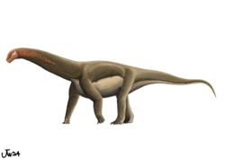
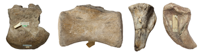
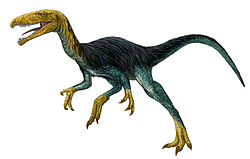
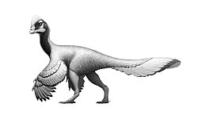
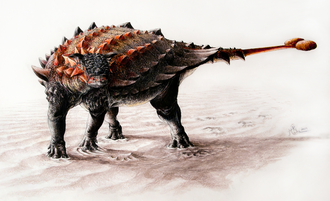
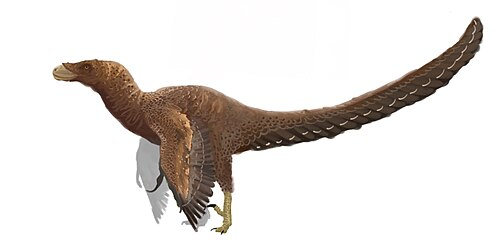
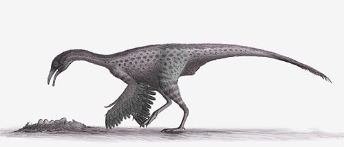

Привет! Это сайт посвещённый динозаврм, это мой курсовой проект.
Наслождайтесь!
«Триасовый период»
Азилозавр
Азилозавр (лат. Asylosaurus, "ящер из приюта") – род динозавров,
относящихся к кладе Dinosauriformes, живший в позднем триасе (рэтский
век, около 208-201 миллионов лет назад) на территории нынешней
Великобритании. Несмотря на то, что название звучит внушительно,
Азилозавр известен лишь по фрагментарным останкам, что делает его
одним из самых загадочных динозавров своего времени. Его история – это
история переоткрытий, классификационных споров и надежд на новые
открытия.
История открытия и классификации:
История Азилозавра начинается еще в 1836 году, когда британский геолог
Генри Райли обнаружил кости, которые впоследствии были отнесены к
Thecodontosaurus platygnathus. Прошло много времени, прежде чем Питер
Гальтон, в 2007 году, пересмотрел останки и пришел к выводу, что
некоторые из костей отличаются от типичных для Thecodontosaurus. Он
выделил их в отдельный род и вид – Asylosaurus yalensis. Название рода
Asylosaurus ("ящер из приюта") – это отсылка к Музею Городской
Археологии и Естественной Истории в Бристоле (Bristol City Museum and
Art Gallery), где хранились оригинальные кости, прежде чем они были
уничтожены во время бомбардировок Второй мировой войны. Видовое
название yalensis происходит от аббревиатуры YPM, обозначающей
Йельский музей естественной истории (Yale Peabody Museum), где Гальтон
проводил свои исследования. Классификация Азилозавра является
предметом дискуссий. Гальтон первоначально отнес его к группе
Dinosauriformes, находящейся между завроподоморфами и тероподами.
Однако, из-за фрагментарности останков, точное положение Азилозавра на
эволюционном дереве динозавров остается неопределенным. Некоторые
исследователи предполагают, что он может быть ранним завроподоморфом,
другие – более базальным динозавром.
Описание:
Из-за ограниченности ископаемого материала, точный внешний вид
Азилозавра остается неясным. Известно, что он был относительно
небольшим динозавром, вероятно, длиной около 2-3 метров. По имеющимся
костям, ученые предполагают, что он обладал стройным телосложением и,
вероятно, был двуногим. Предполагается, что Азилозавр был хищником или
всеядным животным. Его зубы, хотя и небольшие, имели зазубрины, что
указывает на возможность переработки мяса. Однако, учитывая его размер
и вероятную скорость, он мог охотиться на мелких животных, насекомых
или питаться падалью.
Место обитания и образ жизни:
Азилозавр жил в позднем триасе на территории, которая сейчас является
Великобританией. В то время климат был более теплым и влажным, чем
сегодня. Ландшафт представлял собой смесь лесов, болот и прибрежных
равнин. Азилозавр делил свою среду обитания с другими ранними
динозаврами, текодонтозаврами, ранними крокодиломорфами и другими
рептилиями. Учитывая его предполагаемый рацион, Азилозавр, вероятно,
охотился в лесах и на открытых пространствах, выслеживая мелких
животных или собирая насекомых. Его стройное телосложение и двуногий
способ передвижения могли позволять ему быстро перемещаться по
местности, преследуя добычу или избегая хищников.
Интересные факты:
Потерянные кости: К сожалению, большая часть оригинальных костей
Азилозавра была уничтожена во время Второй мировой войны, что делает
изучение этого динозавра особенно сложным.
Приют для динозавра: Название "Азилозавр" подчеркивает важность
музеев как хранителей ископаемых останков, которые могут быть
утрачены в результате стихийных бедствий или военных действий.
Кем был предок?: Изучение Азилозавра может пролить свет на эволюцию
динозавров и происхождение завроподоморфов – группы, в которую
входят самые крупные наземные животные, когда-либо существовавшие на
Земле.
Герреразавр
Герреразавр (лат. Herrerasaurus) – род вымерших динозавров, живших в
позднем триасовом периоде (около 231–228 миллионов лет назад) на
территории современной Аргентины. Он считается одним из самых ранних
известных динозавров, занимая уникальное положение на эволюционном
древе, которое до сих пор вызывает споры среди палеонтологов.
История открытия:
Останки герреразавра были впервые обнаружены в 1963 году аргентинским
палеонтологом Виктором Герреро, в честь которого и был назван
динозавр. В последующие годы были найдены дополнительные окаменелости,
позволяющие составить более полное представление об этом древнем
хищнике.
Классификация и эволюционное положение:
Некоторые учёные считают герреразавра базальным саурискомем
(Saurichia), группой, к которой принадлежат зауроподы и тероподы.
Другие исследователи предполагают, что герреразавр мог быть даже вне
группы динозавров, представляя собой отдельную линию эволюции
архозавров. Эта неопределённость подчеркивает сложность ранней
эволюции динозавров и трудность установления точных родственных связей
между первыми представителями этого отряда.
Физическое описание:
Герреразавр был относительно небольшим динозавром, достигавшим в длину
около 6 метров. Он был двуногим хищником с длинным хвостом, который
использовался для баланса. Его череп был узким и удлиненным, с
острыми, загнутыми назад зубами, идеально приспособленными для
разрывания мяса. Интересной особенностью строения герреразавра
является наличие дополнительных суставных поверхностей на нижней
челюсти, позволявших ей двигаться с большей амплитудой, чем у более
поздних динозавров. Это могло обеспечивать более сильный укус. Его
конечности были относительно длинными и мускулистыми, что говорит о
способности к быстрому бегу.
Образ жизни:
Герреразавр был активным хищником, вероятно, охотившимся на различных
животных позднего триаса. Его жертвами могли быть другие ранние
рептилии, включая дицинодонтов и других динозавров. Возможно,
герреразавр занимал нишу верховного хищника в своей экосистеме.
Среда обитания:
Останки герреразавра были обнаружены в отложениях, сформировавшихся в
полупустынных или засушливых условиях. Это говорит о том, что
герреразавр обитал в среде с редкими водоёмами и зарослями
растительности.
Интересные факты:
Асимметрия зубов: Зубы герреразавра демонстрируют некоторую
асимметрию, что необычно для динозавров.
Примитивные черты: Некоторые анатомические особенности герреразавра,
например, строение таза, считаются более примитивными, чем у других
ранних динозавров.
Вклад в эволюционную историю: Изучение герреразавра помогает ученым
понять ранние этапы эволюции динозавров и их родственные связи с
другими группами архозавров.
Герреразавриды

Герреразавриды (лат. Herrerasauridae) – семейство ранних тероподовых
динозавров, живших в позднем триасовом периоде (около 235-221,5
миллионов лет назад). Эти плотоядные динозавры были одними из самых
ранних представителей теропод и обитали в основном на территории
современной Южной Америки, а также, возможно, в Северной Америке и
Индии. Семейство включает в себя таких известных представителей, как
Герреразавр (Herrerasaurus) и Sanjuansaurus.
Герреразавриды играют важную роль в понимании эволюции динозавров, так
как их анатомические особенности помогают палеонтологам исследовать
ранние этапы развития теропод.
История открытия и изучения
Первые останки герреразаврид были обнаружены в 1960-х годах в
Аргентине.
Находки, в частности, костей герреразавра, стали отправной точкой для
изучения этого семейства.
В последующие годы были найдены новые окаменелости, позволившие
уточнить классификацию и анатомию герреразаврид.
Несмотря на это, их точное положение на филогенетическом древе
динозавров до сих пор остается предметом научных дискуссий.
Важность изучения герреразаврид заключается в их уникальном сочетании
примитивных и продвинутых черт, что делает их ключевыми фигурами в
понимании ранней эволюции теропод.
Классификация
Классификация герреразаврид остаётся спорной.
Некоторые исследователи относят их к базальным тероподам, то есть к
ранним представителям этой группы.
Другие ученые считают, что они представляют собой отдельную, более
примитивную ветвь динозавров, не относящуюся к тероподам напрямую.
Внутри семейства обычно выделяют несколько родов, таких как
Herrerasaurus, Sanjuansaurus и возможно Staurikosaurus.
Однако, классификация Staurikosaurus внутри семейства также
является предметом дебатов.
Точное определение положения герреразаврид на эволюционном древе
требует дальнейших исследований и новых находок.
Характерные особенности
Герреразавриды обладали рядом уникальных анатомических особенностей,
которые отличали их от других ранних динозавров:
Двуногое передвижение: Они были ловкими и быстрыми хищниками,
передвигавшимися на двух ногах.
Острые зубы: Их зубы были загнутыми назад и зазубренными, что
позволяло эффективно разрывать мясо.
Легкий скелет: Скелет был относительно легким и полым, что
способствовало быстрому передвижению.
Сильные задние конечности: Задние конечности были длинными и
мускулистыми, обеспечивая высокую скорость.
Длинный хвост: Хвост служил балансиром при беге.
Палеоэкология и образ жизни
Герреразавриды жили в период позднего триаса, в условиях жаркого и
засушливого климата.
Они были хищниками и, вероятно, охотились на других рептилий и ранних
динозавров, обитавших в их среде.
Учитывая их размер и строение, можно предположить, что они были
активными охотниками, способными быстро преследовать свою добычу.
На территории, где были найдены останки герреразаврид, также обитали
другие рептилии, амфибии и ранние млекопитающие, которые могли служить
им пищей.
Гетеродонтозавриды
Гетеродонтозавриды (лат. Heterodontosauridae) – семейство небольших,
растительноядных или всеядных динозавров, живших в позднем триасовом и
раннем юрском периодах (около 208-190 миллионов лет назад). Их останки
найдены в Южной Африке, Южной Америке и, возможно, в Азии.
Отличительной чертой этих динозавров является наличие различных типов
зубов, включая резцы, клыки и коренные зубы, что довольно необычно для
ранних динозавров. Это разнообразие в зубной системе дало название
всему семейству (гетеродонтозавр означает "разнозубый ящер").
История открытия и изучения
Первые останки гетеродонтозаврид были обнаружены в Южной Африке в
1920-х годах.
Род Heterodontosaurus был описан в 1962 году палеонтологом
Альфредом Уолтером Кромепом.
В последующие годы были найдены другие представители этого семейства,
что позволило ученым лучше понять их эволюцию и анатомию.
Несмотря на относительно небольшое количество известных видов,
гетеродонтозавриды представляют большой интерес для палеонтологов, так
как их уникальная зубная система проливает свет на ранние этапы
эволюции растительноядных динозавров.
Классификация
Гетеродонтозавриды классифицируются как базальные орнитоподы, то есть
они принадлежат к ранним представителям группы птицетазовых
динозавров.
Внутри семейства выделяют несколько родов, включая
Heterodontosaurus, Pegomastax, Tianyulong, Manidens и другие.
Однако, классификация некоторых родов внутри семейства может быть
спорной и обсуждается среди ученых.
Гетеродонтозавриды занимают важное место в понимании ранней эволюции
орнитопод и их переходе к растительной диете.
Характерные особенности
Гетеродонтозавриды обладали рядом уникальных характеристик:
Разнозубость: Наличие различных типов зубов (резцы, клыки,
коренные) в челюсти.
Небольшие размеры: Длина тела обычно не превышала 1-2 метра.
Короткие передние конечности: Передние конечности были
значительно короче задних.
Относительно большая голова: Голова была непропорционально
большой по сравнению с телом.
Предположительно щеки: Некоторые ученые предполагают, что у
гетеродонтозаврид были мясистые щеки, помогавшие удерживать пищу во
рту.
Палеоэкология и образ жизни
Гетеродонтозавриды жили в разнообразных условиях, от засушливых до
более влажных регионов.
Они были растительноядными или, возможно, всеядными животными,
питавшимися листьями, стеблями и, возможно, насекомыми.
Наличие клыков у некоторых представителей семейства может указывать на
возможность употребления в пищу насекомых или других мелких животных.
Вероятно, они были активными и подвижными динозаврами, способными
быстро убегать от хищников. Их небольшие размеры могли позволять им
прятаться в растительности.
Годжиразавр
Годжиразавр (лат. Gojirasaurus quayi) – род тероподовых
динозавров, живших в позднем триасовом периоде (норийский ярус, около
208,5-203,6 миллионов лет назад) на территории современной Северной
Америки (штат Нью-Мексико). Название рода происходит от японского
слова "Годзилла", из-за большого размера тела, предполагаемого для
этого динозавра в момент открытия, а также места обнаружения - карьер,
находящийся недалеко от города Тукумкари (Tucumcari) в штате
Нью-Мексико.
История открытия и изучения
Останки годжиразавра были обнаружены в 1994 году.
Он был описан Кеннетом Карпентером в 1997 году.
Окаменелости включали в себя фрагменты скелета, в том числе ребра,
позвонки и части тазовых костей.
Размер костей первоначально указывал на то, что это был очень крупный
теропод для своего времени, но последующие исследования показали, что
образец мог принадлежать молодому животному.
Классификация
Классификация годжиразавра остаётся несколько неопределенной.
Первоначально его относили к цератозаврам, но в настоящее время
большинство палеонтологов считают его базальным (то есть примитивным)
тероподом, возможно, близким к целофизоидам.
Точное положение годжиразавра требует дальнейших исследований и,
возможно, новых находок.
Характерные особенности
Из-за фрагментарности останков, точные характеристики годжиразавра
трудно установить.
Предполагается, что он был двуногим хищником.
Первоначальные оценки размера тела указывали на длину около 5-6
метров, но эти оценки могут быть завышены.
Палеоэкология и образ жизни
Годжиразавр обитал в среде, где также жили другие ранние динозавры и
рептилии.
Он, вероятно, был активным хищником, охотившимся на более мелких
животных.
Гуайбазавр
Гуайбазавр (лат. Guaibasaurus candelariensis) – род ранних
динозавров, живших в позднем триасовом периоде (норийский ярус, около
225-200 миллионов лет назад) на территории современной Бразилии. Он
является одним из самых ранних известных представителей
зауроподоморфов, группы динозавров, включающей зауроподов и их
предков.
История открытия и изучения
Останки гуайбазавра были обнаружены в 1990-х годах в формации
Candelária в Бразилии.
Род был назван в 1999 году.
Окаменелости включали в себя части скелета, в том числе позвонки,
кости конечностей и фрагменты черепа.
Классификация
Гуайбазавр классифицируется как базальный зауроподоморф.
Его положение в группе зауроподоморфов помогает ученым понять ранние
этапы эволюции этой группы динозавров.
Он обладает признаками, характерными как для более примитивных
динозавров, так и для более поздних зауроподоморфов.
Характерные особенности
Гуайбазавр был относительно небольшим динозавром, достигавшим в длину
около 2 метров.
Он был двуногим или, возможно, четвероногим животным.
У него были легкое телосложение и длинные конечности.
Палеоэкология и образ жизни
Гуайбазавр обитал в среде, где также жили другие ранние динозавры и
рептилии.
Он, вероятно, был всеядным, питаясь как растениями, так и мелкими
животными.
Демонозавр
Демонозавр (лат. *Daemonosaurus chauliodus*) – род тероподовых
динозавров, живших в позднем триасовом периоде (норийский ярус, около
205 миллионов лет назад) на территории современной Северной Америки
(штат Нью-Мексико). Известен по единственному, довольно хорошо
сохранившемуся черепу.
История открытия и изучения
Останки демонозавра были найдены в Ghost Ranch, Нью-Мексико, в 2004
году.
Был описан Hans-Dieter Sues и коллегами в 2011 году.
Единственный известный образец - череп, который демонстрирует
интересные особенности.
Классификация
Первоначально его относили к базальным тероподам, возможно, к
цератозаврам.
Некоторые исследователи находят в нем сходство с герреразавридами, в
то время как другие относят его к Avetheropoda (более продвинутой
группе теропод).
Его точное местоположение в пределах теропод остается спорным.
Характерные особенности
Череп обладает относительно коротким рылом.
Зубы длинные и острые, указывают на хищный образ жизни.
У него есть несколько уникальных особенностей черепа, отличающих его
от других ранних теропод.
Палеоэкология и образ жизни
Демонозавр обитал в среде, где также жили другие ранние динозавры и
рептилии.
Предположительно, был хищником, охотившимся на более мелких животных.
Зупайзавр
Зупайзавр (лат. Zupaysaurus rougieri) – род тероподовых
динозавров, живших в позднем триасовом периоде (норийский ярус, около
210 миллионов лет назад) на территории современной Аргентины.
История открытия и изучения
Останки зупайзавра были обнаружены в формации Los Colorados,
Аргентина, в 1990-х годах.
Был описан Аршадом М. Юсемом в 2000 году.
Окаменелости включают частичный скелет, включая череп, позвонки и
кости конечностей.
Классификация
Классификация зупайзавра довольно сложная.
Первоначально его относили к целофизоидам, а некоторые ученые считают,
что он может быть ближе к тетанурам.
Недавние исследования показывают, что он может быть вне группы
Averostra (куда входят Целофизоиды и Тетураны), но все еще является
относительно базальным тероподом.
Характерные особенности
Зупайзавр был среднего размера тероподом, достигавшим в длину около 4
метров.
У него был гребень на черепе, возможно, использовавшийся для
демонстрации.
Зубы были острыми и загнутыми назад, что указывает на хищный образ
жизни.
Палеоэкология и образ жизни
Зупайзавр обитал в среде, где также жили другие ранние динозавры и
рептилии.
Он был активным хищником, охотившимся на более мелких животных.
Колорадизавр

Колорадизавр (лат. Coloradisaurus brevis) – род
зауроподоморфных динозавров, живших в позднем триасовом периоде
(норийский ярус, около 227-208 миллионов лет назад) на территории
современной Аргентины.
История открытия и изучения
Останки колорадизавра были обнаружены в формации Los Colorados,
Аргентина.
Был описан José Bonaparte в 1978 году.
Окаменелости включают частичный скелет, в том числе позвонки, ребра и
кости конечностей.
Классификация
Колорадизавр классифицируется как базальный зауроподоморф, близкий к
платеозавридам.
Он является одним из первых известных зауроподоморфов из Южной
Америки.
Характерные особенности
Колорадизавр был относительно крупным зауроподоморфом, достигавшим в
длину около 8-9 метров.
Он был травоядным животным с длинной шеей и хвостом.
Палеоэкология и образ жизни
Колорадизавр обитал в среде, где также жили другие ранние динозавры и
рептилии.
Он был растительноядным, питавшимся листьями и другой растительностью.
Лессемозавр

Лессемозавр (лат. Lessemsaurus sauropoides) – род
зауроподоморфных динозавров, живших в позднем триасовом периоде
(норийский ярус, около 227-208 миллионов лет назад) на территории
современной Аргентины.
История открытия и изучения
Останки лессемозавра были обнаружены в формации Los Colorados,
Аргентина.
Был описан José Bonaparte в 1999 году.
Окаменелости включают частичный скелет, в том числе позвонки, ребра и
кости конечностей.
Классификация
Лессемозавр классифицируется как базальный зауроподоморф, близкий к
платеозавридам и колорадизавру.
Некоторые ученые считают, что это может быть синонимом колорадизавра.
Характерные особенности
Лессемозавр был относительно крупным зауроподоморфом, достигавшим в
длину около 9 метров.
Он был травоядным животным с длинной шеей и хвостом.
Палеоэкология и образ жизни
Лессемозавр обитал в среде, где также жили другие ранние динозавры и
рептилии.
Он был растительноядным, питавшимся листьями и другой растительностью.
Лилиенштерн

Лилиенштерн (лат. Liliensternus liliensterni) – род тероподовых
динозавров, живших в позднем триасовом периоде (рэтский ярус, около
203-201 миллионов лет назад) на территории современной Европы
(Германия). Первоначально назывался Halticosaurus liliensterni.
История открытия и изучения
Останки лилиенштерна были обнаружены в Германии.
Был описан Friedrich von Huene в 1934 году.
Окаменелости включают частичный скелет, в том числе череп, позвонки и
кости конечностей.
Классификация
Лилиенштерн классифицируется как целофизоид, хотя точное его положение
в этой группе debated.
Это один из самых крупных известных целофизоидов.
Характерные особенности
Лилиенштерн был относительно крупным тероподом, достигавшим в длину
около 5-6 метров.
У него был гребень на голове, который, возможно, использовался для
демонстрации.
Он был двуногим хищником с острыми зубами.
Палеоэкология и образ жизни
Лилиенштерн обитал в среде, где также жили другие ранние динозавры и
рептилии.
Он был активным хищником, охотившимся на более мелких животных.
Меланорозавр

Меланорозавр (лат. Melanorosaurus readi) – род зауроподоморфных
динозавров, живших в позднем триасовом периоде (норийский ярус, около
221.5-205 миллионов лет назад) на территории современной Южной Африки.
История открытия и изучения
Останки меланорозавра были обнаружены в Южной Африке.
Был описан Sidney Haughton в 1924 году.
Окаменелости включают частичный скелет, в том числе позвонки и кости
конечностей.
Классификация
Меланорозавр классифицируется как базальный зауроподоморф.
Он является одним из наиболее хорошо известных базальных
зауроподоморфов.
Характерные особенности
Меланорозавр был относительно крупным зауроподоморфом, достигавшим в
длину около 8-12 метров.
Он был растительноядным животным с длинной шеей и хвостом.
Он мог ходить как на двух, так и на четырех ногах.
Палеоэкология и образ жизни
Меланорозавр обитал в среде, где также жили другие ранние динозавры и
рептилии.
Он был растительноядным, питавшимся листьями и другой растительностью.
Меланорозавриды

Меланорозавриды (лат. Melanorosauridae) – семейство зауроподоморфных
динозавров, живших в позднем триасовом периоде. Включает в себя род
Меланорозавр (Melanorosaurus) и, возможно, другие
близкородственные роды.
История открытия и изучения
Семейство основано на роде Меланорозавр, найденном в Южной Африке.
Изучение семейства направлено на понимание ранней эволюции
зауроподоморфов.
Классификация
Меланорозавриды классифицируются как базальные зауроподоморфы, стоящие
близко к происхождению зауропод.
Точный состав семейства остается предметом дебатов.
Характерные особенности
Меланорозавриды представляли собой крупных растительноядных
динозавров.
У них были массивные тела, длинные шеи и хвосты.
Они могли ходить как на двух, так и на четырех ногах.
Палеоэкология и образ жизни
Меланорозавриды обитали в среде, где также жили другие ранние
динозавры и рептилии.
Они были растительноядными, питавшимися листьями и другой
растительностью.
Мусзавр

Мусзавр (лат. Mussaurus patagonicus) – род зауроподоморфных
динозавров, живших в раннем юрском периоде (геттангский ярус, около
203,6-199,3 миллионов лет назад) на территории современной Аргентины.
Название означает "мышиный ящер", так как первые найденные образцы
были очень маленькими.
История открытия и изучения
Останки мусзавра были обнаружены в Аргентине.
Был описан José Bonaparte и Martin Vince в 1979 году.
Первоначально были найдены только очень маленькие скелеты, что привело
к представлению о небольшом размере этого динозавра, но позже были
найдены более крупные образцы, показывающие он вырастал до значительно
больших размеров.
Классификация
Мусзавр классифицируется как базальный зауроподоморф, близкий к
Plateosauria.
Изучение мусзавра дало ценную информацию о росте и развитии
зауроподоморфов.
Характерные особенности
Молодые мусзавры были очень маленькими, около 20 см в длину, с
большими глазами и короткой мордой.
Взрослые особи достигали длины около 6 метров.
Был растительноядным животным с длинной шеей и хвостом.
Палеоэкология и образ жизни
Мусзавр обитал в среде, где также жили другие ранние динозавры и
рептилии.
Он был растительноядным, питавшимся листьями и другой растительностью.
Ньясазавр
Ньясазавр (лат. Nyasasaurus parringtoni) – род динозавроморфов,
живших в среднем триасовом периоде (анийский ярус, около 247-242
миллионов лет назад) на территории современной Танзании. Спорный
таксон, может быть самым древним из известных динозавров.
История открытия и изучения
Останки ньясазавра были обнаружены в 1930-х годах, но оставались
неизученными в течение долгого времени.
Подробное описание было опубликовано в 2012 году.
Окаменелости включают частичные кости конечностей и позвонки.
Классификация
Классификация ньясазавра является предметом дебатов.
Некоторые исследователи считают его самым ранним динозавром, в то
время как другие классифицируют его как близкого родственника
динозавров (динозавроморфа), но не самого динозавра.
Если ньясазавр является динозавром, то это отодвигает время появления
динозавров в триасе на более ранний период.
Характерные особенности
Из-за фрагментарности останков, точные характеристики ньясазавра
трудно установить.
Предполагается, что он был относительно небольшим, возможно, около 2-3
метров в длину.
Палеоэкология и образ жизни
Ньясазавр обитал в среде, где также жили другие ранние рептилии.
Его образ жизни остается неясным из-за недостатка информации.
Пантидрако
Пантидрако (лат. Pantydraco caducus) – род зауроподоморфных
динозавров, живших в позднем триасовом периоде (рэтский ярус, около
208-201,3 миллионов лет назад) на территории современной
Великобритании (Уэльс). Считается одним из самых ранних
зауроподоморфов.
История открытия и изучения
Останки пантидрако были обнаружены в Уэльсе.
Первоначально классифицировался как образец *Thecodontosaurus
antiquus* в 1907 году, но был переклассифицирован и получил
собственное название в 2003 году.
Окаменелости включают частичный скелет.
Классификация
Пантидрако классифицируется как базальный зауроподоморф.
Близок к Thecodontosaurus, от которого отличается некоторыми
особенностями строения.
Характерные особенности
Пантидрако был небольшим зауроподоморфом, достигавшим в длину около 3
метров.
Был растительноядным или всеядным животным.
Палеоэкология и образ жизни
Пантидрако обитал в среде, где также жили другие ранние динозавры и
рептилии.
Он, вероятно, был растительноядным, питавшимся листьями и другой
растительностью.
Панфагия

Панфагия (лат. Panphagia protos) – род зауроподоморфных
динозавров, живших в позднем триасовом периоде (норийский ярус, около
228 миллионов лет назад) на территории современной Аргентины. Название
означает "всеядный" и указывает на предполагаемую диету этого
динозавра.
История открытия и изучения
Останки панфагии были обнаружены в формации Quebrada del Barro,
Аргентина.
Был описан Ricardo N. Martinez и Oscar A. Alcober в 2009 году.
Окаменелости включают частичный скелет, в том числе череп, позвонки и
кости конечностей.
Классификация
Панфагия классифицируется как базальный зауроподоморф.
Он является одним из самых ранних известных зауроподоморфов,
демонстрирующим черты, переходные между хищными динозаврами и
растительноядными зауроподоморфами.
Характерные особенности
Панфагия был относительно небольшим динозавром, достигавшим в длину
около 1,3 метра.
У него были зубы, приспособленные как для отрывания растительности,
так и для захвата мелкой добычи, что указывает на всеядность.
Палеоэкология и образ жизни
Панфагия обитал в среде, где также жили другие ранние динозавры и
рептилии.
Он был, вероятно, всеядным, питаясь как растениями, так и мелкими
животными и насекомыми.
Пизанозавр
Пизанозавр (лат. Pisanosaurus mertii) – род динозавроморфов,
живших в позднем триасовом периоде (норийский ярус, около 228-216,5
миллионов лет назад) на территории современной Аргентины.
Классификация пизанозавра очень спорная, его иногда считают одним из
самых ранних орнитопод, но также рассматривается как динозавроморф вне
группы динозавров или как силеозавр.
История открытия и изучения
Останки пизанозавра были обнаружены в формации Ischigualasto,
Аргентина.
Был описан José Bonaparte в 1967 году.
Окаменелости включают частичный скелет, в том числе кости конечностей.
Классификация
Классификация пизанозавра очень спорная.
Первоначально считался ранним орнитоподом, но это оспаривается.
Некоторые ученые считают его динозавроморфом вне группы динозавров или
как члена группы Silesauridae.
Характерные особенности
Из-за фрагментарности останков, точные характеристики пизанозавра
трудно установить.
Предполагается, что он был небольшим динозавроморфом, около 1 метра в
длину.
Диета также не установлена, но обычно предполагается, что был
травоядным.
Палеоэкология и образ жизни
Пизанозавр обитал в среде, где также жили другие ранние динозавры и
рептилии.
Образ жизни остается неясным из-за недостатка информации.
Платеозавр

Платеозавр (лат. Plateosaurus engelhardti) – род
зауроподоморфных динозавров, живших в позднем триасовом периоде
(норийский и рэтский ярусы, около 214-204 миллионов лет назад) на
территории современной Европы (Германия, Франция, Швейцария). Это один
из наиболее хорошо известных и изученных ранних зауроподоморфов.
История открытия и изучения
Останки платеозавра были обнаружены в Европе в начале 19 века.
Был описан Hermann von Meyer в 1837 году.
Окаменелости включают множество полных и частичных скелетов.
Классификация
Платеозавр является типовым родом группы Plateosauria, включающей в
себя близкородственные роды.
Он классифицируется как базальный зауроподоморф, но более продвинутый,
чем некоторые другие ранние зауроподоморфы.
Характерные особенности
Платеозавр был крупным зауроподоморфом, достигавшим в длину около
4.8-10 метров.
У него была длинная шея и хвост.
Он мог ходить как на двух, так и на четырех ногах.
Палеоэкология и образ жизни
Платеозавр обитал в среде, где также жили другие ранние динозавры и
рептилии.
Он был растительноядным, питавшимся листьями и другой растительностью.
Платеозавриды

Платеозавриды (лат. Plateosauridae) – семейство зауроподоморфных
динозавров, живших в позднем триасовом периоде. Включает в себя род
Платеозавр (Plateosaurus) и другие близкородственные роды,
такие как *Ruehleia*.
История открытия и изучения
Семейство основано на роде Платеозавр, найденном в Европе.
Изучение семейства направлено на понимание эволюции и разнообразия
ранних зауроподоморфов.
Классификация
Платеозавриды классифицируются как базальные зауроподоморфы, более
продвинутые, чем меланорозавриды, но менее продвинутые, чем
зауроподы.
Точный состав семейства остается предметом дебатов.
Характерные особенности
Платеозавриды представляли собой крупных растительноядных динозавров.
У них были массивные тела, длинные шеи и хвосты.
Они могли ходить как на двух, так и на четырех ногах.
Палеоэкология и образ жизни
Платеозавриды обитали в среде, где также жили другие ранние динозавры
и рептилии.
Они были растительноядными, питавшимися листьями и другой
растительностью.
Прокомпсогнат

Прокомпсогнат (лат. Procompsognathus triassicus) – род
тероподовых динозавров, живших в позднем триасовом периоде (норийский
ярус, около 210 миллионов лет назад) на территории современной Европы
(Германия).
История открытия и изучения
Останки прокомпсогната были обнаружены в Германии.
Был описан Eberhard Fraas в 1913 году.
Окаменелости включают неполный скелет.
Классификация
Классификация прокомпсогната долгое время была неопределенной.
Ранее его относили к компсогнатам (Compsognathidae), но сейчас
большинство ученых считают его базальным целофизоидом.
Считается, что он тесно связан с *Segisaurus*.
Характерные особенности
Прокомпсогнат был небольшим тероподом, достигавшим в длину около 1
метра.
У него было легкое телосложение и длинные конечности.
Он был двуногим хищником с острыми зубами.
Палеоэкология и образ жизни
Прокомпсогнат обитал в среде, где также жили другие ранние динозавры и
рептилии.
Он был активным хищником, охотившимся на мелких животных и насекомых.
Риохазавр
Риохазавр (лат. Riojasaurus incertus) – род зауроподоморфных
динозавров, живших в позднем триасовом периоде (норийский ярус, около
221.5-208 миллионов лет назад) на территории современной Аргентины. Он
был одним из первых крупных динозавров и демонстрирует переходные
черты между ранними двуногими динозаврами и гигантскими четвероногими
зауроподами.
История открытия и изучения
Останки риохазавра были обнаружены в формации Los Colorados,
расположенной в провинции Ла-Риоха, Аргентина. Именно в честь этой
провинции и назван род.
Первые окаменелости были найдены в 1967 году.
Род и вид Riojasaurus incertus были описаны знаменитым
аргентинским палеонтологом Хосе Бонапарте в 1969 году.
На сегодняшний день обнаружено несколько скелетов риохазавра, включая
относительно полные, что делает его одним из наиболее изученных ранних
зауроподоморфов.
Классификация
Риохазавр классифицируется как базальный зауроподоморф, принадлежащий
к группе Sauropodomorpha, которая включает в себя предков гигантских
зауроподов.
Он занимает промежуточное положение между ранними двуногими
"прозауроподами" и более поздними четвероногими зауроподами.
Его точное положение в эволюционном древе динозавров является
предметом дискуссий, но он часто рассматривается как один из наиболее
базальных зауроподоморфов, не входящих в состав Plateosauridae
(семейство платеозавров).
Характерные особенности
Риохазавр был достаточно крупным динозавром для своего времени,
достигая в длину около 9-11 метров и весом до 4 тонн.
У него была относительно длинная шея, составляющая примерно треть
общей длины тела, что позволяло ему доставать до высоких листьев.
Несмотря на свои размеры, риохазавр обладал достаточно стройным
телосложением по сравнению с более поздними зауроподами.
Передние конечности были заметно короче задних, но достаточно
крепкими, что указывает на возможность как двуногого, так и
четвероногого передвижения. Скорее всего, он передвигался
преимущественно на четырех ногах, но мог вставать на задние лапы,
чтобы дотянуться до более высоких растений.
Череп риохазавра был относительно небольшим и лёгким, с листовидными
зубами, приспособленными для пережевывания растительности.
Палеоэкология и образ жизни
В позднем триасовом периоде регион, где обитал риохазавр, представлял
собой влажную и теплую среду с пышной растительностью. Он делил свою
среду обитания с другими ранними динозаврами, рептилиями и
земноводными.
Риохазавр был травоядным животным, питавшимся разнообразной
растительностью, включавшей папоротники, хвойные и другие примитивные
растения.
Массивное телосложение и крепкие конечности позволяли ему добывать
пищу в течение длительного времени.
Существуют предположения, что риохазавры могли жить стадами, но прямых
доказательств этому нет.
Будучи одним из крупнейших животных в своей экосистеме, риохазавр,
вероятно, занимал вершину пищевой цепи среди травоядных.
Интересные факты
Апатозавр
Апатозавр (лат. Apatosaurus) – род зауроподовых динозавров, живших в позднем юрском периоде (киммериджский-титонский века, около 154-145 миллионов лет назад) на территории современной Северной Америки. Один из самых известных и крупных динозавров.
История открытия и изучения
Останки апатозавра были найдены в формации Моррисон, США.
Род был описан Отниелом Чарльзом Маршем в 1877 году.
Название рода означает "обманчивый ящер", из-за сходства костей с другими динозаврами.
Классификация
Апатозавр классифицируется как диплодоцид, принадлежащий к группе зауроподов.
Характерные особенности
Огромный размер, длина до 21-23 метров.
Длинная шея и хвост.
Череп относительно небольшой по сравнению с размером тела.
Палеоэкология и образ жизни
Апатозавр обитал в среде с обильной растительностью в позднем юрском периоде.
Анхиорнис
Анхиорнис (лат. Anchiornis huxleyi) – род динозавров, который, вероятно, является ранним представителем птиц. Жил в позднем юрском периоде (около 160 миллионов лет назад) на территории современного Китая. Известен своими хорошо сохранившимися окаменелостями, которые сохранили отпечатки перьев.
История открытия и изучения
Останки анхиорниса были найдены в формации Tiaojishan, провинция Ляонин, Китай.
Род был описан Xu Xing и соавторами в 2009 году.
Название рода происходит от греческих слов, означающих "почти птица". Видовое название huxleyi дано в честь Томаса Генри Хаксли.
Классификация
Анхиорнис классифицируется как ранний манираптор, близкий к птицам. Он занимает важное место в понимании эволюции перьев и полета.
Характерные особенности
Небольшой динозавр с оперением, включая перья на ногах.
Размер тела около 34 см.
Четыре крыла (перья на ногах) могли использоваться для планирования или маневрирования в воздухе.
Окраска перьев была установлена на основе анализа окаменелостей.
Палеоэкология и образ жизни
Анхиорнис обитал в лесистой местности в позднем юрском периоде.
Предполагается, что он был всеядным или насекомоядным.
Вероятно, вел древесный образ жизни, используя перья для планирования или коротких перелетов.
Апатозавр
Апатозавр (лат. Apatosaurus) – род зауроподовых динозавров, живших в позднем юрском периоде (киммериджский-титонский века, около 154-145 миллионов лет назад) на территории современной Северной Америки. Один из самых известных и крупных динозавров.
История открытия и изучения
Останки апатозавра были найдены в формации Моррисон, США.
Род был описан Отниелом Чарльзом Маршем в 1877 году.
Название рода означает "обманчивый ящер", из-за сходства костей с другими динозаврами.
Классификация
Апатозавр классифицируется как диплодоцид, принадлежащий к группе зауроподов.
Характерные особенности
Огромный размер, длина до 21-23 метров.
Длинная шея и хвост.
Череп относительно небольшой по сравнению с размером тела.
Палеоэкология и образ жизни
Апатозавр обитал в среде с обильной растительностью в позднем юрском периоде.
Был травоядным, питался листвой деревьев.
Археоптерикс
Археоптерикс (лат. Archaeopteryx lithographica) – род динозавров, занимающий промежуточное положение между рептилиями и птицами. Жил в позднем юрском периоде (титонский век, около 150 миллионов лет назад) на территории современной Германии. Является одним из самых известных переходных ископаемых.
История открытия и изучения
Останки археоптерикса были найдены в Зольнхофенском известняке, Германия.
Род был описан Германом фон Мейером в 1861 году.
Название рода означает "древнее крыло".
Классификация
Археоптерикс классифицируется как ранний манираптор, близкий к птицам, и часто считается одним из самых ранних известных птиц.
Характерные особенности
Сочетал признаки рептилий и птиц: зубы, длинный костный хвост, когти на крыльях и перья.
Размер тела около 50 см.
Перья были асимметричными, что указывает на способность к полету.
Палеоэкология и образ жизни
Археоптерикс обитал в лагунах и островах в позднем юрском периоде.
Предполагается, что он был всеядным или насекомоядным.
Возможно, вел древесный образ жизни, используя крылья для планирования или коротких перелетов.
Атлантозавр
Атлантозавр (лат. Atlantosaurus) – род зауроподовых динозавров, живших в позднем юрском периоде (киммериджский-титонский века, около 154-145 миллионов лет назад) на территории современной Северной Америки. Известен по фрагментарным останкам.
История открытия и изучения
Останки атлантозавра были найдены в формации Моррисон, США.
Род был описан Отниелом Чарльзом Маршем в 1877 году.
Название рода происходит от имени титана Атланта, который в греческой мифологии держит небесный свод, намекая на огромный размер.
Классификация
Атлантозавр классифицируется как зауропод, но его точное положение в рамках этой группы остается неопределенным из-за фрагментарности останков.
Характерные особенности
Размеры неизвестны из-за фрагментарности останков, но предполагается, что был крупным.
Известен по нескольким позвонкам.
Палеоэкология и образ жизни
Атлантозавр обитал в среде с обильной растительностью в позднем юрском периоде.
Вероятно, был травоядным, питался листвой деревьев.
Афровенатор
Афровенатор (лат. Afrovenator abakensis) – род тероподовых динозавров, живших в среднем юрском периоде (батский век, около 164 миллиона лет назад) на территории современной Африки (Нигер). Является одним из наиболее полных тероподов, найденных в Африке.
История открытия и изучения
Останки афровенатора были найдены в формации Irhazer II, Нигер.
Род был описан Sereno и соавторами в 1994 году.
Название рода означает "африканский охотник". Видовое название abakensis происходит от местности Abaka.
Классификация
Афровенатор классифицируется как мегалозаврид, принадлежащий к группе тероподов.
Характерные особенности
Длина тела около 8-9 метров.
Легкое строение тела, что указывает на подвижность.
Череп характеризуется гребнем на носу.
Палеоэкология и образ жизни
Афровенатор обитал в среде с разнообразной фауной в среднем юрском периоде.
Был хищником, охотился на других динозавров и животных.
Барапазавр
Барапазавр (лат. Barapasaurus tagorei) – род зауроподовых динозавров, живших в раннем юрском периоде (геттангский-синемюрский века, около 200-190 миллионов лет назад) на территории современной Индии. Является одним из самых ранних известных зауроподов.
История открытия и изучения
Останки барапазавра были найдены в формации Kota, Индия.
Род был описан Jain и соавторами в 1975 году.
Название рода означает "большеногий ящер". Видовое название tagorei дано в честь Рабиндраната Тагора.
Классификация
Барапазавр классифицируется как зауропод, принадлежащий к группе базальных зауроподов.
Характерные особенности
Длина тела около 12-14 метров.
Массивные конечности.
Длинная шея и хвост.
Палеоэкология и образ жизни
Барапазавр обитал в среде с обильной растительностью в раннем юрском периоде.
Был травоядным, питался листвой деревьев.
Барозавр
Барозавр (лат. Barosaurus lentus) – род зауроподовых динозавров, живших в позднем юрском периоде (киммериджский-титонский века, около 156-145 миллионов лет назад) на территории современной Северной Америки. Известен своей очень длинной шеей.
История открытия и изучения
Останки барозавра были найдены в формации Моррисон, США.
Род был описан Отниелом Чарльзом Маршем в 1890 году.
Название рода означает "тяжелый ящер". Видовое название lentus означает "гибкий".
Классификация
Барозавр классифицируется как диплодоцид, принадлежащий к группе зауроподов.
Характерные особенности
Длина тела около 24-27 метров, значительная часть которой приходилась на шею.
Чрезвычайно длинная шея, возможно, самая длинная среди всех динозавров.
Относительно легкое телосложение по сравнению с другими зауроподами.
Палеоэкология и образ жизни
Барозавр обитал в среде с обильной растительностью в позднем юрском периоде.
Был травоядным, питался листвой деревьев, возможно, доставал пищу с самых высоких деревьев.
Брахиозавр
Брахиозавр (лат. Brachiosaurus altithorax) – род зауроподовых динозавров, живших в позднем юрском периоде (киммериджский-титонский века, около 154-145 миллионов лет назад) на территории современной Северной Америки. Один из самых высоких динозавров.
История открытия и изучения
Останки брахиозавра были найдены в формации Моррисон, США.
Род был описан Элмером Риггсом в 1903 году.
Название рода означает "плечистый ящер", из-за длинных передних конечностей.
Классификация
Брахиозавр классифицируется как брахиозаврид, принадлежащий к группе зауроподов.
Характерные особенности
Длина тела около 26 метров, высота около 13 метров.
Длинные передние конечности, которые были длиннее задних.
Небольшая голова и относительно короткий хвост.
Палеоэкология и образ жизни
Брахиозавр обитал в среде с обильной растительностью в позднем юрском периоде.
Был травоядным, питался листвой высоких деревьев.
Брахиозавриды
Брахиозавриды (лат. Brachiosauridae) – семейство зауроподовых динозавров, живших в юрском и меловом периодах. Характеризуются длинными передними конечностями, которые длиннее задних, и высоким ростом.
История открытия и изучения
Семейство было выделено в начале 20-го века.
Состав семейства менялся по мере новых открытий и исследований.
Классификация
Брахиозавриды классифицируются как зауроподы, принадлежащие к группе Macronaria.
Характерные особенности
Длинные передние конечности, которые длиннее задних.
Высокий рост.
Небольшая голова и относительно короткий хвост.
Палеоэкология и образ жизни
Брахиозавриды обитали в среде с обильной растительностью в юрском и меловом периодах.
Были травоядными, питались листвой высоких деревьев.
Брахитрахелопан
Брахитрахелопан (лат. Brachytrachelopan mesai) – род зауроподовых динозавров, живших в позднем юрском периоде (киммериджский век, около 150 миллионов лет назад) на территории современной Аргентины. Отличается короткой шеей по сравнению с другими зауроподами.
История открытия и изучения
Останки брахитрахелопана были найдены в формации Cañadón Calcáreo, Аргентина.
Род был описан Oliver Walter Misera и соавторами в 2005 году.
Название рода означает "короткошеий пан". Видовое название mesai дано в честь Даниэля Месы.
Классификация
Брахитрахелопан классифицируется как диплодоцид, принадлежащий к группе зауроподов.
Характерные особенности
Длина тела около 9-10 метров.
Короткая шея, состоящая из 12 позвонков.
Короткие передние конечности.
Палеоэкология и образ жизни
Брахитрахелопан обитал в среде с разнообразной растительностью в позднем юрском периоде.
Был травоядным, питался низкорослой растительностью.
Бревипароп

Бревипароп (лат. Brevisparopus tagorei) – род зауроподовых динозавров, живших в раннем юрском периоде. Останки найдены в Индии. Информации о нем крайне мало, и его классификация спорна.
История открытия и изучения
Известен по отпечаткам лап, найденным в Индии.
Классификация
Классификация не определена из-за малого количества материала.
Характерные особенности
Известен только по отпечаткам лап.
Палеоэкология и образ жизни
Предположительно обитал в раннем юрском периоде в Индии.
Бронтозавр
Бронтозавр (лат. Brontosaurus excelsus) – род зауроподовых динозавров, живших в позднем юрском периоде (киммериджский-титонский века, около 154-145 миллионов лет назад) на территории современной Северной Америки. Долгое время считался синонимом апатозавра, но позже был восстановлен в качестве отдельного рода.
История открытия и изучения
Останки бронтозавра были найдены в формации Моррисон, США.
Род был описан Отниелом Чарльзом Маршем в 1879 году.
Название рода означает "громовой ящер".
Классификация
Бронтозавр классифицируется как диплодоцид, принадлежащий к группе зауроподов.
Характерные особенности
Длина тела около 22 метров.
Длинная шея и хвост.
Массивное телосложение.
Палеоэкология и образ жизни
Бронтозавр обитал в среде с обильной растительностью в позднем юрском периоде.
Был травоядным, питался листвой деревьев.
Велоцирапторины

Велоцирапторины (лат. Velociraptorinae) – подсемейство дромеозаврид, группы тероподовых динозавров, известных своей ловкостью и серповидными когтями на ногах.
История открытия и изучения
Подсемейство было выделено в рамках семейства дромеозаврид.
Классификация
Велоцирапторины классифицируются как дромеозавриды, принадлежащие к группе тероподов.
Характерные особенности
Серповидный коготь на втором пальце стопы.
Легкое телосложение.
Относительно длинные передние конечности.
Палеоэкология и образ жизни
Велоцирапторины обитали в меловом периоде в различных частях мира.
Были хищниками, охотились на мелких и средних животных.
Вулканодон

Вулканодон (лат. Vulcanodon karibaensis) – род зауроподовых динозавров, живших в раннем юрском периоде (геттангский-синемюрский века, около 200-190 миллионов лет назад) на территории современной Зимбабве. Является одним из самых ранних известных зауроподов.
История открытия и изучения
Останки вулканодона были найдены в формации Upper Karoo Group, Зимбабве.
Род был описан Майклом А. Раатом в 1972 году.
Название рода означает "зуб вулкана".
Классификация
Вулканодон классифицируется как зауропод, принадлежащий к группе базальных зауроподов.
Характерные особенности
Длина тела около 6,5 метров.
Массивные конечности.
Относительно короткая шея.
Палеоэкология и образ жизни
Вулканодон обитал в среде с обильной растительностью в раннем юрском периоде.
Был травоядным, питался листвой деревьев.
Гаплокантозавр
Гаплокантозавр (лат. Haplocanthosaurus) – род зауроподовых динозавров, живших в позднем юрском периоде (киммериджский-титонский века, около 154-145 миллионов лет назад) на территории современной Северной Америки. Известен своими высокими спинными позвонками.
История открытия и изучения
Останки гаплокантозавра были найдены в формации Моррисон, США.
Род был описан Хатчером в 1903 году.
Название рода означает "простой колючий ящер".
Классификация
Гаплокантозавр классифицируется как зауропод, принадлежащий к группе базальных зауроподов, но его точное положение не определено.
Характерные особенности
Длина тела около 12-14 метров.
Высокие спинные позвонки.
Относительно короткая шея.
Палеоэкология и образ жизни
Гаплокантозавр обитал в среде с обильной растительностью в позднем юрском периоде.
Был травоядным, питался листвой деревьев.
Гаплохейр
Гаплохейр (лат. Haplocheirus sollers) – род тероподовых динозавров, живших в позднем юрском периоде (оксфордский век, около 160 миллионов лет назад) на территории современного Китая. Является одним из самых ранних известных альваресзаврид.
История открытия и изучения
Останки гаплохейра были найдены в формации Shishugou, Китай.
Род был описан Choiniere и соавторами в 2010 году.
Название рода означает "простая рука". Видовое название sollers означает "ловкий".
Классификация
Гаплохейр классифицируется как альваресзаврид, принадлежащий к группе тероподов.
Характерные особенности
Длина тела около 2 метров.
Длинные передние конечности с крупным первым пальцем.
Легкое телосложение.
Палеоэкология и образ жизни
Гаплохейр обитал в среде с разнообразной фауной в позднем юрском периоде.
Предполагается, что он был всеядным или насекомоядным, используя свои мощные передние конечности для разрывания термитников или пней.
Гетеродонтозавр

Гетеродонтозавр (лат. Heterodontosaurus tucki) – род птицетазовых динозавров, живших в раннем юрском периоде (геттангский-синемюрский века, около 200-190 миллионов лет назад) на территории современной Южной Африки. Отличается наличием зубов разного типа, включая клыки.
История открытия и изучения
Останки гетеродонтозавра были найдены в формации Elliot Formation, Южная Африка.
Род был описан Кромптоном и Чаригом в 1962 году.
Название рода означает "разнозубый ящер". Видовое название tucki дано в честь Грандисона Такера.
Классификация
Гетеродонтозавр классифицируется как гетеродонтозаврид, принадлежащий к группе птицетазовых динозавров.
Характерные особенности
Длина тела около 1 метра.
Наличие зубов разного типа, включая клыки.
Легкое телосложение.
Палеоэкология и образ жизни
Гетеродонтозавр обитал в среде с разнообразной растительностью в раннем юрском периоде.
Предполагается, что он был всеядным, питался как растительностью, так и насекомыми.
Гетеродонтозавриды
Гетеродонтозавриды (лат. Heterodontosauridae) – семейство птицетазовых динозавров, живших в юрском периоде. Отличаются наличием зубов разного типа, включая клыки.
История открытия и изучения
Семейство было выделено в рамках группы птицетазовых динозавров.
Классификация
Гетеродонтозавриды классифицируются как птицетазовые динозавры.
Характерные особенности
Наличие зубов разного типа, включая клыки.
Небольшие размеры тела.
Ранние представители птицетазовых.
Палеоэкология и образ жизни
Гетеродонтозавриды обитали в юрском периоде в разных частях мира.
Предположительно, были всеядными.
Гигантозавр

Гигантозавр (лат. Giganotosaurus carolinii) – род тероподовых динозавров, живших в позднем меловом периоде (сеноманский век, около 99,6-97 миллионов лет назад) на территории современной Аргентины. Один из самых крупных известных тероподов.
История открытия и изучения
Останки гигантозавра были найдены в формации Candeleros, Аргентина.
Род был описан Coria и Salgado в 1995 году.
Название рода означает "гигантский южный ящер". Видовое название carolinii дано в честь Рубена Каролини.
Классификация
Гигантозавр классифицируется как кархародонтозаврид, принадлежащий к группе тероподов.
Характерные особенности
Длина тела около 12-13 метров.
Массивная голова с мощными челюстями.
Крупные зубы.
Палеоэкология и образ жизни
Гигантозавр обитал в среде с разнообразной фауной в позднем меловом периоде.
Был хищником, охотился на крупных зауроподов.
Гигантспинозавр
Гигантспинозавр (лат. Gigantspinosaurus sichuanensis) – род стегозавровых динозавров, живших в среднем юрском периоде (оксфордский век, около 163-161 миллионов лет назад) на территории современного Китая. Отличается необычайно длинными шипами на плечах.
История открытия и изучения
Останки гигантспинозавра были найдены в формации Shaximiao, Китай.
Род был описан Ouyang в 1992 году.
Название рода означает "гигантский колючий ящер". Видовое название sichuanensis относится к провинции Сычуань.
Классификация
Гигантспинозавр классифицируется как стегозавр, принадлежащий к группе тиреофоров.
Характерные особенности
Длина тела около 4-4,5 метров.
Необычайно длинные шипы на плечах, достигающие до 2 метров в длину.
Пластины на спине.
Палеоэкология и образ жизни
Гигантспинозавр обитал в среде с разнообразной растительностью в среднем юрском периоде.
Был травоядным, питался низкорослой растительностью. Шипы, вероятно, использовались для защиты.
Гуаньлун
Гуаньлун (лат. Guanlong wucaii) – род тероподовых динозавров, живших в позднем юрском периоде (оксфордский век, около 160 миллионов лет назад) на территории современного Китая. Является одним из самых ранних известных тираннозавроидов.
История открытия и изучения
Останки гуаньлуна были найдены в формации Shishugou, Китай.
Род был описан Xu Xing и соавторами в 2006 году.
Название рода означает "коронованный дракон". Видовое название wucaii дано в честь разноцветных скал.
Классификация
Гуаньлун классифицируется как тираннозавроид, принадлежащий к группе тероподов.
Характерные особенности
Длина тела около 3 метров.
Небольшой костяной гребень на голове.
Легкое телосложение.
Палеоэкология и образ жизни
Гуаньлун обитал в среде с разнообразной фауной в позднем юрском периоде.
Был хищником, охотился на мелких и средних животных.
Дацентрур
Дацентрур (лат. Dacentrurus armatus) – род стегозавровых динозавров, живших в позднем юрском периоде (киммериджский век, около 154-150 миллионов лет назад) на территории современной Европы (Англия, Франция). Один из самых ранних известных стегозавров.
История открытия и изучения
Останки дацентрура были найдены в различных частях Европы.
Род был описан Ричардом Оуэном в 1875 году.
Название рода означает "шипохвостый".
Классификация
Дацентрур классифицируется как стегозавр, принадлежащий к группе тиреофоров.
Характерные особенности
Длина тела около 7-8 метров.
Пластины на спине и шипы на хвосте.
Шипы на плечах.
Палеоэкология и образ жизни
Дацентрур обитал в среде с разнообразной растительностью в позднем юрском периоде.
Был травоядным, питался низкорослой растительностью. Пластины и шипы использовались для защиты.
Дейнонихозавры
Дейнонихозавры (лат. Deinonychosauria) – клада тероподовых динозавров, характеризующихся серповидным когтем на втором пальце стопы. Включает в себя дромеозаврид и троодонтид.
История открытия и изучения
Клада была выделена в рамках группы тероподов.
Классификация
Дейнонихозавры классифицируются как тероподы, принадлежащие к группе манирапторов.
Характерные особенности
Серповидный коготь на втором пальце стопы.
Легкое телосложение.
Относительно крупные глаза.
Палеоэкология и образ жизни
Дейнонихозавры обитали в меловом периоде в различных частях мира.
Были хищниками, охотились на мелких и средних животных.
Джобария
Джобария (лат. Jobaria tiguidensis) – род зауроподовых динозавров, живших в среднем юрском периоде (батский век, около 167 миллионов лет назад) на территории современной Африки (Нигер). Один из самых полных зауроподов, найденных в Африке.
История открытия и изучения
Останки джобарии были найдены в формации Tiourarén, Нигер.
Род был описан Sereno и соавторами в 1999 году.
Название рода происходит от имени мифического существа Джобар.
Классификация
Джобария классифицируется как зауропод, принадлежащий к группе базальных зауроподов.
Характерные особенности
Длина тела около 18-21 метров.
Относительно короткая шея.
Массивные конечности.
Палеоэкология и образ жизни
Джобария обитал в среде с разнообразной растительностью в среднем юрском периоде.
Был травоядным, питался листвой деревьев.
Дикреозавр
Дикреозавр (лат. Dicraeosaurus hansemanni) – род зауроподовых динозавров, живших в позднем юрском периоде (киммериджский-титонский века, около 154-145 миллионов лет назад) на территории современной Танзании. Отличается наличием парных шипов на шее.
История открытия и изучения
Останки дикреозавра были найдены в формации Tendaguru, Танзания.
Род был описан Вернером Яненшем в 1914 году.
Название рода означает "двухвилочный ящер".
Классификация
Дикреозавр классифицируется как дикреозаврид, принадлежащий к группе зауроподов.
Характерные особенности
Длина тела около 12-13 метров.
Парные шипы на шее.
Относительно короткая шея.
Палеоэкология и образ жизни
Дикреозавр обитал в среде с разнообразной растительностью в позднем юрском периоде.
Был травоядным, питался низкорослой растительностью.
Дилофозавр
Дилофозавр (лат. Dilophosaurus wetherilli) – род тероподовых динозавров, живших в раннем юрском периоде (синемюрский век, около 193 миллионов лет назад) на территории современной Северной Америки (США). Отличается наличием двух гребней на голове.
История открытия и изучения
Останки дилофозавра были найдены в формации Kayenta, США.
Род был описан Самуэлем П. Уэллесом в 1954 году.
Название рода означает "двухгребенчатый ящер".
Классификация
Дилофозавр классифицируется как дилофозаврид, принадлежащий к группе тероподов.
Характерные особенности
Длина тела около 6-7 метров.
Два гребня на голове.
Легкое телосложение.
Палеоэкология и образ жизни
Дилофозавр обитал в среде с разнообразной фауной в раннем юрском периоде.
Был хищником, охотился на мелких и средних животных.
Дилун
Дилун (лат. Dilong paradoxus) – род тероподовых динозавров, живших в раннем меловом периоде (аптский век, около 130 миллионов лет назад) на территории современного Китая. Является одним из самых ранних известных тираннозавроидов и имел перья.
История открытия и изучения
Останки дилуна были найдены в формации Yixian, Китай.
Род был описан Xu Xing и соавторами в 2004 году.
Название рода означает "императорский дракон". Видовое название paradoxus указывает на неожиданное сочетание признаков.
Классификация
Дилун классифицируется как тираннозавроид, принадлежащий к группе тероподов.
Характерные особенности
Длина тела около 1,5-2 метров.
Перья.
Легкое телосложение.
Палеоэкология и образ жизни
Дилун обитал в среде с разнообразной фауной в раннем меловом периоде.
Был хищником, охотился на мелких животных.
Диплодок

Диплодок (лат. Diplodocus) – род зауроподовых динозавров, живших в позднем юрском периоде (киммериджский-титонский века, около 154-145 миллионов лет назад) на территории современной Северной Америки. Один из самых длинных известных динозавров.
История открытия и изучения
Останки диплодока были найдены в формации Моррисон, США.
Род был описан Отниелом Чарльзом Маршем в 1878 году.
Название рода означает "двойной луч", из-за формы костей в нижней части хвоста.
Классификация
Диплодок классифицируется как диплодоцид, принадлежащий к группе зауроподов.
Характерные особенности
Длина тела около 24-26 метров, некоторые оценки до 35 метров.
Длинная шея и хвост.
Небольшая голова.
Палеоэкология и образ жизни
Диплодок обитал в среде с обильной растительностью в позднем юрском периоде.
Был травоядным, питался листвой деревьев.
Диплодок Карнеги
Диплодок Карнеги (лат. Diplodocus carnegii) – вид диплодока, названный в честь Эндрю Карнеги. Один из наиболее полных скелетов диплодока был найден и установлен в Музее естественной истории Карнеги.
История открытия и изучения
Останки были найдены в формации Моррисон, США.
Вид был описан в начале 20-го века.
Классификация
Диплодок Карнеги классифицируется как диплодоцид, принадлежащий к группе зауроподов.
Характерные особенности
Длинная шея и хвост.
Небольшая голова.
Палеоэкология и образ жизни
Диплодок Карнеги обитал в среде с обильной растительностью в позднем юрском периоде.
Был травоядным, питался листвой деревьев.
Диплодокоидеи
Диплодокоидеи (лат. Diplodocoidea) – клада зауроподовых динозавров, включающая диплодоцид и рейббахизаврид.
История открытия и изучения
Клада была выделена в рамках группы зауроподов.
Классификация
Диплодокоидеи классифицируются как зауроподы.
Характерные особенности
Длинная шея и хвост.
Небольшая голова.
Зубы в форме карандашей.
Палеоэкология и образ жизни
Диплодокоидеи обитали в юрском и меловом периодах в различных частях мира.
Были травоядными.
Дринкер

Дринкер (лат. Drinker nisti) – род птицетазовых динозавров, живших в позднем юрском периоде (киммериджский век, около 154-150 миллионов лет назад) на территории современной Северной Америки (США).
История открытия и изучения
Останки дринкера были найдены в формации Моррисон, США.
Род был описан Робертом Баккером и соавторами в 1990 году.
Название рода дано в честь палеонтолога Эдварда Дринкера Копа. Видовое название nisti означает "северный институт науки и технологии".
Классификация
Дринкер классифицируется как орнитопод, принадлежащий к группе птицетазовых динозавров.
Характерные особенности
Небольшой размер.
Легкое телосложение.
Палеоэкология и образ жизни
Дринкер обитал в среде с разнообразной растительностью в позднем юрском периоде.
Был травоядным.
Дриозавр
Дриозавр (лат. Dryosaurus altus) – род птицетазовых динозавров, живших в позднем юрском периоде (киммериджский-титонский века, около 154-145 миллионов лет назад) на территории современной Северной Америки (США).
История открытия и изучения
Останки дриозавра были найдены в формации Моррисон, США.
Род был описан Отниелом Чарльзом Маршем в 1878 году.
Название рода означает "дубовый ящер".
Классификация
Дриозавр классифицируется как дриозаврид, принадлежащий к группе орнитопод.
Характерные особенности
Длина тела около 2,4-4,3 метров.
Легкое телосложение.
Длинные задние конечности.
Палеоэкология и образ жизни
Дриозавр обитал в среде с разнообразной растительностью в позднем юрском периоде.
Был травоядным, быстро бегал.
Дриозавриды
Дриозавриды (лат. Dryosauridae) – семейство орнитоподовых динозавров, живших в юрском и меловом периодах.
История открытия и изучения
Семейство было выделено в рамках группы орнитопод.
Классификация
Дриозавриды классифицируются как орнитоподы.
Характерные особенности
Легкое телосложение.
Длинные задние конечности.
Простые зубы.
Палеоэкология и образ жизни
Дриозавриды обитали в юрском и меловом периодах в различных частях мира.
Были травоядными, быстро бегали.
Дриоморфы
Дриоморфы (лат. Dryomorpha) – клада орнитоподовых динозавров, включающая дриозаврид и игуанодонтов.
История открытия и изучения
Клада была выделена в рамках группы орнитопод.
Классификация
Дриоморфы классифицируются как орнитоподы.
Характерные особенности
Общие черты скелета, объединяющие дриозаврид и игуанодонтов.
Палеоэкология и образ жизни
Дриоморфы обитали в юрском и меловом периодах в различных частях мира.
Были травоядными.
Дромеозавриды
Дромеозавриды (лат. Dromaeosauridae) – семейство тероподовых динозавров, характеризующихся серповидным когтем на втором пальце стопы и тесной связью с птицами.
История открытия и изучения
Семейство было выделено в рамках группы тероподов.
Классификация
Дромеозавриды классифицируются как тероподы, принадлежащие к группе манирапторов.
Характерные особенности
Серповидный коготь на втором пальце стопы.
Легкое телосложение.
Относительно крупные глаза.
Перья (у некоторых видов).
Палеоэкология и образ жизни
Дромеозавриды обитали в меловом периоде в различных частях мира.
Были хищниками, охотились на мелких и средних животных.
Дюбрейлозавр
Дюбрейлозавр (лат. Dubreuillosaurus valesdunensis) – род тероподовых динозавров, живших в среднем юрском периоде (батский век, около 168 миллионов лет назад) на территории современной Франции.
История открытия и изучения
Останки дюбрейлозавра были найдены во Франции.
Род был описан Allain в 2002 году.
Название рода дано в честь геолога Жан-Пьера Дюбрейя.
Классификация
Дюбрейлозавр классифицируется как мегалозаврид, принадлежащий к группе тероподов.
Характерные особенности
Крупный хищник.
Палеоэкология и образ жизни
Дюбрейлозавр обитал в среде с разнообразной фауной в среднем юрском периоде.
Был хищником.
Европазавр
Европазавр (лат. Europasaurus holgeri) – род зауроподовых динозавров, живших в позднем юрском периоде (киммериджский век, около 154 миллионов лет назад) на территории современной Германии. Отличается небольшим размером, что является примером островной карликовости.
История открытия и изучения
Останки Европазавра были найдены в Германии.
Род был описан Sander и соавторами в 2006 году.
Название рода означает "европейский ящер".
Классификация
Европазавр классифицируется как брахиозаврид, принадлежащий к группе зауроподов.
Характерные особенности
Небольшой размер, около 6 метров.
Пример островной карликовости.
Палеоэкология и образ жизни
Европазавр обитал на острове в позднем юрском периоде.
Был травоядным.
Жираффатитан
Жираффатитан (лат. Giraffatitan brancai) – род зауроподовых динозавров, живших в позднем юрском периоде (титонский век, около 150 миллионов лет назад) на территории современной Танзании. Ранее считался видом брахиозавра, но был выделен в отдельный род.
История открытия и изучения
Останки жираффатитана были найдены в формации Tendaguru, Танзания.
Род был описан в начале 20-го века как вид брахиозавра, а позже выделен в отдельный род.
Классификация
Жираффатитан классифицируется как брахиозаврид, принадлежащий к группе зауроподов.
Характерные особенности
Длинная шея, похожая на шею жирафа.
Большой размер.
Палеоэкология и образ жизни
Жираффатитан обитал в среде с разнообразной растительностью в позднем юрском периоде.
Был травоядным.
И ци
И ци (лат. Yi qi) – род динозавров, живших в юрском периоде (оксфордский век, около 160 миллионов лет назад) на территории современного Китая. Обладал перепончатыми крыльями, похожими на крылья летучих мышей.
История открытия и изучения
Останки и ци были найдены в Китае.
Род был описан Xu Xing и соавторами в 2015 году.
Название рода означает "странное крыло".
Классификация
И ци классифицируется как скансориоптеригид, принадлежащий к группе манирапторов.
Характерные особенности
Перепончатые крылья, похожие на крылья летучих мышей.
Небольшой размер.
Палеоэкология и образ жизни
И ци обитал в среде с разнообразной фауной в юрском периоде.
Предположительно, планировал с деревьев.
Игнавузавр
Игнавузавр (лат. Ignavusaurus rachelis) – род зауроподоморфных динозавров, живших в позднем триасовом периоде (рэтский век, около 208 миллионов лет назад) на территории современной Южной Африки.
История открытия и изучения
Останки игнавузавра были найдены в Южной Африке.
Род был описан Кни и Йейтсом в 2003 году.
Название рода означает "трусливый ящер".
Классификация
Игнавузавр классифицируется как зауроподоморф, принадлежащий к группе зауроподов.
Характерные особенности
Ранний представитель зауроподоморфов.
Палеоэкология и образ жизни
Игнавузавр обитал в среде с разнообразной растительностью в позднем триасовом периоде.
Был травоядным.
Игуанодонты
Игуанодонты (лат. Iguanodontia) – группа орнитоподовых динозавров, живших в юрском и меловом периодах.
История открытия и изучения
Группа была выделена в рамках группы орнитопод.
Классификация
Игуанодонты классифицируются как орнитоподы.
Характерные особенности
Крупный размер.
Мощные челюсти.
Большой палец с когтем.
Палеоэкология и образ жизни
Игуанодонты обитали в юрском и меловом периодах в различных частях мира.
Были травоядными.
Иньлун
Иньлун (лат. Yinlong downsi) – род птицетазовых динозавров, живших в позднем юрском периоде (оксфордский век, около 160 миллионов лет назад) на территории современного Китая. Является одним из самых ранних известных цератопсов.
История открытия и изучения
Останки иньлуна были найдены в Китае.
Род был описан Xu Xing и соавторами в 2006 году.
Название рода означает "скрытый дракон".
Классификация
Иньлун классифицируется как цератопс, принадлежащий к группе птицетазовых динозавров.
Характерные особенности
Ранний цератопс без рогов и воротника.
Палеоэкология и образ жизни
Иньлун обитал в среде с разнообразной фауной в позднем юрском периоде.
Предположительно, был травоядным.
Камаразавр
Камаразавр (лат. Camarasaurus) – род зауроподовых динозавров, живших в позднем юрском периоде (киммериджский-титонский века, около 154-145 миллионов лет назад) на территории современной Северной Америки. Один из самых распространенных зауроподов в формации Моррисон.
История открытия и изучения
Останки камаразавра были найдены в формации Моррисон, США.
Род был описан Эдвардом Дринкером Копом в 1877 году.
Название рода означает "камерный ящер".
Классификация
Камаразавр классифицируется как камаразаврид, принадлежащий к группе зауроподов.
Характерные особенности
Длина тела около 18-20 метров.
Череп с большими ноздрями.
Прочные зубы.
Палеоэкология и образ жизни
Камаразавр обитал в среде с обильной растительностью в позднем юрском периоде.
Был травоядным, питался листвой деревьев.
Камптозавр
Камптозавр (лат. Camptosaurus dispar) – род орнитоподовых динозавров, живших в позднем юрском периоде (киммериджский-титонский века, около 154-145 миллионов лет назад) на территории современной Северной Америки и Европы.
История открытия и изучения
Останки камптозавра были найдены в формации Моррисон, США и в Европе.
Род был описан Отниелом Чарльзом Маршем в 1885 году.
Название рода означает "гибкий ящер".
Классификация
Камптозавр классифицируется как камптозаврид, принадлежащий к группе игуанодонтов.
Характерные особенности
Длина тела около 5-7 метров.
Строение тела, промежуточное между дриозавром и игуанодоном.
Палеоэкология и образ жизни
Камптозавр обитал в среде с разнообразной растительностью в позднем юрском периоде.
Был травоядным.
Кентрозавр
Кентрозавр (лат. Kentrosaurus aethiopicus) – род стегозавровых динозавров, живших в позднем юрском периоде (киммериджский век, около 154-150 миллионов лет назад) на территории современной Танзании. Отличается наличием шипов вдоль спины и хвоста.
История открытия и изучения
Останки кентрозавра были найдены в формации Tendaguru, Танзания.
Род был описан Эдвином Хеннигом в 1915 году.
Название рода означает "колючий ящер".
Классификация
Кентрозавр классифицируется как стегозавр, принадлежащий к группе тиреофоров.
Характерные особенности
Длина тела около 4,5-5 метров.
Шипы вдоль спины и хвоста.
Пластины в передней части спины.
Палеоэкология и образ жизни
Кентрозавр обитал в среде с разнообразной растительностью в позднем юрском периоде.
Был травоядным, шипы использовались для защиты.
Килеск
Килеск (лат. Kileskus aristotocus) – род тероподовых динозавров, живших в среднем юрском периоде (батский век, около 168 миллионов лет назад) на территории современной России (Сибирь). Является одним из самых ранних известных тираннозавроидов.
История открытия и изучения
Останки килеска были найдены в России.
Род был описан Аверьяновым и соавторами в 2010 году.
Название рода происходит от хакасского слова, означающего "ящер".
Классификация
Килеск классифицируется как тираннозавроид, принадлежащий к группе тероподов.
Характерные особенности
Ранний тираннозавроид.
Палеоэкология и образ жизни
Килеск обитал в среде с разнообразной фауной в среднем юрском периоде.
Был хищником.
Компсогнат
Компсогнат (лат. Compsognathus longipes) – род тероподовых динозавров, живших в позднем юрском периоде (титонский век, около 150 миллионов лет назад) на территории современной Европы (Германия, Франция). Один из самых маленьких известных динозавров.
История открытия и изучения
Останки компсогната были найдены в Германии и Франции.
Род был описан Иоганном Андреасом Вагнером в 1859 году.
Название рода означает "изящная челюсть".
Классификация
Компсогнат классифицируется как компсогнатид, принадлежащий к группе тероподов.
Характерные особенности
Длина тела около 0,8-1,4 метра.
Легкое телосложение.
Длинные задние конечности.
Палеоэкология и образ жизни
Компсогнат обитал в среде с разнообразной фауной в позднем юрском периоде.
Был хищником, охотился на мелких животных.
Котазавр
Котазавр (лат. Kotasaurus yamanpalliensis) – род зауроподовых динозавров, живших в раннем юрском периоде (геттангский-синемюрский века, около 200-190 миллионов лет назад) на территории современной Индии. Один из самых ранних известных зауроподов.
История открытия и изучения
Останки котазавра были найдены в Индии.
Род был описан Йаином и соавторами в 1975 году.
Название рода дано в честь местности Кота.
Классификация
Котазавр классифицируется как зауропод, принадлежащий к группе базальных зауроподов.
Характерные особенности
Ранний зауропод.
Палеоэкология и образ жизни
Котазавр обитал в среде с разнообразной растительностью в раннем юрском периоде.
Был травоядным.
Криолофозавр
Криолофозавр (лат. Cryolophosaurus ellioti) – род тероподовых динозавров, живших в раннем юрском периоде (синемюрский-плинсбахский века, около 196-183 миллионов лет назад) на территории современной Антарктиды. Первый динозавр, найденный в Антарктиде.
История открытия и изучения
Останки криолофозавра были найдены в Антарктиде.
Род был описан Гамильтоном в 1991 году.
Название рода означает "замороженный гребенчатый ящер".
Классификация
Криолофозавр классифицируется как теропод, но его точное положение остается спорным.
Характерные особенности
Длина тела около 6-7 метров.
Характерный гребень на голове, направленный вперед.
Палеоэкология и образ жизни
Криолофозавр обитал в среде с разнообразной фауной в раннем юрском периоде.
Был хищником.
Кулиндадромей
Кулиндадромей (лат. Kulindadromeus zabaikalicus) – род птицетазовых динозавров, живших в среднем юрском периоде (батский век, около 169-166 миллионов лет назад) на территории современной России (Сибирь). Первый известный динозавр с перьями, найденный в России.
История открытия и изучения
Останки кулиндадромея были найдены в России.
Род был описан Софией Синицкой и соавторами в 2014 году.
Название рода происходит от названия местности Кулинда и греческого слова "дромей" (бегун).
Классификация
Кулиндадромей классифицируется как базальный орнитопод, принадлежащий к группе птицетазовых динозавров.
Характерные особенности
Длина тела около 1-1,5 метров.
Перья разного типа, покрывавшие тело.
Палеоэкология и образ жизни
Кулиндадромей обитал в среде с разнообразной фауной в среднем юрском периоде.
Предположительно, был травоядным или всеядным.
Лесотозавр
Лесотозавр (лат. Lesothosaurus diagnosticus) – род птицетазовых динозавров, живших в раннем юрском периоде (геттангский-синемюрский века, около 200-190 миллионов лет назад) на территории современного Лесото и Южной Африки.
История открытия и изучения
Останки лесотозавра были найдены в Лесото и Южной Африке.
Род был описан Питером Галтоном в 1978 году.
Название рода дано в честь Лесото.
Классификация
Лесотозавр классифицируется как базальный орнитопод, принадлежащий к группе птицетазовых динозавров.
Характерные особенности
Ранний орнитопод.
Палеоэкология и образ жизни
Лесотозавр обитал в среде с разнообразной растительностью в раннем юрском периоде.
Был травоядным.
Ликоринус
Ликоринус (лат. Licorhinus angustidens) – род птицетазовых динозавров, живших в позднем триасовом периоде (норийский-рэтский века, около 210-201 миллионов лет назад) на территории современной Южной Африки. Ранее считался видом гетеродонтозавра.
История открытия и изучения
Останки ликоринуса были найдены в Южной Африке.
Род был выделен Иржихом Сейпеком и Полом Барреттом в 2012 году.
Название рода означает "волчья морда".
Классификация
Ликоринус классифицируется как гетеродонтозаврид, принадлежащий к группе птицетазовых динозавров.
Характерные особенности
Небольшой размер.
Клыки.
Палеоэкология и образ жизни
Ликоринус обитал в среде с разнообразной растительностью в позднем триасовом периоде.
Предположительно, был всеядным.
Лимузавр
Лимузавр (лат. Limusaurus inextricabilis) – род тероподовых динозавров, живших в позднем юрском периоде (оксфордский век, около 161 миллиона лет назад) на территории современного Китая. Интересен тем, что молодые особи имели зубы, а взрослые - нет.
История открытия и изучения
Останки лимузавра были найдены в Китае.
Род был описан Xu Xing и соавторами в 2009 году.
Название рода означает "грязный ящер".
Классификация
Лимузавр классифицируется как цератозавр, принадлежащий к группе тероподов.
Характерные особенности
Молодые особи имели зубы, взрослые - нет.
Небольшой размер.
Палеоэкология и образ жизни
Лимузавр обитал в среде с разнообразной фауной в позднем юрском периоде.
Предположительно, молодые особи были хищниками, а взрослые - травоядными.
Лориньянозавр
Лориньянозавр (лат. Lourinhanosaurus antunesi) – род тероподовых динозавров, живших в позднем юрском периоде (киммериджский век, около 152 миллионов лет назад) на территории современной Португалии.
История открытия и изучения
Останки лориньянозавра были найдены в Португалии.
Род был описан Матеушем в 1998 году.
Название рода дано в честь местности Лориньян.
Классификация
Лориньянозавр классифицируется как мегалозавроид, принадлежащий к группе тероподов.
Характерные особенности
Крупный хищник.
Палеоэкология и образ жизни
Лориньянозавр обитал в среде с разнообразной фауной в позднем юрском периоде.
Был хищником.
Луфенгозавр
Луфенгозавр (лат. Lufengosaurus huenei) – род зауроподоморфных динозавров, живших в раннем юрском периоде (геттангский-синемюрский века, около 201-190 миллионов лет назад) на территории современного Китая.
История открытия и изучения
Останки луфенгозавра были найдены в Китае.
Род был описан Ян Чжунцзянем в 1941 году.
Название рода дано в честь местности Луфенг.
Классификация
Луфенгозавр классифицируется как зауроподоморф, принадлежащий к группе базальных зауроподоморфов.
Характерные особенности
Ранний зауроподоморф.
Палеоэкология и образ жизни
Луфенгозавр обитал в среде с разнообразной растительностью в раннем юрском периоде.
Был травоядным.
Магнозавр
Магнозавр (лат. Magnosaurus nethercombensis) – род тероподовых динозавров, живших в среднем юрском периоде (батский век, около 168 миллионов лет назад) на территории современной Англии.
История открытия и изучения
Останки магнозавра были найдены в Англии.
Род был описан фон Хюне в 1932 году.
Название рода означает "большой ящер".
Классификация
Магнозавр классифицируется как мегалозаврид, принадлежащий к группе тероподов.
Характерные особенности
Крупный хищник.
Палеоэкология и образ жизни
Магнозавр обитал в среде с разнообразной фауной в среднем юрском периоде.
Был хищником.
Макронарии
Макронарии (лат. Macronaria) – клада зауроподовых динозавров, включающая камаразаврид и титанозавров.
История открытия и изучения
Клада была выделена в рамках группы зауроподов.
Классификация
Макронарии классифицируются как зауроподы.
Характерные особенности
Большие ноздри.
Палеоэкология и образ жизни
Макронарии обитали в юрском и меловом периодах в различных частях мира.
Были травоядными.
Мамэньсизавр
Мамэньсизавр (лат. Mamenchisaurus) – род зауроподовых динозавров, живших в позднем юрском периоде (оксфордский век, около 161-157 миллионов лет назад) на территории современного Китая. Отличается чрезвычайно длинной шеей.
История открытия и изучения
Останки мамэньсизавра были найдены в Китае.
Род был описан Ян Чжунцзянем в 1954 году.
Название рода дано в честь местности Мамэньси.
Классификация
Мамэньсизавр классифицируется как мамэньсизаврид, принадлежащий к группе зауроподов.
Характерные особенности
Чрезвычайно длинная шея, достигающая половины длины тела.
Палеоэкология и образ жизни
Мамэньсизавр обитал в среде с разнообразной растительностью в позднем юрском периоде.
Был травоядным.
Мамэньсизавриды
Мамэньсизавриды (лат. Mamenchisauridae) – семейство зауроподовых динозавров, живших в юрском периоде, в основном на территории современной Азии. Отличаются очень длинной шеей.
История открытия и изучения
Семейство было выделено в рамках группы зауроподов.
Классификация
Мамэньсизавриды классифицируются как зауроподы.
Характерные особенности
Очень длинная шея.
Палеоэкология и образ жизни
Мамэньсизавриды обитали в юрском периоде в Азии.
Были травоядными.
Маршозавр
Маршозавр (лат. Marshosaurus bicentesimus) – род тероподовых динозавров, живших в позднем юрском периоде (киммериджский век, около 155 миллионов лет назад) на территории современной Северной Америки (США).
История открытия и изучения
Останки маршозавра были найдены в США.
Род был описан Джеймсом Мэдсеном в 1976 году.
Название рода дано в честь палеонтолога Отниела Чарльза Марша.
Классификация
Маршозавр классифицируется как мегалозавроид, принадлежащий к группе тероподов.
Характерные особенности
Крупный хищник.
Палеоэкология и образ жизни
Маршозавр обитал в среде с разнообразной фауной в позднем юрском периоде.
Был хищником.
Массоспондил

Массоспондил (лат. Massospondylus carinatus) – род зауроподоморфных динозавров, живших в раннем юрском периоде (геттангский-синемюрский века, около 201-190 миллионов лет назад) на территории современной Южной Африки.
История открытия и изучения
Останки массоспондила были найдены в Южной Африке.
Род был описан Ричардом Оуэном в 1854 году.
Название рода означает "массивный позвонок".
Классификация
Массоспондил классифицируется как зауроподоморф, принадлежащий к группе базальных зауроподоморфов.
Характерные особенности
Ранний зауроподоморф.
Палеоэкология и образ жизни
Массоспондил обитал в среде с разнообразной растительностью в раннем юрском периоде.
Был травоядным или всеядным.
Мегалозавр
Мегалозавр (лат. Megalosaurus bucklandii) – род тероподовых динозавров, живших в среднем юрском периоде (батский век, около 166 миллионов лет назад) на территории современной Англии. Один из первых описанных динозавров.
История открытия и изучения
Останки мегалозавра были найдены в Англии.
Род был описан Уильямом Баклендом в 1824 году.
Название рода означает "большой ящер".
Классификация
Мегалозавр классифицируется как мегалозаврид, принадлежащий к группе тероподов.
Характерные особенности
Крупный хищник.
Палеоэкология и образ жизни
Мегалозавр обитал в среде с разнообразной фауной в среднем юрском периоде.
Был хищником.
Мегалозавроиды
Мегалозавроиды (лат. Megalosauroidea) – надсемейство тероподовых динозавров, включающее мегалозаврид и спинозаврид.
История открытия и изучения
Надсемейство было выделено в рамках группы тероподов.
Классификация
Мегалозавроиды классифицируются как тероподы.
Характерные особенности
Крупные хищники.
Палеоэкология и образ жизни
Мегалозавроиды обитали в юрском и меловом периодах в различных частях мира.
Были хищниками.
Меланорозавриды
Меланорозавриды (лат. Melanorosauridae) – семейство зауроподоморфных динозавров, живших в позднем триасовом периоде\.
История открытия и изучения
Семейство было выделено в рамках группы зауроподоморфов.
Классификация
Меланорозавриды классифицируются как зауроподоморфы.
Характерные особенности
Ранние зауроподоморфы.
Палеоэкология и образ жизни
Меланорозавриды обитали в позднем триасовом периоде в Южной Африке и Аргентине.
Были травоядными.
«Меловой период»
Абелизавр
Абелизавр (лат. Abelisaurus, "ящер Абеля") – крупный хищный динозавр из семейства абелизаврид, обитавший на территории современной Южной Америки в позднем меловом периоде (около 83–70 млн лет назад). Этот теропод известен по единственному черепу, но даже этого оказалось достаточно, чтобы выделить его в отдельный род и сделать одним из самых известных представителей своей группы.
История открытия и классификации:
Абелизавр был открыт в 1985 году аргентинским палеонтологом Хосе Бонапарте и назван в честь Роберто Абеля, директора музея, где хранились останки. Ископаемый череп обнаружили в провинции Рио-Негро (Аргентина) в отложениях формации Анхальто.
Изначально Абелизавра отнесли к тероподам, но позже, с открытием других абелизаврид (например, карнотавра), его классифицировали как представителя этого семейства. Абелизавры были доминирующими хищниками Гондваны (южного суперконтинента), заполняя экологическую нишу, которую в Северном полушарии занимали тираннозавриды.
Описание:
Абелизавр был крупным двуногим хищником, достигавшим **7–9 метров** в длину и весившим до **1,5–2 тонн**. Его череп был массивным, но относительно коротким и высоким, с характерными грубыми текстурами на костях – вероятно, места крепления мощных челюстных мышц.
В отличие от северных тираннозаврид, у абелизавра были **крошечные рудиментарные передние лапы** и, возможно, небольшие рога или гребни на голове (как у его родственника карнотавра). Зубы – острые, загнутые назад, идеально подходящие для удержания добычи.
Образ жизни и среда обитания:
Абелизавр жил в засушливых и полузасушливых районах древней Патагонии, где охотился на травоядных динозавров, таких как **зауроподы** (например, аргентинозавр) и **орнитоподы**.
Учитывая строение черепа, он, вероятно, использовал **мощные укусы**, а не скорость, чтобы убивать жертву. Некоторые учёные предполагают, что абелизавры могли быть падальщиками, но их анатомия всё же указывает на активную охоту.
Интересные факты:
Загадочные руки: Как и другие абелизавриды, абелизавр имел крайне редуцированные передние конечности, которые, возможно, вообще не выполняли никакой функции.
Конкуренция с гиганотозаврами: В некоторых регионах абелизавры сосуществовали с гиганотозаврами – ещё более крупными хищниками. Как они делили добычу, остаётся загадкой.
Южный ответ тираннозавру: Абелизавры считаются "аналогами" тираннозаврид в Южном полушарии, демонстрируя конвергентную эволюцию.
Абелизавриды

Абелизавриды (лат. Abelisauridae) — семейство хищных динозавров-теропод, доминировавших в Южном полушарии в меловом периоде (около 170–66 млн лет назад). Эти «южные тираннозавры» отличались причудливыми черепами с буграми и гребнями, рудиментарными передними лапами и мощными задними конечностями. Их ископаемые останки найдены в Южной Америке, Африке, Мадагаскаре и Индии — бывших частях древнего суперконтинента Гондваны.
История открытия и классификации:
Семейство выделили в 1985 году после открытия Абелизавра, но его расцвет пришёлся на 1990-е, когда обнаружили Карнотавра с рогами и Маджунгазавра с утолщённым черепом.
Абелизавриды относятся к цератозаврам — группе теропод, отделившейся от линии тираннозаврид ещё в юрском периоде. Их эволюция — пример изоляции Гондваны: пока северные хищники становились крупнее, абелизавриды развивали уникальные черты вроде «рогов» или сверхпрочных черепов.
Описание:
Общие черты абелизаврид:
Череп: Короткий, высокий, с грубой текстурой костей (возможно, для демонстрации или терморегуляции). У некоторых видов — рога (Карнотавр) или куполообразные утолщения (Маджунгазавр).
Передние конечности: Крошечные, часто с 4 пальцами, лишёнными когтей. Вероятно, полностью бесполезные.
Задние лапы: Длинные и мускулистые, что указывает на способность к быстрому бегу.
Размеры варьировались от 5 м (Эоабелизавр) до 9 м (Пирабуэназавр). Большинство видов весили 1–2 тонны.
Образ жизни и экология:
Абелизавриды были вершиной пищевой цепи Гондваны. Их добычей могли быть:
Титанозавры (например, Рапетозавр на Мадагаскаре).
Орнитоподы (как Газеллозавр в Аргентине).
Другие тероподы — палеонтологи находят следы каннибализма у Маджунгазавра.
Некоторые учёные считают, что абелизавриды использовали череп как таран, ударяя жертву головой (как современные игуаны), но эта гипотеза спорна.
Интересные факты:
«Рогатые дьяволы»: Карнотавр («плотоядный бык») — единственный известный хищный динозавр с развитыми рогами над глазами.
Мадагаскарский эндемик: Маджунгазавр жил на изолированном Мадагаскаре, где занял нишу сверххищника.
Загадка рук: Передние лапы абелизаврид ещё меньше, чем у тираннозавра — вероятно, они исчезали за ненадобностью.
Абидозавр
Абидозавр (лат. Abydosaurus mcintoshi) — род растительноядных динозавров из группы зауропод, живший в середине мелового периода (примерно 104-99 миллионов лет назад) на территории современной Северной Америки. Это один из немногих зауропод, от которых сохранились почти полные черепа, что делает его исключительно важным для науки. Название "Абидозавр" означает "ящер из Абидоса" — отсылка к древнеегипетскому городу, символизирующему сохранность, и фамилии палеонтолога Джона МакИнтоша.
История открытия:
Окаменелости Абидозавра были обнаружены в 2009 году в штате Юта (США) в формации Сидар-Маунтин. Уникальность находки в том, что учёные нашли четыре черепа разной степени сохранности, включая один практически полный — крайне редкий случай для зауропод. Описание вида опубликовали в 2010 году палеонтологи Д. Чуре и Б. Бритт. Находка помогла прояснить эволюцию брахиозаврид в меловом периоде.
Описание и анатомия:
Абидозавр относился к семейству брахиозаврид и имел характерные для них черты:
Длина тела: около 15 метров
Высота: до 5 метров в плечах
Вес: приблизительно 10-15 тонн
Передние конечности длиннее задних
Длинная шея с 13-14 шейными позвонками
Череп Абидозавра был компактным (около 50 см в длину) с крупными ноздрями на вершине головы. Зубы — лопаткообразные, идеально подходили для срывания листвы.
Образ жизни и питание:
Абидозавр был типичным высокорослым зауроподом, питавшимся хвоей, листьями и побегами деревьев. Строение его шеи позволяло:
Достигать растительности на высоте 8-10 метров
Совершать боковые движения головой для срывания листьев
Проглатывать пищу без пережёвывания
Он жил в пойменных лесах рядом с реками, где растительность была особенно обильной. Соседями Абидозавра были другие динозавры: хищный ютараптор и утконосый грипозавр.
Интересные факты:
Редкая сохранность: Из более чем 120 известных видов зауропод полные черепа найдены только у 8, включая Абидозавра.
Эволюционная загадка: Абидозавр показывает, что брахиозавриды пережили расцвет ещё в раннем мелу, хотя раньше считалось, что к этому времени они уже вымирали.
Технология сканирования: Черепа Абидозавра изучали с помощью КТ-сканирования, выявив сложную систему воздушных мешков, похожую на птичью.
Авацератопс
Авацератопс (лат. Avaceratops lammersi) — небольшой травоядный динозавр из семейства цератопсид, живший в позднем меловом периоде (около 75 миллионов лет назад) на территории современной Северной Америки. Этот динозавр представляет собой важное переходное звено в эволюции рогатых динозавров. Название "Авацератопс" означает "рогатая морда Авы" — в честь Авы Коул, жены первооткрывателя, а видовое название дано по фамилии семейства Ламмерс, на земле которого были найдены окаменелости.
История открытия:
Первые и пока единственные останки Авацератопса были обнаружены в 1981 году в формации Джудит Ривер в штате Монтана (США) палеонтологом-любителем Эдди Коулом. В 1986 году вид был официально описан Питером Додсоном. Находка представляла собой частичный скелет молодой особи, включая череп, позвоночник и части конечностей. Это один из самых полных скелетов ранних цератопсид, известных науке.
Описание и анатомия:
Авацератопс обладал характерными чертами цератопсид, но в более примитивном варианте:
Длина тела: около 2,5 метров
Высота в холке: примерно 1 метр
Вес: 200-300 кг
Короткий костный воротник (фрилл)
Отсутствие выраженных надглазничных рогов
Небольшой носовой рог
Череп Авацератопса достигал 60 см в длину. В отличие от более поздних цератопсид, его воротник был сплошным, без оконных проёмов, а щёчные кости выступали в стороны, образуя характерные "ушки".
Образ жизни и питание:
Авацератопс был растительноядным динозавром, питавшимся низкорослой растительностью:
Использовал мощный клюв для срывания растений
Пережёвывал пищу батареями зубов
Вероятно, жил небольшими группами
Он обитал в пойменных равнинах с обильной растительностью. Среда его обитания напоминала современные поймы рек с богатой флорой. Соседями Авацератопса были гадрозавры, анкилозавры и хищные дромеозавриды.
Эволюционное значение:
Авацератопс занимает важное место в эволюции цератопсид:
Представляет раннюю стадию развития цератопсид
Демонстрирует переход от примитивных форм к более развитым (типа трицератопса)
Показывает, как формировался характерный воротник
Интересные факты:
Юный возраст: Найденный экземпляр, вероятно, был подростком — взрослые особи могли быть крупнее.
Редкий вид: Это один из немногих цератопсид, известных из формации Джудит Ривер.
Семейная история: Динозавр назван в честь жены первооткрывателя — редкий случай личного наименования.
Музейный экспонат: Оригинальные останки выставлены в Музее естественной истории в Нью-Йорке.
Авимим
Авимим (лат. Avimimus portentosus) — небольшой пернатый динозавр из инфраотряда овирапторозавров, живший в позднем меловом периоде (около 70 миллионов лет назад) на территории современной Монголии. Его название означает "птицеподобный" и прекрасно отражает уникальные особенности этого существа, считающегося одним из самых "птичьих" нептичьих динозавров.
История открытия:
Первые окаменелости Авимима были обнаружены в 1981 году в пустыне Гоби советско-монгольской палеонтологической экспедицией под руководством Сергея Курзанова. Вид был официально описан в 1981 году. В 2000-х годах были найдены дополнительные образцы, включая группу из нескольких особей, что позволило лучше изучить этот вид.
Описание и анатомия:
Авимим обладал рядом исключительных особенностей, сближающих его с птицами:
Длина тела: 1,5 метра
Высота в бедре: 70 см
Вес: 15-20 кг
Длинные задние конечности с тремя пальцами
Короткие передние конечности
Беззубый клюв
Череп Авимима был небольшим (около 10 см) с крупными глазницами, что свидетельствует о хорошем зрении. Особый интерес представляют признаки прикрепления перьев к предплечью — явное указание на наличие крыльев.
Образ жизни и поведение:
Авимим, вероятно, вел следующий образ жизни:
Быстрый бегун (длинные ноги и облегченный скелет)
Всеядное питание (мелкие животные, яйца, растения)
Стайное поведение (найдены групповые захоронения)
Возможно, демонстрационное использование перьев
Он обитал в полупустынных районах Центральной Азии, где делил среду с тарбозаврами, протоцератопсами и другими динозаврами позднего мела.
Эволюционное значение:
Авимим представляет исключительный интерес для изучения происхождения птиц:
Демонстрирует параллельную птицам эволюцию некоторых черт
Показывает независимое развитие беззубого клюва
Свидетельствует о широком распространении перьев у динозавров
Интересные факты:
Пернатый, но не предок птиц: Несмотря на птичьи черты, Авимим относится к боковой ветви эволюции.
Глазастый динозавр: Крупные глазницы предполагают возможную ночную активность.
Групповое поведение: Находка нескольких особей вместе может указывать на стайность.
Музейные экспонаты: Лучшие образцы выставлены в Палеонтологическом музее в Москве.
Австраловенатор
Австраловенатор (лат. Austrovenator wintonensis) — крупный хищный динозавр из семейства неовенаторид, обитавший на территории современной Австралии в середине мелового периода (около 95 миллионов лет назад). Это один из самых полных скелетов теропод, найденных в Австралии, прозванный "Банжи" по имени местного разбойника из фольклора. Его название означает "южный охотник из Уинтона".
История открытия:
Окаменелости Австраловенатора были обнаружены в 2006 году на станции Элдерсли около Уинтона (Квинсленд, Австралия) палеонтологом-любителем. Раскопки велись с 2009 по 2011 год. Вид официально описан в 2013 году. Сохранилось около 30% скелета, включая части черепа, позвоночник, рёбра и конечности — исключительная сохранность для австралийских теропод.
Описание и анатомия:
Австраловенатор обладал рядом уникальных особенностей:
Длина тела: 5-6 метров
Высота в бедре: 1,5-2 метра
Вес: 500-1000 кг
Длинные трёхпалые передние конечности с острыми когтями
Мощные задние ноги для быстрого бега
Удлинённый череп с десятками острых зубов
Особенностью являются полые кости, уменьшавшие вес тела. Зубы достигали 15 см в длину и имели пильчатые края, идеальные для разрезания мяса.
Образ жизни и экология:
Австраловенатор был вершиной пищевой цепи древней Австралии:
Охотился на орнитопод (например, муттабурразавра)
Мог нападать на молодых зауропод
Конкурировал с крокодиломорфами
Он обитал в поймах рек и озёр, где водилось много добычи. Климат в то время был тёплым и влажным, с обильной растительностью.
Эволюционное значение:
Австраловенатор важен для науки потому что:
Это самый полный скелет крупного теропода из Австралии
Показывает уникальную австралийскую ветвь теропод
Демонстрирует изоляцию австралийской фауны в меловом периоде
Интересные факты:
Австралийская редкость: На весь континент найдено менее 10 фрагментов крупных теропод.
Фольклорное прозвище: Местные жители называют его "Банжи" в честь легендарного разбойника.
Музейная знаменитость: Скелет выставлен в Музее веков динозавров в Уинтоне.
Загадка изоляции: Непонятно, как предки Австраловенатора попали в Австралию, отделённую океаном.
Австрораптор
Австрораптор (лат. Austroraptor cabazai) — крупный хищный динозавр из семейства дромеозаврид, обитавший на территории современной Аргентины в позднем меловом периоде (около 70 миллионов лет назад). Это один из самых крупных известных "рапторов", достигавший размеров современного медведя. Его название означает "южный разбойник", отражая как географическое положение, так и хищную природу этого динозавра.
История открытия:
Окаменелости Австрораптора были обнаружены в 2008 году в провинции Рио-Негро (Патагония, Аргентина) командой палеонтологов под руководством Фернандо Новаса. Вид был официально описан в том же году. Сохранился частичный скелет, включающий череп, позвонки, рёбра и кости конечностей. Это первая крупная находка дромеозаврида в Южном полушарии.
Описание и анатомия:
Австрораптор обладал необычными для рапторов чертами:
Длина тела: 5-6 метров
Высота в бедре: 1,5 метра
Вес: 300-500 кг
Короткие передние конечности, необычные для дромеозаврид
Длинный низкий череп (около 80 см) с коническими зубами
Относительно короткий хвост
Особенно примечательны его зубы — многочисленные (более 60), конической формы, без характерных для других дромеозаврид зазубрин, что указывает на специализацию в питании рыбой или мелкими животными.
Образ жизни и экология:
Австрораптор, вероятно, занимал особую экологическую нишу:
Полуводный образ жизни (судя по местонахождению останков)
Питание рыбой и мелкими позвоночными
Возможность плавать (гипотеза, основанная на строении конечностей)
Он обитал в дельтах древних рек Патагонии, где делил территорию с гигантскими титанозаврами и другими хищниками, включая абелизаврид.
Эволюционное значение:
Австрораптор важен для понимания эволюции дромеозаврид:
Демонстрирует адаптацию рапторов к водной среде
Показывает независимую эволюцию в Южном полушарии
Представляет новый тип специализации среди теропод
Интересные факты:
Гигант среди рапторов: В 2-3 раза крупнее знаменитого велоцираптора.
Необычная диета: Единственный известный рыбоядный дромеозаврид.
Южная изоляция: Эволюционировал отдельно от северных собратьев.
Современник мегафауны: Жил рядом с крупнейшими динозаврами Земли.
Агустиния
Агустиния (лат. Agustinia ligabuei) — удивительный зауропод из раннего мелового периода (около 110 млн лет назад), обитавший на территории современной Аргентины. Этот динозавр получил свое название в честь первооткрывателя Агустина Мартинелли, а также палеонтолога Джанкарло Лигабуэ. Особенностью Агустинии являются уникальные костные пластины и шипы, покрывавшие ее спину, что делает ее одним из самых необычных зауропод.
История открытия:
Останки Агустинии были обнаружены в 1999 году в провинции Неукен (Аргентина) в формации Ликан-Кура. Вид был официально описан в 2003 году палеонтологом Леонардо Сальгадо. Сохранились фрагменты позвоночника, таза, конечностей и характерные костные пластины. К сожалению, череп не найден, что затрудняет точную классификацию этого динозавра.
Описание и анатомия:
Агустиния обладала рядом уникальных особенностей:
Длина тела: 15-16 метров
Высота: около 3 метров в плечах
Вес: 8-10 тонн
Ряд костных пластин и шипов вдоль спины (до 60 см высотой)
Длинная шея и хвост, типичные для зауропод
Мощные столбообразные конечности
Наиболее примечательны ее защитные структуры — вертикальные костные пластины и шипы, расположенные вдоль всей спины, напоминающие таковые у стегозавров, но эволюционно не связанные с ними.
Образ жизни и питание:
Агустиния была типичным растительноядным динозавром:
Питалась высокорастущей растительностью
Использовала длинную шею для доступа к листве
Защитные пластины могли служить для терморегуляции или защиты
Она обитала в пойменных равнинах древней Патагонии, где делила территорию с хищными тероподами и другими зауроподами. Климат в то время был теплым и влажным, с обильной растительностью.
Эволюционное значение:
Агустиния представляет особый интерес потому что:
Демонстрирует уникальную адаптацию зауропод
Показывает конвергентную эволюцию защитных структур
Расширяет представления о разнообразии титанозавров
Интересные факты:
Бронированный гигант: Единственный известный зауропод с такими развитыми защитными структурами.
Загадка эволюции: Непонятно, зачем зауроподу такие пластины, учитывая его размеры.
Редкая находка: Известен по единственному неполному скелету.
Современник гигантов: Жил в одно время с крупнейшими динозаврами Земли.
Адазавр
Адазавр (лат. Adasaurus mongoliensis) — хищный динозавр из семейства дромеозаврид, обитавший на территории современной Монголии в позднем меловом периоде (около 70-68 млн лет назад). Этот небольшой, но проворный хищник получил название в честь злого духа Ада из монгольской мифологии, что отражает его хищную природу. Адазавр представляет особый интерес как переходная форма между типичными дромеозавридами и птицами.
История открытия:
Окаменелости Адазавра были обнаружены в 1977 году в пустыне Гоби (формация Немегт) совместной советско-монгольской палеонтологической экспедицией. Вид был официально описан в 1983 году палеонтологом Ринченом Барсболдом. Найдены два экземпляра, включая почти полный скелет и отдельные кости, что для дромеозаврид является редкой удачей.
Описание и анатомия:
Адазавр обладал характерными чертами продвинутых дромеозаврид:
Длина тела: 1,8-2,3 метра
Высота в бедре: 60 см
Вес: 15-20 кг
Длинный жесткий хвост для баланса
Большие глаза и развитое зрение
Оперенное тело
Особый интерес представляет строение его "убийственного когтя" на втором пальце задних конечностей — он был менее изогнутым и более уплощенным, чем у других дромеозаврид, что может указывать на особую стратегию охоты.
Образ жизни и поведение:
Адазавр, вероятно, был активным хищником:
Охотился на мелких динозавров и млекопитающих
Мог атаковать стаями (хотя доказательств нет)
Использовал когти не для разрезания, а для удержания добычи
Он обитал в полупустынных районах Центральной Азии вместе с тарбозаврами, заалозаврами и протоцератопсами. Климат в то время был засушливым с редкими оазисами растительности.
Эволюционное значение:
Адазавр важен для науки потому что:
Представляет переходную форму между дромеозавридами и птицами
Демонстрирует эволюцию "убийственного когтя"
Показывает адаптацию дромеозаврид к засушливым условиям
Интересные факты:
Мифологическое имя: Один из немногих динозавров, названных в честь злого духа.
Необычный коготь: Его коготь больше напоминал птичий, чем типичный дромеозавридный.
Современник велоцираптора: Жил в одно время, но в другой части света.
Музейная редкость: Оригинальные останки хранятся в Улан-Баторе и редко выставляются.
Адамантизавр
Адамантизавр (лат. Adamantisaurus mezzalirai) — крупный травоядный динозавр из группы титанозавров, обитавший на территории современной Бразилии в позднем меловом периоде (около 72-66 млн лет назад). Свое название, означающее "алмазный ящер", он получил благодаря формации Адамантина, где были найдены его останки, а также в честь палеонтолога Сержио Меззалиры. Этот массивный зауропод представляет важное звено в понимании эволюции южноамериканских титанозавров.
История открытия:
Окаменелости Адамантизавра были обнаружены в 1959 году в штате Сан-Паулу (Бразилия), но научно описаны лишь в 2006 году палеонтологами Сантосом и его коллегами. Сохранились части позвоночника (6 хвостовых позвонков) и фрагменты конечностей. Несмотря на фрагментарность останков, они обладают уникальными особенностями, позволившими выделить новый род.
Описание и анатомия:
Адамантизавр обладал типичными чертами продвинутых титанозавров:
Длина тела: 12-15 метров (оценка)
Высота в плечах: 3-4 метра
Вес: 6-10 тонн
Длинная шея с 12-13 позвонками
Мощные столбообразные конечности
Костные пластины (остеодермы) в кожном покрове
Особый интерес представляют его хвостовые позвонки - они были сильно выпуклы снизу и имели уникальную систему связок, что указывает на особую подвижность хвоста, возможно использовавшегося для защиты или баланса.
Образ жизни и питание:
Адамантизавр был типичным высокорастущим растительноядным:
Питался хвоей, листьями и побегами деревьев
Заглатывал камни (гастролиты) для перетирания пищи
Возможно, жил небольшими стадами
Он обитал в пойменных лесах и дельтах рек древней Южной Америки, где делил территорию с абелизавридами и другими титанозаврами. Климат в то время был теплым и влажным.
Эволюционное значение:
Адамантизавр важен для науки потому что:
Представляет позднюю стадию эволюции титанозавров
Демонстрирует уникальные адаптации хвостовых позвонков
Помогает понять разнообразие бразильских зауропод
Интересные факты:
Долгая идентификация: От находки до описания прошло 47 лет.
Бронированная кожа: Как и многие титанозавры, имел костные пластины в коже.
Сосед гигантов: Жил рядом с одними из последних динозавров Земли.
Музейная редкость: Оригинальные останки хранятся в Музее палеонтологии в Сан-Паулу.
Акантофолис
Акантофолис (лат. Acanthopholis horridus) — бронированный динозавр из семейства нодозаврид, обитавший на территории современной Англии в позднем меловом периоде (около 100-94 млн лет назад). Его название, означающее "колючая чешуя", прекрасно описывает внешний вид этого приземистого четвероногого растительноядного, чьё тело было покрыто многочисленными костными шипами и пластинами.
История открытия:
Первые окаменелости Акантофолиса были обнаружены в 1867 году в графстве Кент палеонтологом Томасом Хаксли. Вид был описан знаменитым биологом Ричардом Оуэном в 1869 году. Сохранились фрагменты черепа, позвонки, части конечностей и характерные костные пластины. Это один из первых научно описанных анкилозавров, хотя его классификация неоднократно менялась.
Описание и анатомия:
Акантофолис обладал типичными чертами нодозаврид:
Длина тела: 3-4 метра
Высота в холке: около 1 метра
Вес: 300-400 кг
Тело, покрытое костными пластинами и шипами
Короткие мощные конечности
Небольшая голова с листовидными зубами
Особенно примечательны его защитные структуры — ряды овальных костных пластин вдоль спины и крупные шипы на плечах и боках, достигавшие 30 см в длину. В отличие от анкилозаврид, у него не было булавы на хвосте.
Образ жизни и питание:
Акантофолис был медлительным растительноядным:
Питался низкорослой растительностью
Использовал мощный клюв для срывания растений
Защищался от хищников броней и шипами
Он обитал на древних прибрежных равнинах Европы, которые в то время представляли собой архипелаг островов. Его соседями были игуанодонты и ранние хищные тероподы.
Эволюционное значение:
Акантофолис важен для науки потому что:
Один из первых известных нодозаврид
Демонстрирует ранние этапы эволюции бронированных динозавров
Показывает адаптацию к островной карликовости
Интересные факты:
Пионер палеонтологии: Был описан ещё в XIX веке, когда наука о динозаврах только зарождалась.
Островной карлик: Его относительно небольшие размеры могут быть следствием жизни на островах.
Таксономическая путаница: Останки неоднократно относили к разным родам.
Редкие экспонаты: Большинство находок хранятся в Лондонском музее естественной истории.
Аквилопс
Аквилопс (лат. Aquilops americanus) — небольшой растительноядный динозавр из группы цератопсов, живший на территории современной Северной Америки в раннем меловом периоде (около 108 млн лет назад). Его название, означающее "орлиная морда", отражает характерную форму клюва. Этот миниатюрный динозавр представляет собой древнейшего известного цератопса Северной Америки и важное звено в эволюции рогатых динозавров.
История открытия:
Окаменелости Аквилопса были обнаружены в 1997 году в штате Монтана (формация Кловерли) палеонтологом-любителем Скоттом Мэдсеном. Вид был научно описан только в 2014 году командой палеонтологов во главе с Эндрю Фарке. Сохранился почти полный череп молодой особи длиной около 8 см и несколько фрагментов посткраниального скелета. Это одна из самых полных находок ранних цератопсов в Северной Америке.
Описание и анатомия:
Аквилопс обладал примитивными чертами ранних цератопсов:
Длина тела: около 60 см (оценка для взрослой особи)
Высота: 30 см в холке
Вес: 1,5-2 кг
Острый изогнутый клюв без зубов спереди
Небольшие щёчные зубы для пережёвывания
Зачаточный костный воротник
Особый интерес представляет его череп - он демонстрирует смесь примитивных и продвинутых черт, включая характерный крючковатый клюв, который дал название этому виду. В отличие от более поздних цератопсов, у Аквилопса не было развитых рогов и крупного воротника.
Образ жизни и питание:
Аквилопс был мелким растительноядным:
Питался низкорослой растительностью
Использовал клюв для срывания растений
Вероятно, жил группами для защиты
Он обитал в пойменных равнинах раннего мела, где делил среду с хищными дромеозавридами и более крупными растительноядными. Климат в то время был тёплым и влажным, с обильной растительностью.
Эволюционное значение:
Аквилопс важен для науки потому что:
Древнейший североамериканский цератопс
Показывает ранние этапы эволюции группы
Демонстрирует связь между азиатскими и американскими цератопсами
Интересные факты:
Миниатюрный предок: В 20 раз меньше своего знаменитого родственника трицератопса.
Долгая идентификация: От находки до описания прошло 17 лет.
Миграционный мост: Его предки, вероятно, пришли из Азии по Берингову перешейку.
Юный экземпляр: Найденный череп принадлежал подростку - взрослые особи могли быть крупнее.
Акристав
Акристав (лат. Acristavus gagslarsoni) — утконосый динозавр из семейства гадрозаврид, обитавший на территории современной Северной Америки в позднем меловом периоде (около 79 млн лет назад). Его название означает "безгребенчатый дед" и отражает важную эволюционную особенность - отсутствие сложного черепного гребня, характерного для более поздних гадрозавров. Этот вид представляет собой переходное звено в эволюции утконосых динозавров.
История открытия:
Окаменелости Акристава были обнаружены в 1999 году в формации Вахви (штат Монтана) и формации Кайпаровиц (Юта). Вид был официально описан в 2011 году палеонтологами Терри Гейтсом и его коллегами. Название вида "gagslarsoni" дано в честь палеонтолога-любителя Гэри Ларсона. Сохранились несколько частичных скелетов, включая черепа, что позволило хорошо изучить этот вид.
Описание и анатомия:
Акристав обладал характерными чертами примитивных гадрозаврид:
Длина тела: 6-8 метров
Высота в бедре: 2 метра
Вес: 2-3 тонны
Широкий "утконосый" клюв
Сотни зубов в зубных батареях
Отсутствие сложного черепного гребня
Особый интерес представляет его череп - он демонстрирует промежуточные черты между ранними гадрозаврами и более поздними формами с развитыми гребнями. Кости черепа были гладкими, без признаков гребнеобразных структур.
Образ жизни и питание:
Акристав был типичным растительноядным гадрозавром:
Питался хвоей, листьями и побегами
Использовал сложные зубные батареи для перетирания пищи
Вероятно, жил стадами
Он обитал в пойменных лесах и дельтах рек, где делил территорию с цератопсами, анкилозаврами и хищными тероподами. Климат в то время был теплым и влажным.
Эволюционное значение:
Акристав важен для науки потому что:
Представляет раннюю стадию эволюции гадрозаврид
Демонстрирует происхождение черепных гребней
Показывает разнообразие утконосых динозавров
Интересные факты:
Простой череп: В отличие от потомков, не имел сложных гребней для коммуникации.
Двойное местонахождение: Найден в двух разных геологических формациях.
Юмор в палеонтологии: Видовое название дано в честь карикатуриста Гэри Ларсона.
Переходная форма: Прямоходящий предок более специализированных гадрозавров.
Акрокантозавр
Акрокантозавр (лат. Acrocanthosaurus atokensis) — гигантский хищный динозавр из семейства кархародонтозаврид, обитавший на территории современной Северной Америки в середине мелового периода (около 113-110 млн лет назад). Его название означает "ящер с высокими шипами" и прекрасно описывает самую заметную особенность этого монстра — высокие нервные отростки позвонков, формировавшие характерный "парус" вдоль спины. Это был один из крупнейших хищников своего времени, достигавший размеров знаменитого тираннозавра.
История открытия:
Первые фрагментарные останки Акрокантозавра были найдены в 1940 году в Оклахоме (формация Антлерс). Более полные скелеты обнаружили в 1950-х годах в Техасе, включая знаменитый экземпляр "Фран" (около 70% сохранности). Вид был официально описан Дж. Лэнгстоном-младшим в 1950 году. Лучшие образцы выставлены в Музее естественных наук Северной Каролины.
Описание и анатомия:
Акрокантозавр впечатлял своими размерами и строением:
Длина тела: 11-12 метров
Высота в бедре: 3 метра
Вес: 5-7 тонн
Высокие (до 30 см) нервные отростки позвонков
Массивный череп длиной 1,3 метра
Мощные трёхпалые передние конечности с когтями до 25 см
Особый интерес представляет его "парус" — не такой высокий, как у спинозавра, но более мускулистый. Череп имел характерные для кархародонтозаврид черты: узкий профиль, пильчатые зубы и усиленные костные структуры для противостояния ударным нагрузкам.
Образ жизни и охотничьи стратегии:
Акрокантозавр был вершиной пищевой цепи:
Охотился на крупных зауропод (типа завропосейдона)
Использовал передние конечности для удержания добычи
Возможно, нападал из засады
Он обитал в пойменных лесах и дельтах рек, где водилась гигантская добыча. Анализ следов в Техасе предполагает, что Акрокантозавр мог преследовать зауропод, о чём свидетельствуют параллельные цепочки следов хищника и жертвы.
Эволюционное значение:
Акрокантозавр важен для науки потому что:
Один из немногих хорошо изученных американских кархародонтозаврид
Демонстрирует параллельную эволюцию с африканскими родственниками
Показывает адаптацию к охоте на гигантских зауропод
Интересные факты:
Следы в истории: Оставленные им следы в Техасе — одни из немногих достоверных следов крупных теропод.
Забытый гигант: Долгое время оставался в тени более известного тираннозавра.
Тайна паруса: Назначение высоких спинных отростков до сих пор обсуждается (терморегуляция? демонстрация?).
Музейный экспонат: Лучший скелет смонтирован в атакующей позе с поднятой передней конечностью.
Аламозавр
Аламозавр (лат. Alamosaurus sanjuanensis) — гигантский зауропод из группы титанозавров, обитавший на территории современной Северной Америки в конце мелового периода (около 70-66 млн лет назад). Это был один из последних динозавров, живший буквально до самого момента их вымирания. Свое название получил по формации Охо Аламо в Нью-Мексико, где были найдены первые его останки, а не в честь техасской миссии Аламо, как часто ошибочно полагают.
История открытия:
Первые окаменелости Аламозавра обнаружил в 1921 году Чарльз Гилмор в Нью-Мексико. Вид был официально описан им же в 1922 году. Долгое время считался относительно небольшим зауроподом, пока в 2000-х годах не были найдены гигантские позвонки и лопатки в Техасе, показавшие его истинные размеры. На сегодня это самый полный титанозавр Северной Америки.
Описание и анатомия:
Аламозавр поражал своими размерами:
Длина тела: 25-30 метров (по новым оценкам)
Высота в плечах: 6-7 метров
Вес: 50-70 тонн (сопоставим с аргентинозавром)
Длинная шея с 15-16 позвонками
Хвост средней длины с хлыстообразным окончанием
Колоннообразные конечности
Особенностью скелета были чрезвычайно массивные позвонки с сложной системой воздушных полостей, уменьшавших вес. Кожу покрывали мелкие костные пластинки (остеодермы), характерные для титанозавров.
Образ жизни и питание:
Аламозавр был типичным высокорастущим растительноядным:
Потреблял до тонны растительности ежедневно
Объедал кроны деревьев и высокие кустарники
Заглатывал гастролиты для перетирания пищи
Он обитал в полузасушливых районах западного внутреннего моря, где растительность концентрировалась вдоль рек. Его соседями были трицератопсы, анкилозавры и знаменитый тираннозавр, который мог охотиться на молодых особей.
Эволюционное значение:
Аламозавр важен потому что:
Последний североамериканский зауропод
Демонстрирует миграцию титанозавров из Южной Америки
Показывает гигантизм как эволюционную стратегию
Интересные факты:
Последний из могикан: Жил вплоть до падения астероида 66 млн лет назад.
Размерная загадка: Первоначально считался средним зауроподом, пока не нашли гигантские кости.
Бронированная кожа: Как и многие титанозавры, имел костные пластинки в кожном покрове.
Миграционный мост: Его предки, вероятно, пришли из Южной Америки по островной цепи.
Алектрозавр
Алектрозавр (лат. Alectrosaurus olseni) — хищный динозавр из семейства тираннозавроид, обитавший на территории современной Монголии и Китая в позднем меловом периоде (около 96-89 млн лет назад). Его название, означающее "одинокий ящер", отражает как первоначальную редкость находок, так и возможный одиночный образ жизни этого хищника. Алектрозавр представляет собой важное переходное звено в эволюции тираннозавров, демонстрируя ранние этапы развития этой знаменитой группы.
История открытия:
Первые окаменелости Алектрозавра были обнаружены в 1923 году в пустыне Гоби (формация Ирен Дабасу) во время знаменитых экспедиций Американского музея естественной истории. Вид был описан Чарльзом Гилмором в 1933 году. Название вида "olseni" дано в честь палеонтолога Джорджа Олсена, нашедшего первые образцы. Сохранились частичные останки нескольких особей, включая фрагменты черепа, позвонки и кости конечностей.
Описание и анатомия:
Алектрозавр обладал смесью примитивных и продвинутых черт:
Длина тела: 5-6 метров
Высота в бедре: 1,8-2 метра
Вес: 500-1000 кг
Длинные мощные задние конечности
Короткие, но сильные передние лапы с тремя пальцами
Массивный череп с крепкими зубами
Особый интерес представляют его передние конечности — они были длиннее, чем у поздних тираннозаврид, но уже демонстрировали тенденцию к редукции. Зубы имели D-образное сечение, характерное для тираннозавроид.
Образ жизни и питание:
Алектрозавр был активным хищником:
Охотился на гадрозавров и других растительноядных
Использовал мощные челюсти как основное оружие
Возможно, питался падалью
Он обитал в полупустынных районах Центральной Азии, где делил территорию с другими хищниками вроде гигантораптора и различными растительноядными динозаврами. Климат в то время был засушливым с редкими оазисами растительности.
Эволюционное значение:
Алектрозавр важен для науки потому что:
Ранний представитель тираннозавроид
Демонстрирует переход от примитивных к продвинутым тираннозаврам
Показывает азиатское происхождение группы
Интересные факты:
Пионерская находка: Был одним из первых теропод, найденных в Азии.
Таксономическая путаница: Часть костей первоначально отнесли к другому динозавру.
Эволюционный мост: Заполняет пробел между ранними и поздними тираннозавроидами.
Редкие экспонаты: Основные находки хранятся в Нью-Йоркском музее естественной истории.
\
Алетопельта
Алетопельта (лат. Aletopelta coombsi) — бронированный динозавр из семейства анкилозаврид, обитавший на территории современной Калифорнии (США) в позднем меловом периоде (около 75 млн лет назад). Его название, означающее "блуждающий щит", отражает необычную историю этого динозавра — его останки были найдены в морских отложениях, куда труп, вероятно, смыло в океан. Это один из самых полных анкилозаврид, найденных на западном побережье Северной Америки.
История открытия:
Окаменелости Алетопельты были случайно обнаружены в 1987 году в округе Сан-Диего при строительных работах. Вид был официально описан в 1996 году палеонтологами Т. Фордом и Дж. Киркландом. Название вида "coombsi" дано в честь палеонтолога Уолтера Кумбса-младшего — специалиста по анкилозаврам. Сохранилось около 60% скелета, включая фрагменты брони, что является редкой удачей для этой группы.
Описание и анатомия:
Алетопельта обладала типичными чертами анкилозаврид:
Длина тела: 5-6 метров
Высота в холке: 1,5 метра
Вес: 1,5-2 тонны
Тело, покрытое костными пластинами и шипами
Широкая бочкообразная туловище
Короткие мощные конечности
Особый интерес представляет ее броня — сочетание крупных овальных пластин вдоль спины и более мелких многоугольных пластинок по бокам. В отличие от некоторых родственников, у Алетопельты не было хвостовой булавы, что делает ее примитивным представителем группы.
Образ жизни и питание:
Алетопельта была мирным растительноядным:
Питалась низкорослой растительностью
Обрывала растения беззубым клювом
Перетирала пищу мелкими щёчными зубами
Она обитала на прибрежных равнинах древнего острова Ларамидия (ныне запад Северной Америки), где делила территорию с гадрозаврами, цератопсами и хищными дромеозавридами. Ее броня защищала от нападений хищников.
Эволюционное значение:
Алетопельта важна для науки потому что:
Один из немногих анкилозавров западного побережья
Демонстрирует ранние этапы развития анкилозаврид
Показывает связь между азиатскими и американскими видами
Интересные факты:
Морское путешествие: Ее скелет найден в бывших морских отложениях — редкий случай для анкилозавров.
Строительная находка: Обнаружена случайно при строительстве автострады.
Неполная броня: Отсутствие хвостовой булавы указывает на примитивность.
Музейный экспонат: Оригинальные останки выставлены в Музее естественной истории Сан-Диего.
Алиорам
Алиорам (лат. Alioramus remotus) — хищный динозавр из семейства тираннозаврид, обитавший на территории современной Монголии в позднем меловом периоде (около 70 млн лет назад). Его название, означающее "другая ветвь", отражает необычные для тираннозаврид черты, отличающие его от знаменитого родственника — тираннозавра. Этот изящный хищник представляет особый интерес как альтернативная эволюционная линия в семействе тираннозаврид.
История открытия:
Первые окаменелости Алиорама обнаружила советско-монгольская экспедиция в 1970-х годах в пустыне Гоби (формация Немегт). Вид был описан советским палеонтологом Сергеем Курзановым в 1976 году. В 2009 году найден второй, лучше сохранившийся экземпляр, позволивший уточнить строение этого динозавра. Оба образца хранятся в Палеонтологическом институте РАН в Москве.
Описание и анатомия:
Алиорам отличался от типичных тираннозаврид:
Длина тела: 5-6 метров
Высота в бедре: 1,8 метра
Вес: 500-700 кг
Удлинённый низкий череп с рядом мелких рожков
Более 70 зубов (у тираннозавра — около 60)
Изящное телосложение
Особый интерес представляет его череп — длинный и низкий, с серией из пяти костяных бугорков на морде и более мелкими зубами, чем у других тираннозаврид. Эти особенности указывают на возможную специализацию в охоте на другую добычу.
Образ жизни и питание:
Алиорам, вероятно, занимал особую экологическую нишу:
Охотился на быструю добычу (гадрозавров, молодых зауропод)
Использовал длинные ноги для преследования
Конкурировал с более мощным тарбозавром
Он обитал в пойменных лесах и речных долинах Центральной Азии, где делил территорию с гигантскими титанозаврами, анкилозаврами и другими хищниками. Его изящное строение предполагает более активный образ жизни, чем у массивных родственников.
Эволюционное значение:
Алиорам важен для науки потому что:
Демонстрирует альтернативную эволюцию тираннозаврид
Показывает разнообразие экологических ниш в семействе
Заполняет пробел между ранними и поздними тираннозавроидами
Интересные факты:
Изящный убийца: В 2 раза легче тираннозавра аналогичной длины.
Украшенная морда: Единственный тираннозаврид с рядом костяных бугорков на носу.
Советская находка: Один из немногих динозавров, описанных советскими учёными.
Музейная редкость: Оригинальные останки редко покидают Москву для выставок.
Алшазавр
Алшазавр (лат. Alxasaurus elesitaiensis) — загадочный теропод из семейства теризинозаврид, обитавший на территории современного Внутренней Монголии (Китай) в раннем меловом периоде (около 112-100 млн лет назад). Его название происходит от пустыни Алашань, где были найдены первые останки. Этот необычный динозавр сочетает черты хищных теропод и растительноядных динозавров, представляя уникальный пример эволюционного перехода.
История открытия:
Окаменелости Алшазавра обнаружила в 1988 году китайско-канадская экспедиция в формации Эльситай. Вид был описан в 1993 году палеонтологами Д. Расселом и Д. Донгом. Находка включала несколько частичных скелетов разной степени сохранности, что позволило хорошо изучить этот вид. Это один из самых полных ранних теризинозаврид, известных науке.
Описание и анатомия:
Алшазавр обладал уникальными особенностями:
Длина тела: 3-4 метра
Высота в бедре: 1,2 метра
Вес: 200-400 кг
Длинная шея с 10 позвонками
Мощные передние конечности с 30-сантиметровыми когтями
Широкий таз и крепкие задние ноги
Особый интерес представляют его зубы — листовидные с зазубренными краями, типичные для растительноядных, но сохраняющие некоторые черты хищных теропод. Когти на передних конечностях были огромными, но, вероятно, использовались для срывания растительности.
Образ жизни и питание:
Алшазавр был всеядным или растительноядным:
Питался листьями, побегами и, возможно, мелкими животными
Использовал длинные передние конечности для доступа к ветвям
Мог вставать на задние лапы для достижения высокой растительности
Он обитал в полупустынных районах с редкими лесами, где делил территорию с пситтакозаврами и другими раннемеловыми динозаврами. Его необычная анатомия позволяла занимать уникальную экологическую нишу.
Эволюционное значение:
Алшазавр важен для науки потому что:
Ранний пример перехода теропод к растительноядности
Демонстрирует параллели с орнитомимозаврами
Показывает разнообразие азиатских теропод
Интересные факты:
Эволюционный эксперимент: Один из первых теропод, перешедших на растительную диету.
Когтистый вегетарианец: Его когти длиннее, чем у многих хищных теропод.
Азиатская редкость: Лучшие образцы хранятся в Пекинском музее естественной истории.
Палеонтологический мост: Связывает примитивных и продвинутых теризинозаврид.
Альбертацератопс
Альбертацератопс (лат. Albertaceratops nesmoi) — рогатый динозавр из семейства цератопсид, обитавший на территории современной канадской провинции Альберта и американского штата Монтана в позднем меловом периоде (около 77 млн лет назад). Его название означает "рогатая морда из Альберты", а видовое имя дано в честь ранчо Несмо, где были найдены первые образцы. Этот динозавр примечателен необычным сочетанием примитивных и продвинутых черт, занимая важное место в эволюции цератопсов.
История открытия:
Первые окаменелости Альбертацератопса обнаружил в 2001 году палеонтолог Майкл Райан в формации Олдман на юге Альберты. Вид был официально описан им же в 2007 году. В 2016 году в Монтане нашли второй, более полный череп. Сохранились два частичных черепа с рогами и фрагменты посткраниального скелета, что позволило хорошо реконструировать его облик.
Описание и анатомия:
Альбертацератопс отличался уникальными особенностями:
Длина тела: 5-6 метров
Высота в холке: 2 метра
Вес: 1,5-2 тонны
Длинные надглазничные рога (до 60 см)
Отсутствие носового рога
Относительно короткий костный воротник с крупными окнами
Особый интерес представляет его череп — сочетающий длинные прямые надбровные рога (как у более древних цератопсов) с развитым воротником, характерным для продвинутых видов. Такая комбинация делает его морфологически промежуточным звеном между ранними и поздними цератопсидами.
Образ жизни и питание:
Альбертацератопс был типичным растительноядным:
Питался низкорослой растительностью
Использовал мощный клюв для срывания растений
Пережёвывал пищу батареями зубов
Он обитал в пойменных лесах и речных долинах, где делил территорию с гадрозаврами, анкилозаврами и хищными дромеозавридами. Его рога и воротник могли использоваться для внутривидовых поединков и демонстраций.
Эволюционное значение:
Альбертацератопс важен для науки потому что:
Заполняет морфологический пробел в эволюции цератопсов
Демонстрирует параллельную эволюцию рогов у разных линий
Показывает разнообразие североамериканских цератопсид
Интересные факты:
Эволюционная мозаика: Сочетает черты центрозаврин и хазмозаврин.
Граничный вид: Один из древнейших известных цератопсов Канады.
Сельскохозяйственная находка: Первый экземпляр найден на территории ранчо.
Музейный экспонат: Голотип выставлен в Королевском музее палеонтологии в Альберте.
Альбертозавр
Альбертозавр (лат. Albertosaurus sarcophagus) — крупный хищный динозавр из семейства тираннозаврид, обитавший на территории современной канадской провинции Альберта в конце мелового периода (около 71-68 млн лет назад). Название этого грозного хищника означает "ящер из Альберты", а видовое имя sarcophagus ("пожиратель плоти") отражает его хищную природу. Альбертозавр был ближайшим родственником знаменитого тираннозавра, но обладал более изящным телосложением.
История открытия:
Первые окаменелости Альбертозавра обнаружил в 1884 году геолог Джозеф Тиррелл в формации Хорсшу-Каньон. Вид был описан Генри Осборном в 1905 году. В 1910-х годах в канадском парке Дайносор нашли "костяное ложе" с останками 26 особей разного возраста — уникальное скопление, позволившее изучить онтогенез и социальное поведение этих хищников. Сегодня Альбертозавр — один из самых хорошо изученных тираннозаврид.
Описание и анатомия:
Альбертозавр обладал типичными чертами продвинутых тираннозаврид:
Длина тела: 8-9 метров
Высота в бедре: 2,5-3 метра
Вес: 1,5-2,5 тонны
Массивный череп длиной до 1 метра
Короткие двупалые передние конечности
Длинные мощные задние ноги
По сравнению с тираннозавром, Альбертозавр был легче и стройнее, с более длинными голенями, что указывает на лучшие беговые способности. Его зубы (58-64 штуки) имели D-образное сечение и пильчатые края, идеальные для разрывания мяса.
Образ жизни и поведение:
Альбертозавр был активным хищником:
Охотился на гадрозавров и цератопсов
Мог развивать скорость до 40 км/ч
Возможно, охотился группами (на основе массовых захоронений)
Он обитал в пойменных лесах и речных долинах, где делил территорию с цератопсидами, анкилозаврами и другими динозаврами. "Костяное ложе" в Альберте содержит особи разного возраста, что может свидетельствовать о сложной социальной структуре.
Эволюционное значение:
Альбертозавр важен для науки потому что:
Лучше всего изученный тираннозаврид после тираннозавра
Демонстрирует этапы роста тираннозаврид
Показывает адаптации к разным экологическим нишам
Интересные факты:
Семейная жизнь: Массовые захоронения наводят на мысль о стайном поведении.
Быстрый гигант: Один из самых скоростных крупных теропод.
Канадский символ: Изображен на монетах и является официальным динозавром Альберты.
Музейная знаменитость: Полные скелеты выставлены в Королевском музее Тиррелла.
Альбертоник
Альбертоник (лат. Albertonykus borealis) — крошечный хищный динозавр из семейства альваресзаврид, обитавший на территории современной канадской провинции Альберта в конце мелового периода (около 68 млн лет назад). Его название означает "коготь из Альберты", прекрасно описывая самую заметную особенность этого необычного существа. Это самый северный из известных представителей своего семейства и один из самых мелких нептичьих динозавров.
История открытия:
Окаменелости Альбертоника были обнаружены в 2002 году в знаменитом формации Хорсшу-Каньон (Альберта) при раскопках более крупных динозавров. Вид описали в 2008 году палеонтологи Николас Лонгрич и Филипп Кюрри. Сохранились фрагменты передних и задних конечностей, позвонки и рёбра нескольких особей. Несмотря на фрагментарность, находка позволила установить присутствие альваресзаврид в Северной Америке.
Описание и анатомия:
Альбертоник поражал своими миниатюрными размерами:
Длина тела: 70-100 см
Высота в бедре: 30 см
Вес: 2-5 кг (размером с современную курицу)
Короткие мощные передние конечности с одним крупным когтем
Длинные бегательные задние ноги
Мелкие игольчатые зубы
Особый интерес представляют его передние конечности — чрезвычайно специализированные, с одним гипертрофированным когтем и двумя редуцированными пальцами. Такое строение характерно для альваресзаврид и предполагает специализированный способ питания.
Образ жизни и питание:
Альбертоник был специализированным насекомоядным:
Питался древесными насекомыми (термитами, личинками жуков)
Использовал коготь для разрывания коры и древесины
Вёл, вероятно, древесный или полу-древесный образ жизни
Он обитал в пойменных лесах позднего мела, где делил территорию с гигантскими тираннозавридами (альбертозаврами), цератопсидами и гадрозаврами. Его крошечные размеры позволяли занимать нишу, недоступную крупным тероподам.
Эволюционное значение:
Альбертоник важен для науки потому что:
Первый подтверждённый североамериканский альваресзаврид
Демонстрирует широкое распространение группы
Показывает параллельную эволюцию с современными панголинами
Интересные факты:
Карликовый хищник: Один из самых мелких известных теропод.
Арктический житель: Обитал ближе к полярному кругу, чем другие альваресзавриды.
Сосед гигантов: Жил рядом с 10-метровыми альбертозаврами, будучи в 200 раз меньше.
Музейная редкость: Останки слишком малы и хрупки для обычных экспозиций.
Альваресзавр
Альваресзавр (лат. Alvarezsaurus calvoi) — небольшой динозавр из загадочного семейства альваресзаврид, обитавший на территории современной Аргентины в позднем меловом периоде (около 86-83 млн лет назад). Назван в честь историка Грегорио Альвареса, а не палеонтолога, как часто ошибочно полагают. Этот необычный динозавр представляет собой важное переходное звено между типичными тероподами и их специализированными потомками — птицами.
История открытия:
Окаменелости Альваресзавра обнаружил в 1991 году аргентинский палеонтолог Хосе Бонапарте в формации Баджо-де-ла-Карпа. Вид был официально описан в том же году. Сохранились части позвоночника, таза, задних конечностей и фрагменты передних конечностей. Это первый обнаруженный представитель своего семейства, давший ему название, хотя его родственные связи установили лишь после открытия других альваресзаврид.
Описание и анатомия:
Альваресзавр обладал уникальными особенностями:
Длина тела: 1,5-2 метра
Высота в бедре: 50 см
Вес: 10-15 кг
Длинные стройные задние конечности
Короткие, но мощные передние лапы
Жесткий хвост для баланса
Особый интерес представляют его передние конечности — уже укороченные и специализированные, но ещё не столь крайне модифицированные, как у более поздних альваресзаврид (вроде монопика). Вероятно, они использовались для раскапывания термитников или другой специализированной деятельности.
Образ жизни и питание:
Альваресзавр, вероятно, был специализированным насекомоядным:
Питался колониальными насекомыми (термитами, муравьями)
Использовал передние конечности для разрушения гнёзд
Быстро бегал на длинных задних ногах
Он обитал в полузасушливых районах древней Патагонии, где делил территорию с примитивными птицами, другими мелкими тероподами и крупными титанозаврами. Его экологическая ниша напоминала современных муравьедов или панголинов.
Эволюционное значение:
Альваресзавр важен для науки потому что:
Базовый представитель загадочного семейства альваресзаврид
Демонстрирует ранние этапы специализации конечностей
Показывает параллельную эволюцию с птицами
Интересные факты:
Ошибочное название: Часто путают с палеонтологом Луисом Альваресом, открывшим теорию астероидного вымирания.
Эволюционная загадка: Долгое время считался нелетающей птицей, пока не нашли более примитивных родственников.
Южноамериканский эндемик: Самые древние и примитивные альваресзавриды найдены только здесь.
Музейная редкость: Оригинальные останки хранятся в Музее естественных наук Бернардино Ривадавия.
Альваресзавриды
Альваресзавриды (лат. Alvarezsauridae) — загадочное семейство мелких тероподных динозавров, обитавших на всех континентах в позднем меловом периоде (90-66 млн лет назад). Эти необычные создания сочетали черты хищных динозавров и птиц, развив уникальную специализацию передних конечностей. Их название происходит от первого описанного представителя — альваресзавра, найденного в Аргентине.
История изучения:
Первые окаменелости альваресзаврид обнаружили в 1990-х годах в Аргентине (альваресзавр) и Монголии (мононикус). Изначально их приняли за нелетающих птиц, и только после находки более полных скелетов установили истинное систематическое положение. Семейство официально выделили в 1996 году. Сегодня известно около 15 видов, от Южной Америки до Азии.
Описание и анатомия:
Альваресзавриды обладали уникальными особенностями:
Размеры: от 0,7 (альбертоник) до 2,5 метров (патагоникус)
Вес: от 2 до 25 кг
Однохватательные передние конечности с массивным когтем
Длинные бегательные задние ноги
Мелкие зубы или беззубые клювы
Плотное оперение
Их самая удивительная черта — редуцированные передние конечности с одним гипертрофированным когтем и двумя рудиментарными пальцами. Такое строение не встречается больше ни у одной группы динозавров.
Образ жизни и питание:
Альваресзавриды были специализированными насекомоядными:
Питались колониальными насекомыми (термитами, муравьями)
Разрывали термитники мощными когтями
Вели наземный или древесный образ жизни
Они занимали экологическую нишу, аналогичную современным муравьедам и панголинам. Их ареал охватывал различные экосистемы — от полупустынь Монголии до лесов Южной Америки.
Эволюционное значение:
Альваресзавриды важны потому что:
Демонстрируют крайнюю специализацию теропод
Показывают параллельную эволюцию с птицами
Заполняют пробел между манирапторами и птицами
Интересные факты:
Эволюционный эксперимент: Единственные динозавры, развившие "однопалые" конечности.
Глобальное распространение: Обитали на всех континентах, включая Антарктиду.
Таксономическая путаница: Первые находки приняли за странных птиц.
Современные аналоги: Их экология напоминает африканских трубкозубов.
Альтирин
Альтирин (лат. Altirhinus kurzanovi) — крупный растительноядный динозавр из семейства игуанодонтид, обитавший на территории современной Монголии в раннем меловом периоде (около 125-100 млн лет назад). Его название означает "высокий нос" и отражает самую заметную особенность — необычно высокую носовую кость, формировавшую горбоносый профиль. Этот динозавр представляет важное переходное звено между ранними игуанодонами и более поздними гадрозаврами.
История открытия:
Первые окаменелости Альтирина обнаружила советско-монгольская экспедиция в 1981 году в пустыне Гоби (формация Хухтег). Вид был описан палеонтологом Дэвидом Норманом в 1998 году. Название вида "kurzanovi" дано в честь российского палеонтолога Сергея Курзанова. Сохранились два частичных скелета с черепами, включая почти полный череп молодой особи — редкая удача для игуанодонтид.
Описание и анатомия:
Альтирин обладал уникальными чертами:
Длина тела: 6-8 метров
Высота в бедре: 2 метра
Вес: 1-2 тонны
Высокий горбоносый череп длиной до 80 см
Широкий беззубый клюв
Мощные задние конечности и крепкие передние лапы
Особый интерес представляет его носовая кость — вздутая и высокая, возможно, поддерживавшая кожный или роговой гребень. Такое строение уникально среди игуанодонтид и могло служить для визуальной демонстрации или резонации звуков.
Образ жизни и питание:
Альтирин был типичным растительноядным:
Питался хвоей, листьями и побегами
Мог передвигаться как на двух, так и на четырех ногах
Использовал клюв для срывания растений
Он обитал в пойменных лесах и речных долинах, где делил территорию с пситтакозаврами, теризинозаврами и хищными дромеозавридами. Его необычный носовой гребень мог использоваться для внутривидового общения.
Эволюционное значение:
Альтирин важен для науки потому что:
Показывает переход от игуанодонов к гадрозаврам
Демонстрирует ранние этапы развития носовых структур
Заполняет пробел в азиатской эволюции орнитопод
Интересные факты:
Нос-резонатор: Его носовая полость могла усиливать звуки.
Советская находка: Открыт во время последних советско-монгольских экспедиций.
Эволюционный мост: Сочетает черты игуанодонов и утконосых динозавров.
Музейная редкость: Оригинальные останки хранятся в Улан-Баторе.
Альтиспинакс
Альтиспинакс (лат. Altispinax dunkeri) — крупный хищный динозавр из группы мегалозавроид, обитавший на территории современной Англии и Германии в раннем меловом периоде (около 140-130 млн лет назад). Его название означает "высокий шип" и отражает самую заметную особенность — высокие нервные отростки позвонков, формировавшие подобие горба или паруса вдоль спины. Этот загадочный хищник известен по фрагментарным останкам, вызывающим споры среди палеонтологов.
История открытия:
Первые окаменелости Альтиспинакса (тогда называемого "мегалозавром") обнаружили в 1850-х годах в Германии. Вид был официально выделен и переименован Фридрихом фон Хюне в 1923 году. Название вида "dunkeri" дано в честь палеонтолога Вильгельма Данкера. Сохранились фрагменты позвоночника, ребра и отдельные кости конечностей. Таксономическая история запутана — останки неоднократно относили к разным родам.
Описание и анатомия:
Альтиспинакс обладал уникальными особенностями:
Длина тела: 7-8 метров (оценка)
Высота в бедре: 2 метра
Вес: 1-1,5 тонны
Высокие (до 35 см) нервные отростки спинных позвонков
Мощные задние конечности
Короткие, но сильные передние лапы
Особый интерес представляют его спинные позвонки — с чрезвычайно удлиненными нервными отростками, образующими структуру, похожую на низкий парус или горб. Их назначение остается загадкой — терморегуляция, демонстрация или поддержка мышц?
Образ жизни и питание:
Альтиспинакс был активным хищником:
Охотился на ранних игуанодонтов и других растительноядных
Использовал мощные челюсти с загнутыми зубами
Возможно, питался падалью
Он обитал в пойменных лесах и речных долинах древней Европы, где делил территорию с другими хищниками и многочисленными растительноядными динозаврами. Климат в то время был теплым и влажным.
Эволюционное значение:
Альтиспинакс важен для науки потому что:
Один из последних европейских мегалозавроид
Демонстрирует необычную эволюционную адаптацию
Показывает разнообразие раннемеловых теропод
Интересные факты:
Таксономическая головоломка: 150 лет путаницы с классификацией.
Вдохновитель моделей: Его реконструкции повлияли на образы многих кино-динозавров.
Забытый гигант: Затмевается более известными современниками.
Музейная редкость: Оригинальные останки хранятся в Берлинском музее естествознания.
Амаргазавр
Амаргазавр (лат. Amargasaurus cazaui) — необычный зауропод из семейства дикреозаврид, обитавший на территории современной Аргентины в раннем меловом периоде (около 129-122 млн лет назад). Его название происходит от каньона Ла-Амарга, где были найдены первые останки, и реки Амарга. Этот динозавр выделяется среди зауропод уникальными удлинёнными шипами на шее и спине, создававшими впечатление двойного гребня.
История открытия:
Окаменелости Амаргазавра обнаружила в 1984 году аргентинская экспедиция под руководством Хосе Бонапарте в формации Ла-Амарга. Вид был официально описан в 1991 году палеонтологами Л. Сальгадо и Х. Бонапарте. Сохранился почти полный скелет, включая череп — редкая удача для дикреозаврид. Название вида "cazaui" дано в честь геолога Луиса Казау, обнаружившего местонахождение.
Описание и анатомия:
Амаргазавр обладал уникальными особенностями:
Длина тела: 9-10 метров (небольшой для зауропода)
Высота в плечах: 2,5 метра
Вес: 2,5-4 тонны
Удлинённые (до 60 см) раздвоенные нервные шипы на шее и спине
Относительно короткая шея (по меркам зауропод)
Хлыстообразный хвост
Особый интерес представляют его шейные позвонки — их нервные отростки были чрезвычайно удлинены и, вероятно, поддерживали кожные выросты или роговые структуры, образуя характерный двойной "гребень" вдоль шеи.
Образ жизни и питание:
Амаргазавр был растительноядным:
Питался низкорослой растительностью
Использовал короткую шею для кормления на уровне 1-4 метров
Возможно, использовал гребень для терморегуляции или демонстрации
Он обитал в полузасушливых районах древней Патагонии, где делил территорию с хищными абелизаврами и другими зауроподами. Его необычные шипы могли служить для визуальной коммуникации или защиты от хищников.
Эволюционное значение:
Амаргазавр важен для науки потому что:
Лучше всего изученный представитель дикреозаврид
Демонстрирует необычную адаптацию зауропод
Показывает разнообразие южноамериканских зауропод
Интересные факты:
Гребенчатая шея: Единственный зауропод с таким строением позвоночника.
Миниатюрный гигант: В 5-6 раз меньше своих родственников-титанозавров.
Защитное оружие: Шипы могли использоваться для обороны от хищников.
Музейный экспонат: Полный скелет выставлен в Музее естественных наук Буэнос-Айреса.
Амурозавр

Амурозавр (лат. Amurosaurus riabinini) — утконосый динозавр из семейства гадрозаврид, обитавший на территории современного российского Дальнего Востока и северо-восточного Китая в конце мелового периода (около 70-66 млн лет назад). Название означает "ящер с Амура" и происходит от реки Амур, в бассейне которой были найдены его останки. Это единственный гадрозавр, чьи окаменелости в значительном количестве обнаружены на территории России.
История открытия:
Первые кости Амурозавра нашли в 1984 году у города Благовещенск (формация Удурчукан). Вид описали в 1991 году российские палеонтологи Юрий Болотский и Сергей Курзанов. Название вида "riabinini" дано в честь первооткрывателя Анатолия Рябинина. В 1999-2008 годах найдено "костяное ложе" с останками сотен особей разного возраста — уникальное для России скопление динозавров.
Описание и анатомия:
Амурозавр обладал типичными чертами ламбеозаврин:
Длина тела: 6-8 метров
Высота в бедре: 2 метра
Вес: 2-3 тонны
Клювообразная морда с сотнями зубов
Полый костный гребень на голове (короче, чем у паразауролофа)
Мощные задние ноги и крепкие передние конечности
Особый интерес представляет его череп — с U-образным клювом и сложной системой зубных батарей (до 300 зубов). Гребень, вероятно, служил резонатором звуков и визуальным сигналом.
Образ жизни и питание:
Амурозавр был стадным растительноядным:
Питался хвоей, листьями и водными растениями
Мог передвигаться как на двух, так и на четырех ногах
Издавал громкие звуки через носовые полости в гребне
Он обитал в пойменных лесах и дельтах рек, где делил территорию с титанозаврами, тероподами и черепахами. Массовые захоронения свидетельствуют о стадном образе жизни и возможных катастрофических паводках.
Эволюционное значение:
Амурозавр важен для науки потому что:
Единственный российский гадрозавр с массовыми находками
Показывает связи между азиатскими и североамериканскими ламбеозавринами
Демонстрирует адаптацию гадрозавров к прибрежным биотопам
Интересные факты:
Российская редкость: 90% всех найденных в России костей динозавров принадлежат ему.
Речной ящер: Останки находили только в древних речных отложениях.
Гребень-труба: Его полый гребень работал как звуковой резонатор.
Музейный символ: Скелет — гордость Благовещенского краеведческого музея.
Анабисетия
Анабисетия (лат. Anabisetia saldiviai) — небольшой растительноядный динозавр из группы игуанодонтов, обитавший на территории современной Аргентины в позднем меловом периоде (около 95-90 млн лет назад). Назван в честь аргентинского фермера Роберто Анабисета, обнаружившего первые окаменелости, и палеонтолога Роберто Сальдивии. Этот проворный динозавр представляет важное звено в эволюции южноамериканских орнитопод.
История открытия:
Окаменелости Анабисетии были случайно найдены в 1993 году в провинции Неукен (формация Линан-Кура) местным фермером. Вид официально описали в 2002 году палеонтологи Родольфо Кориа и Хорге Кальво. Сохранились четыре частичных скелета разной степени сохранности, включая черепной материал — редкая удача для южноамериканских орнитопод этого периода.
Описание и анатомия:
Анабисетия обладала типичными чертами базальных орнитопод:
Длина тела: 2-2,5 метра
Высота в бедре: 70 см
Вес: 20-30 кг
Длинные бегательные задние конечности
Короткие передние лапы с пятью пальцами
Жесткий хвост для баланса
Особый интерес представляет ее череп — сочетающий примитивные черты с некоторыми продвинутыми особенностями, близкими к игуанодонам. Зубы имели характерные для орнитопод вертикальные бороздки.
Образ жизни и питание:
Анабисетия была быстрым растительноядным:
Питалась низкорослой растительностью
Могла быстро бегать на задних ногах
Вероятно, жила небольшими группами
Она обитала в полузасушливых районах древней Патагонии, где делила территорию с гигантскими зауроподами и хищными абелизавридами. Ее небольшие размеры и проворность помогали избегать хищников.
Эволюционное значение:
Анабисетия важна для науки потому что:
Один из самых полных южноамериканских орнитопод
Демонстрирует ранние этапы эволюции игуанодонтов
Показывает адаптацию к засушливым условиям
Интересные факты:
Сельскохозяйственная находка: Открыта фермером, а не профессиональными палеонтологами.
Миниатюрный сосед: Жила рядом с одними из крупнейших динозавров Земли.
Редкая сохранность: Для Южной Америки такие полные скелеты орнитопод — исключение.
Музейный экспонат: Основные находки хранятся в Музее Кармен Фунес в Аргентине.
Анатотитан
Анатотитан (лат. Anatotitan copei) — гигантский утконосый динозавр из семейства гадрозаврид, обитавший на территории современной Северной Америки в самом конце мелового периода (около 68-66 млн лет назад). Его название означает "гигантская утка" и прекрасно описывает внешний вид этого массивного растительноядного с характерным широким "утиным" клювом. Это был один из последних динозавров, живший буквально до момента их вымирания.
История открытия:
Первые окаменелости Анатотитана обнаружили еще в 1882 году в формации Хелл-Крик (Монтана). Первоначально его отнесли к роду Trachodon, затем к Edmontosaurus. Современный статус установили в 1990 году после переисследования черепов. Название вида "copei" дано в честь знаменитого палеонтолога Эдварда Копа. Сохранились десятки экземпляров, включая полные скелеты и мумифицированные образцы кожи.
Описание и анатомия:
Анатотитан впечатлял своими размерами:
Длина тела: 10-12 метров
Высота в бедре: 3 метра
Вес: 3-4 тонны
Широкая плоская "утиная" морда длиной до 1 метра
Сотни зубов в зубных батареях
Мощные задние ноги и крепкие передние конечности
Особый интерес представляет его череп — чрезвычайно удлинённый и плоский, с тысячью зубов, расположенных в сложных батареях. На сохранившихся отпечатках кожи видны мелкие чешуйки и, возможно, гребни вдоль спины.
Образ жизни и питание:
Анатотитан был типичным гадрозавром:
Питался хвоей, листьями и водными растениями
Мог передвигаться как на двух, так и на четырех ногах
Жил огромными стадами до 10 000 особей
Он обитал в пойменных лесах и дельтах рек, где делил территорию с тираннозаврами, трицератопсами и анкилозаврами. Массовые захоронения свидетельствуют о катастрофических паводках, погубивших целые стада.
Эволюционное значение:
Анатотитан важен для науки потому что:
Один из самых изученных гадрозавров
Демонстрирует пик эволюции гадрозаврид
Показывает адаптацию к питанию грубой растительностью
Интересные факты:
Последний из могикан: Жил вплоть до падения астероида 66 млн лет назад.
Живая жвачная машина: Его зубные батареи могли перетирать даже хвойные иглы.
Кожаные отпечатки: Сохранились уникальные мумифицированные образцы кожи.
Музейный гигант: Полные скелеты выставлены в Американском музее естественной истории.
Андезавр
Андезавр (лат. Andesaurus delgadoi) — гигантский зауропод из группы титанозавров, обитавший на территории современной Аргентины в середине мелового периода (около 99-89 млн лет назад). Его название означает "ящер из Анд" и отражает место обнаружения в предгорьях Анд. Андезавр представляет собой одного из древнейших известных титанозавров и важное звено в эволюции этих гигантских динозавров.
История открытия:
Окаменелости Андезавра обнаружили в 1987 году в провинции Неукен (формация Канделерос) аргентинские палеонтологи. Вид был официально описан в 1991 году Хорхе Кальво и Хосе Бонапарте. Название вида "delgadoi" дано в честь геолога Алехандро Дельгадо. Сохранились фрагменты позвоночника, таза и конечностей — типичная сохранность для титанозавров.
Описание и анатомия:
Андезавр обладал типичными чертами ранних титанозавров:
Длина тела: 18-22 метра (оценка)
Высота в плечах: 4-5 метров
Вес: 15-25 тонн
Длинная шея с 12-13 позвонками
Относительно короткий хвост
Колоннообразные конечности
Особый интерес представляют его позвонки — они демонстрируют переходные черты между более примитивными зауроподами и продвинутыми титанозаврами. В отличие от поздних титанозавров, у Андезавра, вероятно, не было костных пластин в кожном покрове.
Образ жизни и питание:
Андезавр был типичным высокорастущим растительноядным:
Потреблял до тонны растительности ежедневно
Объедал кроны деревьев и высокие кустарники
Заглатывал гастролиты для перетирания пищи
Он обитал в пойменных лесах древней Патагонии, где делил территорию с хищными гиганотозаврами и другими зауроподами. Климат в то время был теплым и влажным, с обильной растительностью.
Эволюционное значение:
Андезавр важен для науки потому что:
Один из самых базальных известных титанозавров
Демонстрирует ранние этапы гигантизма у титанозавров
Показывает южноамериканское происхождение группы
Интересные факты:
Эволюционный предок: Возможно, близок к общему предку всех титанозавров.
Горный гигант: Один из немногих зауропод, найденных в предгорьях Анд.
Скромные размеры: Для титанозавра был относительно небольшим.
Музейная редкость: Оригинальные останки хранятся в Музее Кармен Фунес в Аргентине.
Анзу

Анзу (лат. Anzu wyliei) — необычный пернатый динозавр из семейства каудиптерид, обитавший на территории современной Северной Америки в позднем меловом периоде (около 66 млн лет назад). Его название происходит от месопотамского демона Анзу — птицеобразного существа, что прекрасно отражает внешний вид этого создания. За характерный облик палеонтологи прозвали его "цыплёнком из ада", сочетающим черты птиц и рептилий.
История открытия:
Окаменелости Анзу обнаружили в 1998-2006 годах в формации Хелл-Крик (Северная и Южная Дакота). Вид был официально описан в 2014 году палеонтологами Мэттью Ламанной и его коллегами. Название вида "wyliei" дано в честь внука спонсора раскопок Вайли Дж. Тюттла. Сохранились три частичных скелета, включая почти полный череп — исключительная редкость для североамериканских овирапторозавров.
Описание и анатомия:
Анзу обладал уникальной комбинацией признаков:
Длина тела: 3-3,5 метра
Высота в бедре: 1,5 метра
Вес: 200-300 кг
Беззубый клюв, похожий на попугая
Гребень на голове из расширенных костей
Длинные сильные задние конечности
Передние конечности с тремя пальцами и когтями
Особый интерес представляет его череп — высокий и узкий, с огромными носовыми отверстиями и мощным клювом без зубов. Тело, вероятно, было покрыто перьями, как у его азиатских родственников.
Образ жизни и питание:
Анзу, вероятно, был всеядным:
Питался растениями, яйцами, мелкими животными
Использовал клюв для раздавливания пищи
Мог быстро бегать на длинных ногах
Он обитал в пойменных лесах и речных долинах, где делил территорию с тираннозаврами, трицератопсами и другими позднемеловыми динозаврами. Его клюв и когти позволяли занимать уникальную экологическую нишу.
Эволюционное значение:
Анзу важен для науки потому что:
Самый полный североамериканский овирапторозавр
Демонстрирует параллельную эволюцию с азиатскими видами
Показывает разнообразие пернатых динозавров в конце мела
Интересные факты:
Последний из своего рода: Жил непосредственно перед вымиранием динозавров.
Американская редкость: Ближайшие родственники известны из Азии.
Пернатый гигант: Один из самых крупных известных пернатых динозавров.
Музейный экспонат: Скелет выставлен в Музее естественной истории Карнеги.
Анимантаркс
Анимантаркс (лат. Animantarx ramaljonesi) — бронированный динозавр из семейства нодозаврид, обитавший на территории современного штата Юта (США) в середине мелового периода (около 106-97 млн лет назад). Его название означает "живая крепость" и прекрасно описывает внешний вид этого хорошо защищённого растительноядного. Это один из самых полных нодозаврид, найденных в Северной Америке, известный по практически неповреждённому скелету.
История открытия:
Окаменелости Анимантаркса обнаружили в 1995 году в формации Сидар-Маунтин (Юта) с помощью радиометрического сканирования — первого случая использования такой технологии для поиска динозавров. Вид был описан в 1999 году палеонтологами Кеннетом Карпентером и его коллегами. Название вида "ramaljonesi" дано в честь первооткрывателя Рамала Джонса. Сохранился почти полный скелет с фрагментами брони — редкая удача для нодозаврид.
Описание и анатомия:
Анимантаркс обладал мощной бронёй:
Длина тела: 3-4 метра
Высота в холке: 1 метр
Вес: 300-500 кг
Тело, покрытое костными пластинами и шипами
Короткие мощные конечности
Небольшая голова с листовидными зубами
Особый интерес представляет его броня — сотни остеодерм различных форм и размеров, образующих сплошной защитный панцирь. В отличие от анкилозаврид, у Анимантаркса не было хвостовой булавы, но имелись острые шипы по бокам тела.
Образ жизни и питание:
Анимантаркс был медлительным растительноядным:
Питался низкорослой растительностью
Обрывал растения беззубым клювом
Защищался броней и шипами от хищников
Он обитал в пойменных равнинах и речных долинах, где делил территорию с хищными тероподами типа ютараптора и крупными зауроподами. Его броня делала его практически неуязвимым для большинства хищников.
Эволюционное значение:
Анимантаркс важен для науки потому что:
Лучше всего сохранившийся североамериканский нодозаврид
Демонстрирует разнообразие анкилозавров в середине мела
Показывает адаптацию к жизни рядом с крупными хищниками
Интересные факты:
Технологическая находка: Первый динозавр, обнаруженный с помощью радиометрии.
Бронированный танк: Его панцирь был практически непробиваем для хищников.
Музейный экспонат: Полный скелет выставлен в Музее естественной истории Юты.
Редкая сохранность: Кости не были разбросаны падальщиками благодаря быстрому захоронению.
Анкилозавр
Анкилозавр (лат. Ankylosaurus magniventris) — легендарный бронированный динозавр из семейства анкилозаврид, обитавший на территории современной Северной Америки в самом конце мелового периода (68-66 млн лет назад). Его название означает "согнутый ящер", а видовое имя magniventris — "великий живот", что отражает массивное телосложение этого живого танка мезозойской эры. Анкилозавр считается самым крупным и одним из самых хорошо защищённых представителей своей группы.
История открытия:
Первые окаменелости Анкилозавра обнаружил в 1906 году американский палеонтолог Барнум Браун в формации Хелл-Крик (Монтана). Вид был официально описан в 1908 году Генри Осборном. В 1947 году нашли наиболее полный экземпляр, включая череп и фрагменты брони. Сегодня известно несколько частичных скелетов и изолированных костей, разбросанных по западным штатам США и Канаде.
Описание и анатомия:
Анкилозавр впечатлял своей бронёй и размерами:
Длина тела: 6-8 метров
Высота в холке: 1,7 метра
Вес: 4-8 тонн
Тело, покрытое костными пластинами и шипами
Мощная костная булава на конце хвоста
Широкий приземистый корпус
Его броня состояла из сотен остеодерм, сросшихся с кожей, образуя сплошной панцирь. Хвостовая булава весом до 50 кг могла наносить сокрушительные удары. Череп был толстым и прочным, с дополнительными костными пластинами.
Образ жизни и питание:
Анкилозавр был медлительным растительноядным:
Питался низкорослой растительностью
Срывал растения беззубым клювом
Перетирал пищу мелкими листовидными зубами
Он обитал в пойменных лесах и речных долинах, где делил территорию с тираннозаврами, трицератопсами и другими позднемеловыми динозаврами. Его броня и хвостовая булава делали его практически неуязвимым даже для крупнейших хищников.
Эволюционное значение:
Анкилозавр важен для науки потому что:
Вершина эволюции бронированных динозавров
Демонстрирует пределы защиты у наземных животных
Показывает адаптацию к жизни рядом с гигантскими тероподами
Интересные факты:
Живой таран: Его хвостовая булава могла ломать кости хищникам.
Последний из могикан: Жил вплоть до падения астероида 66 млн лет назад.
Бронированный монстр: Даже веки были защищены костными пластинами.
Популярная икона: Один из самых узнаваемых динозавров в массовой культуре.
Анкилозавриды
Анкилозавриды (лат. Ankylosauridae) — семейство бронированных динозавров из отряда анкилозавров, обитавших по всему миру в юрском и меловом периодах (около 156-66 млн лет назад). Эти "живые танки" мезозойской эры отличались наиболее совершенной броней среди всех динозавров и характерной костной булавой на хвосте. Их название означает "семейство согнутых ящеров", отражая строение позвонков.
История изучения:
Первые окаменелости анкилозаврид обнаружили в XIX веке в Европе и Северной Америке. Семейство официально выделил Генри Осборн в 1923 году. Расцвет исследований пришёлся на 1980-2000-е годы с открытием новых видов в Азии и Антарктиде. Сегодня известно около 30 видов, от мелких 3-метровых до гигантов длиной 8 метров.
Описание и анатомия:
Анкилозавриды обладали уникальными чертами:
Сплошной костный панцирь из сотен остеодерм
Хвостовая булава из сросшихся позвонков (до 60 см диаметром)
Широкое приземистое тело (длина до 8 м, вес до 8 т)
Короткие мощные конечности
Толстый череп с дополнительными костными пластинами
Их броня представляла сложную мозаику из полигональных пластин, шипов и округлых бугорков, встроенных в кожу. У некоторых видов даже веки были окостеневшими. Хвостовая булава служила мощным оборонительным оружием.
Образ жизни и экология:
Анкилозавриды были специализированными растительноядными:
Питались низкорослой растительностью
Ведя одиночный или семейный образ жизни
Защищались от хищников бронёй и ударами хвоста
Они населяли разнообразные биотопы — от пойменных лесов до полупустынь. Их ископаемые найдены на всех континентах, включая Антарктиду. Пик разнообразия пришёлся на поздний мел (75-66 млн лет назад).
Эволюционное значение:
Анкилозавриды важны потому что:
Демонстрируют пределы развития защитных структур
Показывают конвергентную эволюцию с нодозавридами
Представляют вершину эволюции бронированных динозавров
Интересные факты:
Живые крепости: Некоторые имели до 1000 костных пластин в броне.
Смертельное оружие: Удар хвостовой булавы мог ломать кости хищникам.
Глобальное распространение: Обитали даже в Антарктиде мелового периода.
Культурные иконы: Анкилозавр стал символом бронированных динозавров.
Анкилозавры

Анкилозавры (лат. Ankylosauria) — отряд бронированных растительноядных динозавров, обитавших на всех континентах в юрском и меловом периодах (около 170-66 млн лет назад). Эти "танки мезозоя" развили уникальные защитные структуры, достигшие вершины у поздних форм. Название отряда означает "согнутые ящеры" и связано с особенностью строения их позвонков.
История изучения:
Первые окаменелости анкилозавров нашли в середине XIX века в Англии. Отряд официально выделил Генри Осборн в 1923 году. В 1978 году разделили на два основных семейства: анкилозаврид и нодозаврид. Современные исследования (особенно китайские находки) радикально изменили представления об их эволюции. Сегодня известно около 50 видов.
Описание и анатомия:
Анкилозавры обладали характерными чертами:
Размеры: от 2 до 8 метров в длину
Вес: от 300 кг до 8 тонн
Тело, покрытое костными пластинами (остеодермами)
Приземистое бочкообразное туловище
Короткие мощные конечности
У многих — хвостовая булава (анкилозавриды)
Их броня варьировалась от отдельных шипов до сплошного панциря. Черепа были массивными, с сложными носовыми ходами (возможно, для терморегуляции или обоняния). Зубы — мелкие, листовидные, приспособленные для перетирания растительности.
Образ жизни и экология:
Анкилозавры занимали различные экологические ниши:
Питались низкорослой растительностью
Вели одиночный или семейный образ жизни
Защищались пассивно (бронёй) и активно (ударами хвоста)
Они населяли разнообразные биотопы — от пойменных лесов до полупустынь. Находки в Антарктиде свидетельствуют об их адаптивности. Пик разнообразия пришёлся на поздний мел (80-66 млн лет назад), когда они сосуществовали с тираннозаврами.
Эволюционное значение:
Анкилозавры важны потому что:
Демонстрируют крайнюю степень развития защитных структур
Показывают параллельную эволюцию с современными броненосцами
Заполняют важную экологическую нишу мезозоя
Интересные факты:
Бронированные гиганты: Некоторые имели до 1500 костных пластин.
Двойная защита: Анкилозавриды сочетали панцирь с хвостовой булавой.
Глобальное распространение: Обитали от Арктики до Антарктики.
Эволюционный успех: Существовали более 100 млн лет — дольше тираннозавров.
Анодонтозавр
Анодонтозавр (лат. Anodontosaurus inceptus) — бронированный динозавр из семейства анкилозаврид, обитавший на территории современной канадской провинции Альберта в конце мелового периода (около 72-67 млн лет назад). Его название означает "ящер без зубов", хотя на самом деле зубы у него были — первоначальное описание основывалось на фрагментарном материале. Этот динозавр представляет собой типичного, но необычно украшенного представителя североамериканских анкилозаврид.
История открытия:
Первые окаменелости Анодонтозавра обнаружили в 1916 году в формации Хорсшу-Каньон (Альберта). Вид был описан в 1929 году Чарльзом Штернбергом как вид рода стегозавр, затем переклассифицирован. В 2009 году палеонтолог Виктория Арбур провела ревизию вида, подтвердив его самостоятельность. Сохранились два частичных скелета с черепами и фрагменты брони.
Описание и анатомия:
Анодонтозавр обладал характерными чертами анкилозаврид:
Длина тела: 4-5 метров
Высота в холке: 1,3 метра
Вес: 1,5-2 тонны
Крупная хвостовая булава из сросшихся позвонков
Тело, покрытое разнообразными костными пластинами
Шипы на плечах и боках
Особый интерес представляет его череп — широкий и плоский, с массивными костными выступами над глазами и сложным узором из мелких полигональных остеодерм на морде. Броня на спине состояла из крупных округлых пластин, окруженных мелкими костными бугорками.
Образ жизни и питание:
Анодонтозавр был типичным растительноядным:
Питался низкорослой растительностью
Срывал растения беззубым клювом
Перетирал пищу мелкими зубами
Он обитал в пойменных лесах и речных долинах, где делил территорию с цератопсидами, гадрозаврами и хищными альбертозаврами. Его броня и хвостовая булава защищали от нападений хищников.
Эволюционное значение:
Анодонтозавр важен для науки потому что:
Демонстрирует разнообразие северных анкилозаврид
Показывает вариации бронирования у анкилозавров
Заполняет временной пробел перед вымиранием динозавров
Интересные факты:
Ошибочное название: Первоначально считался беззубым, хотя зубы есть.
Украшенная броня: Его костные пластины образовывали сложные узоры.
Сосед гигантов: Жил рядом с одними из последних динозавров Земли.
Музейный экспонат: Череп выставлен в Королевском музее палеонтологии в Альберте.
Ансеримим
Ансеримим (лат. Anserimimus planinychus) — необычный пернатый динозавр из семейства орнитомимозавров, обитавший на территории современной Монголии в позднем меловом периоде (около 70 млн лет назад). Его название означает "подражающий гусю" и отражает сходство строения передних конечностей с птичьими лапами. Этот всеядный динозавр представляет интересный пример специализации среди орнитомимозавров.
История открытия:
Окаменелости Ансеримима обнаружила в 1977 году советско-монгольская экспедиция в пустыне Гоби (формация Немегт). Вид был описан в 1988 году известным палеонтологом Ринченом Барсболдом. Название вида "planinychus" означает "плоскокогтистый" и относится к особенностям строения передних конечностей. Сохранился почти полный скелет без черепа — типичная ситуация для орнитомимозавров.
Описание и анатомия:
Ансеримим обладал уникальными особенностями:
Длина тела: 3-3,5 метра
Высота в бедре: 1,2 метра
Вес: 50-100 кг
Длинные сильные задние ноги для быстрого бега
Передние конечности с необычно плоскими когтями
Длинный жесткий хвост для баланса
Особый интерес представляют его передние конечности — более мощные, чем у других орнитомимозавров, с короткими пальцами и широкими плоскими когтями, напоминающими гусиные лапы. Вероятно, тело было покрыто перьями, как у его родственников.
Образ жизни и питание:
Ансеримим, вероятно, был всеядным:
Питался растениями, яйцами, мелкими животными
Использовал передние конечности для рытья или сбора пищи
Мог развивать скорость до 50-60 км/ч
Он обитал в полупустынных районах Центральной Азии, где делил территорию с тарбозаврами, зауролофами и другими позднемеловыми динозаврами. Его специализированные конечности позволяли занимать уникальную экологическую нишу.
Эволюционное значение:
Ансеримим важен для науки потому что:
Демонстрирует специализацию среди орнитомимозавров
Показывает адаптацию к специфическому способу питания
Заполняет пробел в эволюции птицеподобных динозавров
Интересные факты:
Гусиные лапы: Единственный орнитомимозавр с такими модифицированными передними конечностями.
Советская находка: Открыт во время последних советско-монгольских экспедиций.
Безголовый экспонат: Череп так и не найден, что типично для этой группы.
Музейная редкость: Оригинальный скелет хранится в Улан-Баторе.
```html
Антарктозавр
Антарктозавр (лат. Antarctosaurus wichmannianus) — гигантский зауропод из группы титанозавров, обитавший на территории современной Южной Америки в позднем меловом периоде (около 83-72 млн лет назад). Несмотря на название ("ящер из Антарктики"), все известные находки происходят из Аргентины — имя отражает первоначальное заблуждение о его распространении. Это один из самых загадочных гигантских динозавров, известный по фрагментарным останкам.
История открытия:
Первые окаменелости Антарктозавра обнаружил в 1916 году геолог Рикардо Вичманн в формации Анхальто (Аргентина). Вид описал немецкий палеонтолог Фридрих фон Хюне в 1929 году. Сохранились разрозненные кости — позвонки, фрагменты конечностей и таза. Из-за фрагментарности его классификация неоднократно менялась, и сегодня многие палеонтологи считают его nomen dubium (сомнительным названием).
Описание и анатомия:
Антарктозавр, вероятно, обладал типичными чертами титанозавров:
Длина тела: 18-30 метров (оценки сильно разнятся)
Высота в плечах: 5-6 метров
Вес: 40-70 тонн
Длинная шея с 12-13 позвонками
Относительно короткий хвост
Колоннообразные конечности
Особый интерес представляет его бедренная кость длиной 2,3 метра — одна из самых крупных известных. Однако из-за фрагментарности останков многие детали его анатомии остаются спорными.
Образ жизни и питание:
Антарктозавр был типичным зауроподом:
Питался высокорастущей растительностью
Заглатывал камни (гастролиты) для перетирания пищи
Возможно, жил небольшими группами
Он обитал в пойменных лесах древней Патагонии, где делил территорию с гигантскими хищниками типа абелизаврид. Климат в то время был теплым и влажным, с обильной растительностью.
Эволюционное значение:
Антарктозавр важен для науки потому что:
Один из первых описанных южноамериканских титанозавров
Демонстрирует проблемы классификации фрагментарных останков
Показывает гигантизм поздних южноамериканских зауропод
Интересные факты:
Географическая ошибка: Назван в честь Антарктики, хотя найден в Аргентине.
Таксономическая загадка: Больше 100 лет споров о его классификации.
Гигантские размеры: Возможно, соперничал с аргентинозавром по величине.
Музейная редкость: Оригинальные останки хранятся в Ла-Плате.
Анхицератопс
Анхицератопс (лат. Anchiceratops ornatus) — рогатый динозавр из семейства цератопсид, обитавший на территории современной канадской Альберты в конце мелового периода (около 72-71 млн лет назад). Его название означает "близкий к цератопсу", отражая промежуточное положение между ранними и поздними цератопсидами. Этот динозавр примечателен необычно украшенным костным воротником.
История открытия:
Первые окаменелости Анхицератопса обнаружил в 1912 году палеонтолог Барнум Браун в формации Хорсшу-Каньон. Вид описал в 1914 году его коллега Генри Осборн. Название вида "ornatus" ("украшенный") дано за сложный узор на воротнике. Сохранились несколько черепов и частичных скелетов — хорошая сохранность для цератопсид.
Описание и анатомия:
Анхицератопс обладал характерными чертами:
Длина тела: 4-5 метров
Высота в холке: 1,8 метра
Вес: 1,2-1,8 тонны
Короткий носовой рог и длинные надглазничные рога
Прямоугольный костный воротник с крупными "окнами"
По краю воротника — костные выросты (эпиокципиталы)
Особый интерес представляет его воротник — почти прямоугольной формы с парой крупных отверстий и сложным узором из костных бугорков по краю. Такое строение уникально среди цератопсид.
Образ жизни и питание:
Анхицератопс был типичным цератопсидом:
Питался низкорослой растительностью
Использовал клюв для срывания растений
Рога и воротник использовались для демонстрации и поединков
Он обитал в пойменных равнинах, где делил территорию с гадрозаврами, анкилозаврами и хищными альбертозаврами. Его необычный воротник, вероятно, служил для внутривидового распознавания.
Эволюционное значение:
Анхицератопс важен для науки потому что:
Демонстрирует переход от хазмозаврин к центрозавринам
Показывает разнообразие форм воротников у цератопсид
Заполняет временной пробел в эволюции рогатых динозавров
Интересные факты:
Украшенный воротник: Самый сложный узор среди цератопсид.
Промежуточное звено: Сочетает черты двух подсемейств.
Речная находка: Останки находили только в древних речных отложениях.
Музейный экспонат: Лучший череп выставлен в Американском музее естественной истории.
Аппалачиозавр
Аппалачиозавр (лат. Appalachiosaurus montgomeriensis) — хищный динозавр из семейства тираннозавроид, обитавший на территории современного штата Алабама (США) в позднем меловом периоде (около 77 млн лет назад). Его название означает "ящер из Аппалачей" и отражает место обнаружения в восточной части Северной Америки. Это один из немногих крупных теропод, известных с восточного побережья.
История открытия:
Окаменелости Аппалачиозавра обнаружили в 1982 году в округе Монтгомери (формация Мурвилл). Вид описали в 2005 году палеонтологи Томас Карр и его коллеги. Название вида "montgomeriensis" дано по месту находки. Сохранился частичный скелет молодой особи, включая череп, позвонки и таз — исключительная редкость для восточной Северной Америки.
Описание и анатомия:
Аппалачиозавр обладал чертами примитивных тираннозавроид:
Длина тела: 6-7 метров (оценка для взрослой особи)
Высота в бедре: 2 метра
Вес: 600-800 кг
Длинный узкий череп с десятками острых зубов
Короткие передние конечности с тремя пальцами
Мощные задние ноги для бега
Особый интерес представляет его череп — демонстрирующий промежуточные черты между ранними и поздними тираннозавроидами. Зубы имели D-образное сечение, как у более продвинутых форм.
Образ жизни и питание:
Аппалачиозавр был активным хищником:
Охотился на гадрозавров и других растительноядных
Использовал мощные челюсти как основное оружие
Мог развивать скорость до 40 км/ч
Он обитал на древних прибрежных равнинах Аппалачии (островного континента, отделённого от Ларамидии Западным внутренним морем). Его изолированное положение привело к уникальной эволюции.
Эволюционное значение:
Аппалачиозавр важен для науки потому что:
Лучше всего изученный восточно-североамериканский теропод
Демонстрирует изолированную эволюцию тираннозавроид
Показывает альтернативный путь развития группы
Интересные факты:
Островной карлик: Меньше западных родственников из-за островной изоляции.
Восточная редкость: Один из немногих динозавров с востока Северной Америки.
Юный экземпляр: Найденная особь не достигла максимальных размеров.
Музейная гордость: Скелет выставлен в Музее естественной истории Маквейна.
Арагозавр
Арагозавр (лат. Aragosaurus ischiaticus) — крупный зауропод из группы камаразаврид, обитавший на территории современной Испании в раннем меловом периоде (около 130-120 млн лет назад). Его название означает "ящер из Арагона" и отражает место обнаружения в испанском регионе Арагон. Это один из немногих хорошо изученных европейских зауропод раннего мела.
История открытия:
Окаменелости Арагозавра обнаружили в 1987 году в провинции Теруэль (формация Эль-Кастаньяр). Вид был описан в 1987 году испанскими палеонтологами Хосе Луисом Сансом и его коллегами. Сохранились части скелета, включая позвонки, рёбра и кости конечностей. Это первый мезозойский динозавр, описанный в Испании.
Описание и анатомия:
Арагозавр обладал типичными чертами камаразаврид:
Длина тела: 15-18 метров
Высота в плечах: 3,5 метра
Вес: 15-20 тонн
Длинная шея с 12-13 позвонками
Относительно короткий хвост
Колоннообразные конечности
Особый интерес представляют его позвонки — демонстрирующие смесь примитивных и продвинутых черт. В отличие от более древних зауропод, у Арагозавра были развитые воздушные полости в позвонках, уменьшавшие вес.
Образ жизни и питание:
Арагозавр был типичным высокорастущим растительноядным:
Питался хвоей, листьями и побегами деревьев
Заглатывал гастролиты для перетирания пищи
Возможно, жил небольшими группами
Он обитал в пойменных лесах древней Иберии, где делил территорию с хищными тероподами и другими растительноядными динозаврами. Климат в то время был теплым и влажным.
Эволюционное значение:
Арагозавр важен для науки потому что:
Один из немногих европейских зауропод раннего мела
Демонстрирует связи между североамериканскими и европейскими зауроподами
Показывает адаптацию зауропод к островным условиям
Интересные факты:
Испанский пионер: Первый динозавр мезозойской эры, описанный в Испании.
Островной гигант: Жил на древнем острове Иберия.
Эволюционный мост: Сочетает черты североамериканских и европейских зауропод.
Музейный символ: Реконструкция выставлена в Палеонтологическом музее Теруэля.
Аргентинозавр

Аргентинозавр (лат. Argentinosaurus huinculensis) — гигантский зауропод из группы титанозавров, обитавший на территории современной Аргентины в середине мелового периода (около 96-92 млн лет назад). Его название означает "ящер из Аргентины", и это один из самых крупных известных наземных животных всех времён. Аргентинозавр стал символом южноамериканского гигантизма динозавров.
История открытия:
Окаменелости Аргентинозавра обнаружил в 1987 году местный фермер на ранчо близ Уинкуля (провинция Неукен). Вид описали в 1993 году палеонтологи Хосе Бонапарте и Родольфо Кориа. Сохранились лишь фрагментарные останки — несколько позвонков, рёбер и бедренная кость, но их размеры поражают воображение.
Описание и анатомия:
Аргентинозавр поражал своими размерами:
Длина тела: 30-35 метров (по новым оценкам)
Высота в плечах: 7-8 метров
Вес: 65-80 тонн (возможно до 100 т)
Один позвонок достигает 1,6 м в высоту
Бедренная кость длиной 2,5 метра
Шея длиной до 12 метров
Особый интерес представляет его спинной позвонок — высотой с взрослого человека, с чрезвычайно сложной системой воздушных полостей, уменьшавших вес без потери прочности.
Образ жизни и питание:
Аргентинозавр был вершиной пищевой цепи:
Потреблял до 2 тонн растительности ежедневно
Объедал кроны деревьев на высоте до 15 метров
Заглатывал камни для перетирания пищи
Он обитал в пойменных лесах древней Патагонии, где делил территорию с гигантскими хищниками типа гиганотозавра. Его размеры делали его практически неуязвимым для любых хищников.
Эволюционное значение:
Аргентинозавр важен для науки потому что:
Демонстрирует пределы гигантизма у наземных животных
Показывает уникальные южноамериканские эволюционные пути
Представляет вершину эволюции титанозавров
Интересные факты:
Гигантский рекордсмен: Возможно, самое тяжёлое наземное животное в истории.
Фермерская находка: Открыт случайно местным скотоводом.
Сосед монстров: Жил рядом с одним из крупнейших хищников — гиганотозавром.
Музейный символ: Реконструкция выставлена в Музее Кармен Фунес в Аргентине.
Аргирозавр
Аргирозавр (лат. Argyrosaurus superbus) — крупный зауропод из группы титанозавров, обитавший на территории современной Аргентины в позднем меловом периоде (около 83-66 млн лет назад). Его название означает "серебристый ящер" и происходит от греческого "аргирос" (серебро) — в честь Аргентины ("Серебряной страны"). Это один из первых научно описанных южноамериканских зауропод.
История открытия:
Окаменелости Аргирозавра обнаружил в 1893 году палеонтолог Ричард Лидеккер в Патагонии (формация Лаго-Колуэ-Уапи). Вид был описан в 1893 году самим Лидеккером. Название вида "superbus" ("великолепный") отражает впечатление от размеров находки. Сохранились фрагменты конечностей и позвонков — типичная ситуация для титанозавров.
Описание и анатомия:
Аргирозавр обладал типичными чертами титанозавров:
Длина тела: 20-25 метров (оценка)
Высота в плечах: 5 метров
Вес: 30-50 тонн
Длинная шея с 13-14 позвонками
Относительно короткий хвост
Колоннообразные конечности
Особый интерес представляет его плечевая кость — длиной 1,8 метра, что позволяет оценить размеры животного. Как и у других титанозавров, его кожа, вероятно, была покрыта костными пластинами (остеодермами).
Образ жизни и питание:
Аргирозавр был типичным высокорастущим растительноядным:
Питался хвоей, листьями и побегами деревьев
Заглатывал гастролиты для перетирания пищи
Возможно, жил небольшими группами
Он обитал в пойменных лесах древней Патагонии, где делил территорию с хищными абелизавридами и другими зауроподами. Климат в то время был теплым и влажным.
Эволюционное значение:
Аргирозавр важен для науки потому что:
Один из первых научно описанных патагонских зауропод
Демонстрирует ранние этапы изучения южноамериканских динозавров
Показывает гигантизм позднемеловых титанозавров
Интересные факты:
Историческая находка: Описан ещё в XIX веке — редкость для южноамериканских динозавров.
Серебряный ящер: Название отражает поэтическое название Аргентины.
Размерная загадка: Точные размеры неизвестны из-за фрагментарности останков.
Музейная редкость: Оригинальные кости хранятся в Лондонском музее естественной истории.
Аренизавр
Аренизавр (лат. Arenysaurus ardevoli) — утконосый динозавр из подсемейства ламбеозаврин, обитавший на территории современной Испании в самом конце мелового периода (около 66 млн лет назад). Его название означает "ящер из Арена" (по деревне Арен, близ места находки). Это один из последних динозавров Европы, живший буквально перед падением астероида.
История открытия:
Окаменелости Аренизавра обнаружили в 2005 году в Пиренеях (формация Арен) испанские палеонтологи. Вид был описан в 2009 году командой во главе с Хосе Игнасио Кано. Название вида "ardevoli" дано в честь геолога Льоренса Ардевола. Сохранился почти полный череп с нижней челюстью — исключительная редкость для европейских гадрозавров.
Описание и анатомия:
Аренизавр обладал типичными чертами ламбеозаврин:
Длина тела: 5-6 метров
Высота в бедре: 1,8 метра
Вес: 1-1,5 тонны
Клювообразная морда с сотнями зубов
Полый костный гребень на голове
Мощные задние ноги и крепкие передние конечности
Особый интерес представляет его череп — с U-образным клювом и сложной системой зубных батарей (до 300 зубов). Гребень был относительно небольшим, с полостями, вероятно, служившими резонаторами звуков.
Образ жизни и питание:
Аренизавр был стадным растительноядным:
Питался хвоей, листьями и водными растениями
Мог передвигаться как на двух, так и на четырех ногах
Издавал громкие звуки через носовые полости в гребне
Он обитал на островах древней Европы, где делил территорию с карликовыми зауроподами и хищными дромеозавридами. Его гребень, вероятно, использовался для внутривидового общения.
Эволюционное значение:
Аренизавр важен для науки потому что:
Один из последних динозавров Европы
Демонстрирует изолированную эволюцию европейских гадрозавров
Показывает адаптацию к островным условиям
Интересные факты:
Последний европеец: Жил в момент падения астероида 66 млн лет назад.
Островной карлик: Меньше североамериканских родственников из-за островной карликовости.
Редкая сохранность: Лучший череп европейского гадрозавра.
Музейный экспонат: Оригинальные останки хранятся в Музее науки в Барселоне.
Аристозух
Аристозух (лат. Aristosuchus, "благородный крокодил") – это небольшой хищный динозавр из группы теропод, живший в раннем меловом периоде (около 130–125 млн лет назад) на территории современной Англии. Несмотря на скромные размеры, он представляет большой интерес для палеонтологов, так как помогает понять эволюцию ранних теропод и их родственные связи с другими хищными динозаврами.
История открытия и классификации:
Первые останки Аристозуха были обнаружены в конце XIX века на острове Уайт (Англия) и первоначально отнесены к роду Poekilopleuron. Однако в 1887 году британский палеонтолог Гарри Сили выделил их в отдельный род Aristosuchus. Название происходит от греческих слов aristos ("благородный") и souchos ("крокодил"), что связано с первоначальным предположением о его родстве с крокодилами.
Известен Аристозух по фрагментарным останкам, включающим части таза, позвонки и бедренную кость. Долгое время его классификация оставалась спорной: его относили то к компсогнатидам, то к дейнонихозаврам. Сегодня большинство учёных считают его базальным представителем манирапторов – группы, включающей птиц и их ближайших родственников.
Описание:
Аристозух был небольшим двуногим хищником, достигавшим около 2 метров в длину и весившим, вероятно, не более 15–20 кг. Судя по строению бедренной кости, он был быстрым и ловким охотником. Его передние конечности, вероятно, были снабжены острыми когтями, а челюсти – мелкими, но острыми зубами, приспособленными для захвата мелкой добычи.
Как и у многих манирапторов, у него могли быть перья или протоперья, хотя прямых доказательств этому пока нет из-за скудности ископаемого материала.
Место обитания и образ жизни:
Аристозух обитал в прибрежных районах раннемеловой Европы, где климат был тёплым и влажным. Его среда обитания представляла собой лесистые равнины с обилием рек и болот.
Вероятно, он охотился на мелких рептилий, млекопитающих и насекомых, используя свою скорость и проворство. В свою очередь, сам он мог становиться добычей более крупных хищников, таких как Neovenator.
Интересные факты:
"Благородный крокодил": Название Aristosuchus вводит в заблуждение – к крокодилам он не имеет отношения, а принадлежит к динозаврам, близким к предкам птиц.
Островной карлик: В меловом периоде Европа была архипелагом, и многие её динозавры, включая Аристозуха, отличались небольшими размерами – это явление называется "островная карликовость".
Родственник компсогната: Некоторые учёные считают, что Аристозух мог быть близким родственником знаменитого Compsognathus – одного из самых маленьких известных динозавров.
Архаравия
Архаравия (лат. Arkharavia) – род завропод из группы титанозавров, живший в позднем меловом периоде (около 70 млн лет назад) на территории современной России. Этот динозавр известен по фрагментарным останкам, обнаруженным в Амурской области, и представляет особый интерес как один из немногих титанозавров, найденных в Азии. Его название происходит от местности Архара, где были найдены первые окаменелости.
История открытия и классификации:
Останки Архаравии были обнаружены в 1990-х годах, но официально описаны только в 2010 году. Изначально палеонтологи отнесли их к завроподам, но точная классификация долго оставалась неясной из-за скудности материала. Позже исследования позволили отнести этот вид к титанозаврам – группе гигантских травоядных динозавров, широко распространённых в меловом периоде.
Находка Архаравии важна, так как она расширяет представления о распространении титанозавров в Азии, где их останки встречаются реже, чем в Южной Америке или Африке.
Описание:
Архаравия была крупным четвероногим динозавром с длинной шеей и хвостом, типичным для завропод. Её точные размеры неизвестны, но, судя по фрагментам позвонков, она могла достигать 12–15 метров в длину. Как и другие титанозавры, она обладала небольшим черепом и питалась растительностью, срывая листья с высоких деревьев.
Особенностью Архаравии могли быть лёгкие пневматизированные (полые) кости, характерные для титанозавров, что уменьшало вес её массивного тела.
Место обитания и образ жизни:
Архаравия обитала в пойменных лесах и равнинах с тёплым и влажным климатом. В позднем мелу территория современного Дальнего Востока России была покрыта густой растительностью, включая хвойные деревья и папоротники.
Она жила бок о бок с другими динозаврами, такими как гадрозавры (утконосые динозавры) и хищные тероподы. Вероятно, молодые особи становились добычей крупных хищников, тогда как взрослые были защищены своими размерами.
Интересные факты:
Редкая находка: Архаравия – один из немногих титанозавров, обнаруженных в России, что делает её важным звеном в изучении эволюции завропод в Азии.
Загадка образа жизни: Из-за фрагментарности останков учёные до сих пор спорят, была ли Архаравия полностью сухопутной или, как некоторые завроподы, могла заходить в воду.
Соседство с амурозаврами: В тех же отложениях найдены останки утконосых динозавров, что позволяет реконструировать экосистему региона.
Археорнитоидес
Археорнитоидес (лат. Archaeornithoides, "похожий на древнюю птицу") - небольшой теропод из группы троодонтид, живший в позднем меловом периоде (около 80 млн лет назад) на территории современной Монголии. Этот динозавр примечателен тем, что является одним из ближайших нептичьих родственников современных птиц.
История открытия и классификации:
Первые и пока единственные останки Археорнитоидеса были обнаружены в 1983 году в пустыне Гоби во время советско-монгольской палеонтологической экспедиции. Вид был официально описан в 1992 году. Находка представляет собой частичный череп молодой особи длиной около 5 см. Из-за фрагментарности останков точные размеры взрослых особей неизвестны, но предполагается, что они достигали 1-1.5 метров в длину.
Описание:
Археорнитоидес обладал типичными для троодонтид чертами: крупными глазами, свидетельствующими о ночном образе жизни, и большим мозгом относительно размеров тела. Его зубы были мелкими и многочисленными, приспособленными для питания мелкими животными. Вероятно, тело было покрыто перьями, а передние конечности могли использоваться для хватания добычи.
Место обитания и образ жизни:
Археорнитоидес обитал в полупустынных районах Центральной Азии позднего мела. Климат в то время был более влажным, чем сейчас, с сезонными дождями. Судя по строению зубов, он питался мелкими позвоночными, возможно, детёнышами других динозавров, ящерицами и млекопитающими. Крупные глаза позволяли ему охотиться в сумерках.
Интересные факты:
Птичьи черты: Строение черепа Археорнитоидеса показывает удивительное сходство с черепами примитивных птиц, подтверждая близкое родство троодонтид и птиц.
Загадка взрослых особей: Поскольку найден только череп детёныша, внешний вид взрослых Археорнитоидесов остаётся предметом дискуссий.
Мозг интеллектуала: Как и другие троодонтиды, Археорнитоидес обладал одним из самых больших коэффициентов энцефализации среди нептичьих динозавров.
Археорнитомим
Археорнитомим (лат. Archaeornithomimus, "древний подражатель птицам") — род динозавров из семейства орнитомимозавров, живший в позднем меловом периоде (около 70 млн лет назад) на территории современного Китая и Монголии. Этот быстроногий двуногий динозавр был одним из первых представителей "страусоподобных" динозавров, демонстрируя эволюционный переход к птицеподобным формам.
История открытия и классификации:
Первые окаменелости Археорнитомима были обнаружены в 1923 году в формации Ирен Дабасу в Китае. Изначально он был описан как вид орнитомима, но в 1972 году Дейл Рассел выделил его в отдельный род. Название отражает его более древнее происхождение по сравнению с типичными орнитомимидами. Известно несколько частичных скелетов, включая взрослых особей и молодняк.
Описание:
Археорнитомим достигал 3-3.5 метров в длину и весил около 50-80 кг. В отличие от более поздних орнитомимид, он сохранял относительно короткие передние конечности с тремя пальцами, оснащёнными когтями. Его задние ноги были длинными и стройными, приспособленными для быстрого бега — вероятно, он мог развивать скорость до 50-60 км/ч. Череп был небольшим с беззубым клювом, а глаза — крупными.
Место обитания и образ жизни:
Археорнитомим обитал в засушливых и полузасушливых районах Центральной Азии с редкой растительностью. Судя по строению тела, он был всеядным — питался мелкими животными (ящерицами, млекопитающими), яйцами, насекомыми и некоторыми растениями. Возможно, образовывал небольшие стаи для защиты от хищников, таких как тарбозавры.
Интересные факты:
Эволюционный мост: Археорнитомим демонстрирует промежуточные черты между примитивными целурозаврами и специализированными орнитомимидами.
Скоростной рекордсмен: Его пропорции ног делают его одним из самых быстрых динозавров своего времени.
Социальное поведение: Находки групп особей разного возраста позволяют предположить сложное социальное поведение.
Археоцератопс
Археоцератопс (лат. Archaeoceratops, "древний рогатый лик") — примитивный представитель цератопсов из раннего мела (125-100 млн лет назад), обнаруженный в Китае. Этот небольшой динозавр представляет собой важное переходное звено между ранними птицетазовыми динозаврами и гигантскими рогатыми динозаврами позднего мела. Его название отражает древнее происхождение среди цератопсов.
История открытия и классификации:
Первый скелет Археоцератопса был найден в 1992 году в провинции Ганьсу (Китай) и описан в 1997 году. Это один из наиболее полных скелетов ранних цератопсов — сохранились череп, позвоночник и части конечностей. Археоцератопс относится к семейству Archaeoceratopsidae, занимая промежуточное положение между пситтакозаврами и более развитыми неоцератопсами.
Описание:
Археоцератопс достигал всего 1 метра в длину и весил около 10-15 кг. В отличие от поздних цератопсов, он имел лишь зачаточный воротник и небольшие выросты на щеках. Его клюв напоминал попугайчиковый, но был менее специализированным. Передние конечности были довольно короткими, что указывает на преимущественно двуногий способ передвижения. Хвост длинный и жесткий, служивший балансиром.
Место обитания и образ жизни:
Археоцератопс обитал в пойменных лесах с влажным субтропическим климатом. Питался низкорослой растительностью, включая папоротники и хвощи, которые срезал своим клювом. Вероятно, жил небольшими группами, что помогало защищаться от хищников вроде синорнитозавров. Его малый размер позволял прятаться в густой растительности.
Интересные факты:
Прадедушка трицератопса: Археоцератопс показывает, как выглядели предки гигантских цератопсов за 40 млн лет до их расцвета.
Двуногость: В отличие от своих четвероногих потомков, мог передвигаться на задних лапах.
Азиатское происхождение: Подтверждает теорию о возникновении цератопсов в Азии до их миграции в Северную Америку.
Астродон
Астродон (лат. Astrodon, "звездный зуб") — крупный завропод из группы титанозавриформ, живший в раннем мелу (около 112 млн лет назад) на востоке Северной Америки. Своё поэтическое название получил за звездообразную форму поперечного сечения зубов. Этот динозавр был одним из первых гигантов, обнаруженных на территории США.
История открытия и классификации:
Первые зубы Астродона найдены ещё в 1858 году в Мэриленде и описаны Джозефом Лейди. Полные скелеты обнаружены в 1880-х, но долгое время классифицировались как плезиозавры. Только в 1962 году Джон Остром доказал их принадлежность к завроподам. Астродон считается государственным динозавром Мэриленда.
Описание:
Астродон достигал 15-18 метров в длину и весил 15-20 тонн. Имел типичное для завропод строение: длинную шею с небольшим черепом, массивное бочкообразное тело и хлыстообразный хвост. Его зубы были ложковидными с характерными звездчатыми гранями, идеально подходящими для срывания листвы. Шейные позвонки были относительно короткими для завропода.
Место обитания и образ жизни:
Астродон населял прибрежные равнины древнего Атлантического океана, покрытые хвойными лесами и папоротниковыми зарослями. Стада этих гигантов мигрировали в поисках свежей растительности. Молодые особи становились добычей крупных теропод вроде акрокантозавра. Уникальное строение зубов позволяло эффективно перерабатывать жесткую растительность.
Интересные факты:
Первый американский гигант: Был первым завроподом, описанным в Северной Америке.
Зубы-звёзды: Уникальная форма зубов не встречается у других завропод.
Палеонтологическая путаница: Останки 30 лет считались плезиозаврами из-за морских отложений.
Атакаматитан
Атакаматитан (лат. Atacamatitan) — необычный титанозавр из позднего мела (70-66 млн лет назад) чилийской пустыни Атакама. Этот динозавр примечателен тем, что жил в одной из самых засушливых областей мезозоя и демонстрирует адаптации завропод к экстремальным условиям. Название означает "титан из Атакамы".
История открытия и классификации:
Окаменелости обнаружены в 2000 году в формации Толар чилийскими палеонтологами. Описан в 2011 году по частичному скелету, включающему позвонки, рёбра и кости конечностей. Принадлежит к семейству Saltasauridae, но обладает уникальными чертами, вероятно связанными с жизнью в пустынных условиях.
Описание:
Атакаматитан был средним для титанозавров — около 8 метров длиной и 5-7 тонн весом. Его позвонки имели необычно плотную структуру, возможно для запасания минералов. Конечности были более стройными, чем у родственных видов, что могло помогать в длительных миграциях между оазисами. Кожа, вероятно, имела защитные чешуйчатые структуры от солнца.
Место обитания и образ жизни:
В позднем мелу Атакама была не такой засушливой, но уже представляла собой полупустыню с редкими речными долинами. Атакаматитан, вероятно, мигрировал между немногочисленными водоёмами, питаясь жесткой пустынной растительностью. Его конкурентом был другой необычный завропод — пустынозавр.
Интересные факты:
Пустынный гигант: Один из немногих завропод, приспособившихся к аридному климату.
Минеральный обмен: Плотные кости могут указывать на особую систему водно-солевого обмена.
Андский эндемик: Демонстрирует уникальное развитие титанозавров в изоляции Южной Америки.
Атласкопкозавр
Атласкопкозавр (лат. Atlascopcosaurus loadsi) — небольшой травоядный динозавр из группы орнитопод, живший в раннем меловом периоде (около 115 млн лет назад) на территории современной Австралии. Этот динозавр примечателен тем, что является одним из наиболее полно изученных австралийских динозавров мелового периода, несмотря на относительную фрагментарность останков. Его название происходит от компании Atlas Copco, спонсировавшей экспедицию, и палеонтолога Уильяма Лоадса.
История открытия и классификации:
Останки Атласкопкозавра были обнаружены в 1984 году в формации Эумерра (штат Виктория, Австралия) палеонтологом Томом Ричем. Вид был официально описан в 1989 году. Находка включает части верхней и нижней челюстей с зубами, что позволило детально изучить особенности питания этого динозавра. Атласкопкозавр относится к семейству гипсилофодонтид — группе небольших двуногих травоядных динозавров, широко распространённых в меловом периоде.
Описание:
Атласкопкозавр был небольшим динозавром, достигавшим около 2-3 метров в длину и 1 метра в высоту в бедре. Его вес оценивается в 50-70 кг. Как типичный орнитопод, он передвигался на двух задних конечностях, используя длинный хвост для баланса. Особый интерес представляют его зубы — они имели характерные изношенные поверхности, свидетельствующие о приспособленности к перетиранию жесткой растительной пищи. Череп был небольшим с клювообразным окончанием.
Место обитания и образ жизни:
В раннем мелу Австралия находилась значительно южнее современного положения и имела прохладный умеренный климат. Атласкопкозавр обитал в речных долинах, покрытых хвойными лесами и папоротниковыми зарослями. Его рацион, вероятно, состоял из низкорослой растительности, включая хвощи и ранние цветковые растения. В этой же экосистеме обитали другие динозавры, включая хищного австраловенатора, представлявшего угрозу для Атласкопкозавра.
Интересные факты:
Корпоративное название: Единственный динозавр, названный в честь горнодобывающей компании.
Австралийская редкость: Один из немногих относительно хорошо изученных динозавров с континента.
Зубная адаптация: Особое строение зубов показывает эволюционные приспособления к местной флоре.
Атроцираптор
Атроцираптор (лат. Atrociraptor marshalli, "жестокий разбойник Маршалла") — хищный динозавр из семейства дромеозаврид, живший в конце мелового периода (около 68 млн лет назад) на территории современной Канады. Этот ящер выделяется среди других "рапторов" своей необычно мощной челюстью и короткой мордой, что делало его специализированным охотником. Видовое название дано в честь палеонтолога Уэйна Маршалла.
История открытия и классификации:
Останки Атроцираптора были обнаружены в 1995 году в знаменитой формации Хорсшу-Каньон (провинция Альберта) и описаны в 2004 году. Находка включает части черепа, зубы и некоторые посткраниальные элементы. Атроцираптор относится к подсемейству велоцирапторин, но обладает рядом уникальных особенностей, выделяющих его в отдельный род.
Описание:
Атроцираптор достигал около 2 метров в длину и весил 15-20 кг. Его наиболее отличительной чертой была короткая высокая морда с необычайно мощными челюстями. Зубы были крупными, загнутыми назад и сильно зазубренными — идеально приспособленными для удержания сопротивляющейся добычи. Передние конечности были типичными для дромеозаврид — с тремя пальцами, вооружёнными серповидными когтями. Строение задних конечностей указывает на способность к быстрому бегу.
Место обитания и образ жизни:
Атроцираптор обитал в пойменных лесах и дельтах древнего западного внутреннего моря. В этой экосистеме он занимал нишу активного хищника среднего размера. Его добычей, вероятно, были мелкие млекопитающие, ящерицы, детёныши динозавров и, возможно, падаль. Особое строение челюстей позволяло ему справляться с добычей, защищённой перьями или прочной кожей.
Интересные факты:
Уникальный прикус: Сила укуса Атроцираптора была необычно высока для дромеозаврид его размера.
Канадский эндемик: Один из немногих дромеозаврид, известных из позднего мела Канады.
Пернатый хищник: Как и его родственники, скорее всего, был покрыт перьями.
Ахелозавр
Ахелозавр (лат. Achelousaurus horneri) — необычный цератопсовый динозавр из позднего мела (около 74 млн лет назад) Северной Америки. Этот динозавр представляет собой переходное звено между рогатыми цератопсидами и формами с развитыми "воротниками", демонстрируя интересные эволюционные адаптации. Назван в честь древнегреческого речного бога Ахелоя, способного менять облик, что отражает "переходную" природу этого динозавра.
История открытия и классификации:
Останки Ахелозавра были обнаружены в 1987 году в формации Ту-Медисин (Монтана) знаменитым палеонтологом Джеком Хорнером и описаны в 1995 году. Находка включает несколько частичных черепов и посткраниальных элементов. Ахелозавр относится к подсемейству центрозаврин, но отличается уникальными чертами строения черепа.
Описание:
Ахелозавр достигал 6 метров в длину и весил около 3 тонн. Наиболее примечательной особенностью были массивные округлые костные выросты на морде, заменявшие традиционные рога у других цератопсов. Его "воротник" был относительно коротким с крупными окнами, а по краям располагались костные шипы. Челюсти заканчивались характерным цератопсовым клювом, приспособленным для срывания растительности.
Место обитания и образ жизни:
Ахелозавр обитал в пойменных равнинах с умеренным климатом, богатых хвойными лесами и папоротниковыми зарослями. Вероятно, жил стадами, что обеспечивало защиту от хищников вроде горгозавров. Необычные выросты на морде, возможно, использовались в ритуальных боях между самцами, как современные горные бараны сталкиваются лбами.
Интересные факты:
Эволюционный эксперимент: Демонстрирует альтернативный путь развития цератопсов без крупных рогов.
Греческая мифология: Название отражает способность Ахелоя менять форму, подобно "переходной" природе этого динозавра.
Таксономическая загадка: Некоторые учёные считают его взрослой формой пахиринозавра.
Ахиллезавр
Ахиллезавр (лат. Achillesaurus manazzonei) — хищный динозавр из семейства альваресзаврид, обитавший в позднем меловом периоде (около 85 млн лет назад) на территории современной Аргентины. Этот небольшой теропод получил свое название благодаря необычайно развитому ахиллову сухожилию, что указывает на его превосходные беговые качества. Видовое название дано в честь первооткрывателя Рафаэля Манаццоне.
История открытия и классификации:
Останки Ахиллезавра были обнаружены в 2007 году в провинции Рио-Негро (формация Баджо-де-ла-Карпа) и описаны в том же году. Находка включает частичный скелет с хорошо сохранившимися конечностями. Первоначально считался представителем альваресзавров, но позже был выделен в отдельный род благодаря уникальным особенностям строения таза и задних конечностей.
Описание:
Ахиллезавр достигал около 1,5 метров в длину и весил не более 10 кг. Его наиболее заметной особенностью были необычайно длинные и стройные задние конечности с особо развитым ахилловым сухожилием, что делало его превосходным бегуном. Передние конечности были короткими, с редуцированными пальцами, характерными для альваресзаврид. Череп был легким с мелкими острыми зубами, приспособленными для питания мелкими животными.
Место обитания и образ жизни:
Ахиллезавр обитал в засушливых районах древней Патагонии с редколесьем и кустарниковой растительностью. Его рацион, вероятно, состоял из мелких млекопитающих, ящериц и насекомых. Исключительная скорость позволяла ему успешно охотиться на быструю добычу и избегать более крупных хищников. Вероятно, вел дневной образ жизни, используя свое острое зрение для поиска добычи.
Интересные факты:
Спринтер мелового периода: Один из самых быстрых динозавров своего времени благодаря уникальному строению ног.
Эволюционная загадка: Демонстрирует промежуточные черты между типичными альваресзаврами и другими манирапторами.
Миниатюрный охотник: Его размеры сопоставимы с современной крупной собакой, что необычно для хищников того периода в Южной Америке.
Ахиллобатор
Ахиллобатор (лат. Achillobator giganticus) — крупный хищный динозавр из семейства дромеозаврид, живший в позднем меловом периоде (около 90 млн лет назад) на территории современной Монголии. Этот впечатляющий "гигантский воин" (как переводится его название) сочетает в себе черты типичных рапторов и более примитивных теропод, представляя уникальный эволюционный эксперимент природы.
История открытия и классификации:
Останки Ахиллобатора были обнаружены в 1989 году в пустыне Гоби совместной советско-монгольской экспедицией, но официально описаны только в 1999 году. Находка включает части скелета с хорошо сохранившимися тазовыми костями и задними конечностями. Первоначально считался гигантским представителем велоцирапторин, но позже был выделен в отдельную ветвь дромеозаврид.
Описание:
Ахиллобатор был настоящим гигантом среди дромеозаврид - достигал 5-6 метров в длину и весил около 250-300 кг. Его задние конечности были массивными с увеличенным когтем на втором пальце (до 15 см длиной). В отличие от других рапторов, имел более примитивное строение таза и необычно короткие для своего размера передние конечности. Череп был крупным с мощными челюстями, усаженными загнутыми зубами.
Место обитания и образ жизни:
Ахиллобатор обитал в полупустынных районах Центральной Азии с оазисами растительности. Его размеры позволяли охотиться на относительно крупную добычу, включая молодых зауропод и пситтакозавров. Вероятно, мог нападать из засады, используя свои мощные задние конечности для прыжков. Особое строение таза указывает на возможность развития уникального способа передвижения, отличного от других дромеозаврид.
Интересные факты:
Король рапторов: Один из самых крупных известных дромеозаврид, превосходящий по размерам даже ютараптора.
Анатомическая аномалия: Сочетает продвинутые и примитивные черты, ставящее его особняком среди родственников.
Боевое прошлое: На костях одного экземпляра обнаружены следы заживших травм, свидетельствующие о жестоких схватках.
Аэростеон
Аэростеон (лат. Aerosteon riocoloradensis) — хищный динозавр из семейства мегарапторид, обитавший в позднем меловом периоде (около 84 млн лет назад) на территории современной Аргентины. Этот теропод получил свое название ("воздушные кости") благодаря уникальной системе воздушных мешков, пронизывавших его скелет, что делает его важным звеном в понимании эволюции дыхательной системы динозавров и птиц.
История открытия и классификации:
Останки Аэростеона были обнаружены в 1996 году в провинции Мендоса (формация Плумбаж) и описаны в 2008 году. Находка включает частичный скелет с прекрасно сохранившимися ребрами и позвонками, демонстрирующими следы пневматизации. Первоначально считался кархародонтозавридом, но позже был отнесен к загадочным мегарапторам благодаря особенностям строения передних конечностей.
Описание:
Аэростеон достигал 9 метров в длину и весил около 1,5 тонн. Его наиболее поразительной особенностью была развитая система воздушных мешков, пронизывавших не только позвонки (как у многих теропод), но и ребра, грудину и даже тазовые кости - случай, уникальный среди динозавров. Передние конечности были длинными с огромными серповидными когтями (до 35 см). Череп был узким с многочисленными острыми зубами.
Место обитания и образ жизни:
Аэростеон обитал в пойменных лесах древней Южной Америки, где охотился на средних и крупных динозавров, включать титанозавров. Его дыхательная система, напоминающая птичью, позволяла эффективно охлаждать тело и поддерживать высокую активность. Огромные когти, вероятно, использовались для нанесения глубоких ран жертвам. Вероятно, был активным хищником, а не падальщиком.
Интересные факты:
Дыхание как у птиц: Наиболее продвинутая система воздушных мешков среди известных нептичьих динозавров.
Загадочные мегарапторы: Помогает понять эволюцию этой плохо изученной группы хищников.
Климатическая адаптация: Воздушные мешки могли помогать регулировать температуру в жарком климате.
Багараатан
Багараатан (лат. Bagaraatan ostromi) — загадочный теропод из позднего мела (70 млн лет назад) Монголии. Название означает "маленький хищник" на монгольском языке. Этот динозавр представляет собой уникальную мозаику признаков разных групп теропод, что делает его важным для понимания эволюции хищных динозавров.
История открытия:
Обнаружен в 1996 году в формации Немегт палеонтологической экспедицией. Описан по частичному скелету, включающему череп, позвоночник и части конечностей. Видовое название дано в честь Джона Острома.
Описание:
Достигал 3-4 метров в длину. Сочетал черты тираннозавроидов и манирапторов. Череп легкий с мелкими зубами, конечности стройные. Вероятно, был всеядным.
Среда обитания:
Обитал в пойменных лесах вместе с гигантскими зауроподами. Занимал экологическую нишу среднего хищника.
Интересные факты:
Возможный предок тираннозаврид
Демонстрирует переходные черты
Один из последних азиатских теропод перед вымиранием
Багацератопс

Багацератопс (лат. Bagaceratops rozhdestvenskyi) — мелкий цератопс из позднего мела Монголии. Название означает "маленькое рогатое лицо". Один из наиболее хорошо изученных азиатских цератопсов.
История открытия:
Обнаружен в 1970-х годах польско-монгольской экспедицией. Известно более 20 экземпляров разного возраста.
Описание:
Длина 1 метр, вес 20 кг. Имел небольшой носовой рог и развитый воротник. Челюсти приспособлены для пережевывания жесткой растительности.
Среда обитания:
Обитал в полупустынных районах. Питался низкорослыми растениями. Жил небольшими группами.
Интересные факты:
Демонстрирует эволюцию цератопсов в Азии
Многочисленные находки позволяют изучать онтогенез
Возможный предок более крупных цератопсов
Бактрозавр
Бактрозавр (лат. Bactrosaurus johnsoni) — утконосый динозавр из позднего мела Китая и Монголии. Один из самых ранних известных гадрозаврид.
История открытия:
Описан в 1933 году по находкам из пустыни Гоби. Название означает "ящер из Бактрии".
Описание:
Длина 6 метров, вес 2 тонны. Сочетал черты игуанодонтов и гадрозавров. Имел уплощенный клюв и мощные задние конечности.
Среда обитания:
Обитал в речных долинах. Питался хвоями и жесткой растительностью. Вероятно, образовывал стада.
Интересные факты:
Переходная форма между примитивными и продвинутыми гадрозаврами
Один из немногих динозавров с сохранившимися отпечатками кожи
Переносил опухолевые заболевания костей
Балаур
Балаур (лат. Balaur bondoc) — необычный дромеозаврид из позднего мела Румынии. Название происходит от румынского мифологического дракона.
История открытия:
Обнаружен в 2009 году в районе Хацег. Описан по почти полному скелету. Обитал на острове в Тетисском море.
Описание:
Длина 2 метра, вес 25 кг. Имел двойные серповидные когти на каждой ноге. Телосложение коренастое, конечности укороченные.
Среда обитания:
Обитал на острове с карликовой фауной. Вероятно, охотился на мелких динозавров и млекопитающих.
Интересные факты:
Яркий пример островной карликовости
Уникальное строение конечностей среди дромеозаврид
Возможно, был всеядным или даже травоядным
Баньцзи
Баньцзи (лат. Banji long) - небольшой овирапторозавр из позднего мела Китая (около 70 млн лет назад). Название означает "полосатый гребень" на китайском языке. Этот динозавр примечателен своим необычным черепом с высоким костным гребнем.
История открытия:
Обнаружен в 2010 году в провинции Цзянси. Описан по почти полному черепу и части скелета. Видовое название "long" дано в честь палеонтолога, обнаружившего образец.
Описание:
Достигал около 1 метра в длину. Имел высокий костный гребень на морде и беззубый клюв. Передние конечности были длинными с цепкими пальцами. Вероятно, имел перьевой покров.
Среда обитания:
Обитал в субтропических лесах. Питался яйцами, мелкими животными и, возможно, растениями. Гребень мог использоваться для внутривидового распознавания.
Интересные факты:
Один из самых маленьких известных овирапторозавров
Уникальное строение черепа среди родственных видов
Демонстрирует разнообразие азиатских овирапторозавров
Барионикс
Барионикс (лат. Baryonyx walkeri) - крупный спинозаврид из раннего мела Европы (125 млн лет назад). Название означает "тяжелый коготь" и связано с огромным серповидным когтем на первом пальце.
История открытия:
Обнаружен в 1983 году в Англии. Описан по одному из наиболее полных скелетов спинозаврид. Видовое название дано в честь обнаружившего его палеонтолога-любителя.
Описание:
Достигал 8-10 метров в длину. Имел длинную узкую морду с коническими зубами и огромные передние лапы с 30-см когтями. Череп напоминал крокодилий.
Среда обитания:
Обитал в речных системах. Питался рыбой и, возможно, падалью. Останки рыбных чешуек найдены в области желудка.
Интересные факты:
Первый обнаруженный рыбоядный теропод
Демонстрирует адаптации к полуводному образу жизни
Родственник гигантского спинозавра
Барсболдия
Барсболдия (лат. Barsboldia sicinskii) - крупный гадрозаврид из позднего мела Монголии (70 млн лет назад). Назван в честь известного монгольского палеонтолога Ринченгийна Барсболда.
История открытия:
Обнаружен в 1970-х годах в пустыне Гоби. Первоначально считался видом зауролофа, но позже выделен в отдельный род.
Описание:
Достигал 10-12 метров в длину. Имел высокий спинной гребень из удлиненных нервных отростков позвонков. Череп типичный для гадрозаврид с плоским "утконосым" клювом.
Среда обитания:
Обитал в полупустынных районах. Питался жесткой растительностью. Вероятно, образовывал стада для защиты от хищников.
Интересные факты:
Один из последних азиатских гадрозавров
Демонстрирует параллельную эволюцию с североамериканскими видами
Редкий пример крупного динозавра из позднемеловой Монголии
Бисентенария
Бисентенария (лат. Bicentenaria argentina) - небольшой целурозавр из позднего мела Аргентины (90 млн лет назад). Название дано в честь 200-летия Аргентинской революции.
История открытия:
Обнаружен в 2012 году в провинции Рио-Негро. Описан по множеству костей, принадлежавших нескольким особям разного возраста.
Описание:
Достигал 2-3 метров в длину. Имел легкое телосложение, длинные задние конечности и небольшие передние лапы с тремя пальцами. Череп легкий с острыми зубами.
Среда обитания:
Обитал в лесистых районах. Вероятно, охотился на мелких позвоночных и насекомых. Находки нескольких особей вместе могут указывать на стайное поведение.
Интересные факты:
Возможный предок более поздних манирапторов
Демонстрирует разнообразие южноамериканских теропод
Один из немногих целурозавров с находками нескольких возрастных групп
Бистахиэверсор
Бистахиэверсор (лат. Bistahieversor sealeyi) - крупный тираннозавроид из позднего мела Северной Америки (75 млн лет назад). Название означает "разрушитель из Бистахи" (по месту находки) и отражает его хищную природу.
История открытия:
Обнаружен в 1990 году в Нью-Мексико. Первоначально считался видом Aublysodon, но в 2010 году выделен в отдельный род. Видовое название дано в честь первооткрывателя Пола Сила.
Описание:
Достигал 9 метров в длину. Имел массивный череп с D-образными зубами и необычное отверстие над глазницей. Передние конечности типичные для тираннозавроидов - короткие с двумя пальцами.
Среда обитания:
Обитал в пойменных лесах. Вероятно, охотился на гадрозавров и цератопсов. Особенности черепа позволяли выдерживать мощные укусы.
Интересные факты:
Ранний специализированный тираннозавроид
Демонстрирует эволюцию группы до появления тираннозавра
Уникальная анатомия черепа среди родственных видов
Брахилофозавр
Брахилофозавр (лат. Brachylophosaurus canadensis) - утконосый динозавр из позднего мела Северной Америки (78 млн лет назад). Название означает "ящер с коротким гребнем".
История открытия:
Обнаружен в 1953 году в Канаде. Известен по нескольким полным скелетам, включая знаменитый образец "Леонардо" с сохранившимися мягкими тканями.
Описание:
Достигал 7-9 метров в длину. Имел плоский пластинчатый гребень на голове и необычно длинные передние конечности для гадрозаврида. Клюв напоминал утиный.
Среда обитания:
Обитал в пойменных равнинах. Питался хвоей, листьями и семенами. Образовывал стада, о чем свидетельствуют массовые захоронения.
Интересные факты:
Один из наиболее хорошо изученных гадрозавров
Образец "Леонардо" сохранил отпечатки кожи и содержимое желудка
Необычный гребень мог использоваться для визуальной коммуникации
Брахиозавриды
Брахиозавриды (лат. Brachiosauridae) - семейство гигантских завропод, живших с юрского по меловой периоды (160-100 млн лет назад). Характеризуются необычными пропорциями - передние конечности длиннее задних.
История изучения:
Впервые описаны в 1903 году. Наиболее известные представители - брахиозавр и жираффатитан. Окаменелости найдены на всех континентах кроме Антарктиды.
Описание:
Достигали 20-26 метров в длину и 40-60 тонн веса. Имели длинные шеи (до 9 м), массивные тела и относительно короткие хвосты. Ноздри располагались на куполообразном выросте черепа.
Среда обитания:
Обитали в различных экосистемах - от пойменных лесов до полупустынь. Питались листвой высоких деревьев. Вероятно, вели стадный образ жизни.
Интересные факты:
Самые высокие из известных динозавров (до 15 м в холке)
Обладали наиболее эффективной дыхательной системой среди завропод
Скелет брахиозавра в Берлинском музее - самый высокий смонтированный скелет динозавра
Бревипароп
Бревипароп (лат. Breviparopus taghbalouti) - гигантский завропод из средней юры Марокко (180 млн лет назад). Известен только по следам, но представляет огромный интерес для палеонтологии.
История открытия:
Описан в 1989 году по гигантским следам, обнаруженным в Атласских горах. Название означает "коротконогий следоногий".
Описание:
Судя по следам, достигал 35-40 метров в длину. Особенности отпечатков указывают на относительно короткие конечности для завропода. Шаг составлял около 2,5 метров.
Среда обитания:
Обитал в прибрежных равнинах. Вероятно, питался хвойными и папоротниковыми растениями. Групповые следы свидетельствуют о стадном поведении.
Интересные факты:
Один из крупнейших известных динозавров по размерам следов
Демонстрирует раннюю гигантоманию у завропод
Единственный динозавр, описанный исключительно по следам
Брухаткайозавр
Брухаткайозавр (лат. Bruhathkayosaurus matleyi) - гигантский завропод из позднего мела Индии (70 млн лет назад). Название происходит от санскритских слов "брухат" (огромный) и "кхайя" (тело). Возможно, один из самых массивных динозавров в истории.
История открытия:
Обнаружен в 1989 году в формации Калламеду. Первоначально считался гигантским тероподом, но позже идентифицирован как завропод. Известен по фрагментарным останкам, включая части бедренной кости и подвздошной кости.
Описание:
По оценкам, достигал 28-34 метров в длину и весил 80-120 тонн. Бедренная кость могла достигать 2 метров в длину. Принадлежал к группе титанозавров, но отличался необычно массивным телосложением даже для этой группы.
Среда обитания:
Обитал в пойменных лесах древней Индии (тогда острова в Индийском океане). Питался высокорастущей растительностью. Вероятно, из-за размеров не имел естественных врагов во взрослом состоянии.
Интересные факты:
Возможно, самый тяжелый наземный организм в истории
Спорный статус из-за плохой сохранности останков
Демонстрирует островной гигантизм у завропод
Буитрераптор
Буитрераптор (лат. Buitreraptor gonzalezorum) - небольшой дромеозаврид из позднего мела Аргентины (90 млн лет назад). Название означает "хищник из Ла-Буитрера" (место находки).
История открытия:
Обнаружен в 2004 году в формации Канделерос. Описан по почти полному скелету. Относится к необычной южноамериканской ветви дромеозаврид.
Описание:
Достигал 1,5 метра в длину. Имел длинную узкую морду с мелкими зубами и длинные задние конечности. В отличие от северных рапторов, был приспособлен к охоте на мелкую юркую добычу.
Среда обитания:
Обитал в засушливых районах с редколесьем. Питался мелкими млекопитающими, ящерицами и насекомыми. Вероятно, был покрыт перьями.
Интересные факты:
Демонстрирует независимую эволюцию дромеозаврид в Южном полушарии
Необычное строение зубов для рапторов
Один из наиболее полных скелетов южноамериканских дромеозаврид
Бэйпяозавр
Бэйпяозавр (лат. Beipiaosaurus inexpectus) - теропод из группы теризинозавров из раннего мела Китая (125 млн лет назад). Название означает "ящер из Бэйпяо" (место находки).
История открытия:
Обнаружен в 1996 году в формации Исянь. Описан в 1999 году. Видовое название "неожиданный" отражает удивление ученых его необычной анатомией.
Описание:
Достигал 2,2 метра в длину. Имел длинную шею, маленькую голову и массивные передние конечности с крупными когтями. Тело покрывали длинные нитевидные перья.
Среда обитания:
Обитал в лесистых районах. Вероятно, был всеядным - питался растениями, яйцами и мелкими животными. Когти могли использоваться для рытья или защиты.
Интересные факты:
Один из первых обнаруженных пернатых динозавров
Демонстрирует переходные черты между тероподами и птицами
Необычное сочетание признаков хищника и травоядного
Бэмбираптор
Бэмбираптор (лат. Bambiraptor feinbergi) - небольшой дромеозаврид из позднего мела Северной Америки (75 млн лет назад). Название означает "Бэмби-хищник" из-за небольших размеров.
История открытия:
Обнаружен в 1993 году в Монтане 14-летним палеонтологом-любителем. Описан в 2000 году. Видовое название дано в честь спонсоров исследований.
Описание:
Достигал 1 метра в длину и весил около 2 кг. Имел крупный мозг относительно размеров тела и большие глаза. Передние конечности были длинными с гибкими пальцами.
Среда обитания:
Обитал в пойменных лесах. Питался мелкими животными и, возможно, падалью. Вероятно, был покрыт перьями и вел древесный образ жизни.
Интересные факты:
Один из самых "птицеподобных" нептичьих динозавров
Демонстрирует высокий уровень интеллекта для динозавра
Находка подростком сделала его популярным в массовой культуре
Велоцираптор

Велоцираптор (лат. Velociraptor mongoliensis) — небольшой хищный динозавр из семейства дромеозаврид, живший в позднем меловом периоде (75-71 млн лет назад) на территории современной Монголии. Название означает "быстрый охотник".
История открытия:
Первые останки велоцираптора были обнаружены в 1923 году в пустыне Гоби американской экспедицией. В 1924 году Генри Осборн дал ему название. Наиболее известная находка — "Сражающиеся динозавры" — велоцираптор, погибший в схватке с протоцератопсом.
Описание:
Достигал 1,8 м в длину и 0,5 м в высоту, вес около 15 кг. Имел серповидный коготь на втором пальце задних конечностей длиной до 6,5 см. Череп длинный (до 25 см) с 26-28 зубами. Тело покрыто перьями, на передних конечностях имел маховые перья.
Среда обитания:
Обитал в полупустынных районах с редкой растительностью. Охотился на мелких и средних животных: ящериц, млекопитающих, детенышей динозавров. Вероятно, мог нападать стаями.
Интересные факты:
Вопреки образу из "Парка Юрского периода", был покрыт перьями
Серповидный коготь использовался не для вспарывания, а для удержания добычи
Обладал одним из самых высоких соотношений массы мозга к массе тела среди динозавров
Велоцирапторины
Велоцирапторины (лат. Velociraptorinae) — подсемейство дромеозаврид, включающее велоцираптора и его ближайших родственников. Жили в позднем мелу (83-70 млн лет назад) в Азии и Северной Америке.
История изучения:
Выделены в отдельную группу в 1924 году. В 1990-х годах систематика была пересмотрена с учетом новых находок. Включает около 6 подтвержденных родов.
Описание:
Характеризуются удлиненными черепами, крупными серповидными когтями на задних конечностях, легким телосложением. Размеры варьировались от 1 до 3 м в длину. Большинство имело перьевой покров.
Эволюция:
Вероятно, произошли от более примитивных дромеозаврид в начале позднего мела. Достигли расцвета в кампане-маастрихте. Были одними из последних дромеозаврид перед вымиранием.
Интересные факты:
Демонстрируют параллельную эволюцию в Азии и Северной Америке
Обладали сложным социальным поведением (находки групп особей)
Их следы свидетельствуют о высокой скорости бега (до 40 км/ч)
Вендицератопс
Вендицератопс (лат. Wendiceratops pinhornensis) — рогатый динозавр из семейства цератопсид, живший 79 млн лет назад на территории современной Канады. Назван в честь палеонтолога-любителя Венди Слободы.
История открытия:
Обнаружен в 2010 году в провинции Альберта. Описан в 2015 году по нескольким черепам и посткраниальным останкам. Один из древнейших известных цератопсов.
Описание:
Достигал 6 м в длину, вес около 1 тонны. Имел массивный костный воротник с уникальными крючковатыми отростками. На носу располагался крупный рог, над глазами — небольшие выросты.
Среда обитания:
Обитал в пойменных равнинах. Питался низкорослой растительностью. Воротник мог использоваться для внутривидового распознавания и терморегуляции.
Интересные факты:
Демонстрирует раннюю эволюцию носовых рогов у цератопсов
Находка нескольких особей вместе указывает на стадный образ жизни
Один из первых цератопсов с хорошо развитым носовым рогом
Весперзавр

Весперзавр (лат. Vespersaurus paranaensis) — небольшой хищный динозавр из группы ноазаврид, живший 90-70 млн лет назад на территории современной Бразилии. Название означает "западный ящер".
История открытия:
Обнаружен в 1970-х годах, но описан только в 2019 году. Находка включает частичный скелет и следы, позволившие реконструировать способ передвижения.
Описание:
Достигал 1,5 м в длину. Передвигался на одном центральном пальце (два боковых были редуцированы) — уникальная адаптация среди динозавров. Имел острые загнутые зубы.
Среда обитания:
Обитал в пустынных районах. Вероятно, охотился на мелких позвоночных и насекомых. Специализированные конечности позволяли эффективно передвигаться по песку.
Интересные факты:
Единственный известный динозавр с монофодактильными (однопалыми) конечностями
Демонстрирует уникальную эволюцию теропод в Южной Америке
Следы весперзавра были известны раньше, чем сам динозавр
Волгатитан
Волгатитан (лат. Volgatitan simbirskiensis) — гигантский завропод из группы титанозавров, живший в раннем меловом периоде (около 130 млн лет назад) на территории современной России. Название означает "волжский гигант" и отражает место находки — Ульяновскую область (бывш. Симбирск).
История открытия:
Останки Волгатитана были случайно обнаружены в 1982 году в карьере у берега Волги, но научное описание получили только в 2018 году. Находка включает семь хвостовых позвонков, по которым удалось установить принадлежность к титанозаврам.
Описание:
По оценкам палеонтологов, Волгатитан достигал 17-20 метров в длину и весил около 15-20 тонн. Имел типичное для завропод строение: длинную шею, массивное тело и длинный хвост. Особенности позвонков указывают на его принадлежность к продвинутым титанозаврам.
Место обитания и образ жизни:
В раннем мелу территория Поволжья представляла собой архипелаг островов в мелководном море. Волгатитан обитал в прибрежных районах, питаясь хвойной растительностью и папоротниками. Вероятно, держался небольшими группами.
Интересные факты:
Российский гигант: Один из немногих титанозавров, обнаруженных на территории России.
Долгая идентификация: Потребовалось 36 лет, чтобы правильно определить принадлежность костей.
Уникальная находка: Самый северный представитель титанозавров в Евразии.
Гадрозавр
Гадрозавр (лат. Hadrosaurus foulkii) — крупный утконосый динозавр из позднего мела (80-78 млн лет назад) Северной Америки. Первый динозавр, описанный в Америке (1858 г.) и первый, для которого была сделана полная скелетная реконструкция.
История открытия:
Останки обнаружены в 1838 году в Нью-Джерси, описан Джозефом Лейди. Название означает "крупный ящер". Скелетная реконструкция 1868 года стала сенсацией, показав, что динозавры могли быть двуногими.
Описание:
Достигал 7-8 м в длину, 2,5 м в высоту, вес около 2-4 тонн. Передвигался преимущественно на двух ногах, но мог вставать на четыре при кормлении. Имел характерный "утконосый" клюв и сотни зубов в зубных батареях.
Среда обитания:
Обитал в прибрежных равнинах и дельтах рек. Питался хвоей, листьями и ветками. Вероятно, образовывал стада для защиты от хищников вроде дриптозавра.
Интересные факты:
Первый смонтированный скелет динозавра в мире (1868)
Государственный динозавр Нью-Джерси
Революционизировал представления о позе динозавров
Галлимим
Галлимим (лат. Gallimimus bullatus) — страусоподобный динозавр из группы орнитомимозавров, живший 70 млн лет назад в Монголии. Название означает "имитирующий курицу" из-за сходства с современными птицами.
История открытия:
Обнаружен в 1963 году польско-монгольской экспедицией. Описан в 1972 году. Стал известен благодаря фильму "Парк Юрского периода", где показаны стада этих динозавров.
Описание:
Крупнейший орнитомимозавр — до 6 м в длину, 2 м в высоту, вес 440 кг. Имел длинные задние конечности (скорость до 60 км/ч), беззубый клюв, длинный хвост. Вероятно, имел перьевой покров.
Среда обитания:
Обитал в полупустынях и пойменных равнинах. Вероятно, был всеядным — питался мелкими животными, яйцами, растениями. Длинные передние конечности могли использоваться для рытья.
Интересные факты:
Один из самых "птицеподобных" динозавров
Обладал исключительным зрением (большие глазницы)
Демонстрирует конвергентную эволюцию со страусами
Гарпимим
Гарпимим (лат. Harpymimus okladnikovi) — примитивный орнитомимозавр из раннего мела Монголии (107-100 млн лет назад). Название означает "имитирующий гарпию" (мифологическое существо).
История открытия:
Обнаружен в 1981 году, описан в 1984. Первый известный орнитомимозавр с зубами (у более поздних видов зубы отсутствовали). Видовое название дано в честь археолога А.П. Окладникова.
Описание:
Достигал 2-3 м в длину. Имел небольшие зубы в передней части нижней челюсти (10 зубов), длинные задние конечности, короткие передние лапы с когтями. Шея длинная, гибкая.
Среда обитания:
Обитал в пойменных лесах. Питался, вероятно, мелкими животными и растениями. Занимал промежуточное положение между типичными тероподами и продвинутыми орнитомимозаврами.
Интересные факты:
Мозаичный динозавр — сочетает признаки разных групп
Демонстрирует эволюцию от зубов к клюву у орнитомимозавров
Один из немногих раннемеловых представителей группы
Гаспаринизавра

Гаспаринизавра (лат. Gasparinisaura cincosaltensis) — небольшой травоядный динозавр из группы орнитопод, живший в позднем меловом периоде (около 85 млн лет назад) на территории современной Аргентины. Назван в честь аргентинского палеонтолога Зульмы Гаспарини.
История открытия:
Обнаружен в 1992 году в провинции Неукен. Описан в 1996 году. Находка включает несколько частичных скелетов, что позволило хорошо изучить этот вид.
Описание:
Достигал 1,5-2 метров в длину и весил около 13 кг. Имел типичное для гипсилофодонтид строение: стройное тело, длинные задние конечности для быстрого бега, жесткий хвост для баланса. Череп небольшой с листовидными зубами, приспособленными для перетирания растительности.
Среда обитания:
Обитал в пойменных лесах Патагонии. Питался низкорослыми растениями, папоротниками и хвощами. Вероятно, жил небольшими группами для защиты от хищников.
Интересные факты:
Один из немногих хорошо изученных южноамериканских гипсилофодонтид
Демонстрирует адаптацию орнитопод к условиям Гондваны
Находки разных возрастных групп позволяют изучать его онтогенез
Гастония
Гастония (лат. Gastonia burgei) — бронированный динозавр из группы анкилозавров, живший в раннем мелу (около 125 млн лет назад) на территории современного штата Юта, США. Назван в честь палеонтолога Роберта Гастона.
История открытия:
Обнаружен в 1989 году в формации Cedar Mountain. Описан в 1998 году. Известен по нескольким почти полным скелетам, что делает его одним из наиболее изученных анкилозавров.
Описание:
Достигал 4-5 метров в длину и весил около 1-1,5 тонн. Тело покрывали костные пластины и шипы разной формы и размера. Особенно крупные шипы располагались по бокам тела и на плечах. Хвост заканчивался костной булавой.
Среда обитания:
Обитал в пойменных лесах и речных долинах. Питался низкорослой растительностью. Броня и шипы служили защитой от хищников вроде ютараптора.
Интересные факты:
Один из самых ранних и примитивных нодозаврид
Обладал самой сложной системой брони среди раннемеловых анкилозавров
Шипы могли использоваться как для защиты, так и для внутривидовых турниров
Гетеродонтозавриды
Гетеродонтозавриды (лат. Heterodontosauridae) — семейство небольших птицетазовых динозавров, живших с позднего триаса по ранний мел (220-140 млн лет назад). Название означает "ящеры с разными зубами" из-за необычной зубной системы.
История изучения:
Первый представитель (гетеродонтозавр) описан в 1962 году в Южной Африке. Сейчас известно около 10 родов из Африки, Северной Америки, Европы и Азии.
Описание:
Мелкие динозавры (1-2 м в длину) с необычной зубной системой: клыкоподобные зубы спереди и щечные зубы для перетирания пищи. Вероятно, всеядные. Некоторые виды имели перьевой покров.
Эволюционное значение:
Представляют одну из самых ранних ветвей птицетазовых динозавров. Демонстрируют переход от хищных к растительноядным формам. Выжили почти 80 млн лет, практически не изменившись.
Интересные факты:
Одни из самых долгоживущих семейств динозавров
Демонстрируют ранние эксперименты с растительноядностью у динозавров
Клыки могли использоваться для защиты или внутривидовых взаимодействий
Гиганотозавр
Гиганотозавр (лат. Giganotosaurus carolinii) — гигантский хищный динозавр из группы кархародонтозаврид, живший 98-97 млн лет назад на территории современной Аргентины. Название означает "гигантский южный ящер".
История открытия:
Обнаружен в 1993 году в формации Канделерос. Описан в 1995 году. Находка включает около 70% скелета, включая почти полный череп длиной 1,8 м.
Описание:
Один из крупнейших известных теропод — 12-13 м в длину, 4-4,5 м в высоту, вес 6-8 тонн. Череп узкий с пильчатыми зубами длиной до 20 см. Передние конечности короткие с тремя пальцами.
Среда обитания:
Обитал в пойменных лесах Патагонии. Охотился на крупных зауропод, включая аргентинозавра. Вероятно, мог развивать скорость до 50 км/ч на коротких дистанциях.
Интересные факты:
Возможно, крупнее тираннозавра (хотя и с более легким черепом)
Демонстрирует гигантизм у южных теропод
Охотился, вероятно, стаями (найдены следы нескольких особей)
Гигантораптор
Гигантораптор (лат. Gigantoraptor erlianensis) — гигантский овирапторозавр из позднего мела Китая (около 70 млн лет назад). При длине 8 метров и весе около 2 тонн это самый крупный известный представитель группы, обычно состоявшей из небольших динозавров.
История открытия:
Обнаружен в 2005 году в пустыне Гоби китайским палеонтологом Сюй Сином. Описан в 2007 году. Находка включает частичный скелет без черепа, но с характерными для овирапторозавров чертами.
Описание:
При размерах, сопоставимых с тираннозавром, гигантораптор сохранил типичные черты овирапторозавров: беззубый клюв, длинные задние конечности, возможно, перьевой покров. Имел необычно длинные для группы передние конечности с мощными когтями.
Среда обитания:
Обитал в полупустынных районах Внутренней Монголии. Вероятно, был всеядным - питался растениями, яйцами, мелкими животными. Гигантские размеры могли быть защитой от хищников.
Интересные факты:
Размеры в 35 раз превышают типичных овирапторозавров
Демонстрирует неожиданную эволюционную ветвь в группе
Возможно, имел яркий перьевой покров для демонстрации
Гилеозавр
Гилеозавр (лат. Hylaeosaurus armatus) — бронированный динозавр из группы анкилозавров, живший в раннем мелу (140-136 млн лет назад) на территории современной Англии. Один из первых описанных динозавров (1833 г.) и типовой вид для группы анкилозавров.
История открытия:
Обнаружен в 1832 году в Сассексе. Описан Гидеоном Мантеллом. Вместе с игуанодоном и мегалозавром стал одним из трех первоначальных динозавров, определивших эту группу.
Описание:
Достигал 5 метров в длину. Тело покрывали костные пластины и шипы, особенно крупные на шее и плечах. В отличие от поздних анкилозавров, не имел хвостовой булавы. Передвигался на четырех конечностях.
Среда обитания:
Обитал на островах древнего Европейского архипелага. Питался низкорослой растительностью. Броня защищала от хищников вроде неовенатора.
Интересные факты:
Впервые показал, что динозавры могли иметь броню
Изображен на гербе муниципалитета, где был найден
Его окаменелости изучал Ричард Оуэн при создании термина "динозавр"
Гипсилофодон
Гипсилофодон (лат. Hypsilophodon foxii) — небольшой птицетазовый динозавр из группы орнитопод, живший в раннем мелу (130-125 млн лет назад) на территории современной Англии. Название означает "зуб с высоким гребнем" из-за особенности строения зубов.
История открытия:
Первые останки найдены в 1849 году, но правильно идентифицированы только в 1869. Описан Томасом Хаксли. Долгое время считался детенышем игуанодона.
Описание:
Достигал 2 метров в длину, 50 см в высоту, вес около 20 кг. Имел стройное тело, длинные задние конечности для быстрого бега, жесткий хвост. Челюсти с роговым клювом и зубами, приспособленными для перетирания растений.
Среда обитания:
Обитал на островах Европейского архипелага. Питался низкорослой растительностью. Вероятно, жил небольшими группами. Быстро бегал, уворачиваясь от хищников.
Интересные факты:
Реконструкции XIX века ошибочно изображали его древолазающим
Один из наиболее полных скелетов среди ранних орнитопод
Демонстрирует ранние адаптации к растительноядности у птицетазовых
Гойоцефал
Гойоцефал (лат. Goyocephale lattimorei) — небольшой птицетазовый динозавр из группы пахицефалозавров, живший в позднем меле (80-75 млн лет назад) на территории современной Монголии. Название означает "украшенная голова" на монгольском и латыни.
История открытия:
Обнаружен в 1977 году, описан в 1982. Находка включает почти полный череп и части скелета. Представляет примитивную форму пахицефалозавров.
Описание:
Достигал 2 метров в длину. Имел утолщенный купол черепа, но менее развитый, чем у поздних пахицефалозавров. Череп украшен костяными бугорками. Задние конечности длиннее передних.
Среда обитания:
Обитал в полупустынных районах Центральной Азии. Питался растениями. Купол черепа, вероятно, использовался в турнирных боях между самцами.
Интересные факты:
Демонстрирует раннюю стадию эволюции пахицефалозавров
Сочетал признаки пахицефалозавров и примитивных цератопсов
Его открытие помогло понять происхождение "купологоловых" динозавров
Гомалоцефал
Гомалоцефал (лат. Homalocephale calathocercos) — небольшой динозавр из группы пахицефалозавров, живший в позднем меловом периоде (80-75 млн лет назад) на территории современной Монголии. Название означает "ровная голова" и отражает характерную форму черепа.
История открытия:
Обнаружен в 1970 году польско-монгольской экспедицией в пустыне Гоби. Описан в 1974 году палеонтологом Тересой Марьяньской. Находка включает несколько хорошо сохранившихся скелетов.
Описание:
Достигал 1,5-2 метров в длину и весил около 40 кг. В отличие от других пахицефалозавров, имел плоский, а не куполообразный череп. Бедра были необычно широкими, что может указывать на рождение крупных детенышей. Тело покрывали мелкие костные бугорки.
Среда обитания:
Обитал в полупустынных районах Центральной Азии. Питался низкорослой растительностью. Плоский череп, вероятно, использовался не для бодания, а для демонстрации или боковых ударов.
Интересные факты:
Демонстрирует альтернативную эволюцию пахицефалозавров
Необычно широкий таз породил гипотезы о живорождении (не подтвердились)
Возможно, вел стадный образ жизни (найдены группы разного возраста)
Гондванатитан

Гондванатитан (лат. Gondwanatitan faustoi) — средних размеров завропод из группы титанозавров, живший в позднем мелу (70 млн лет назад) на территории современной Бразилии. Название означает "гигант из Гондваны".
История открытия:
Обнаружен в 1983 году в формации Адамантина. Описан в 1999 году. Находка включает части позвоночника, таза и конечностей. Первый титанозавр из Бразилии, получивший научное описание.
Описание:
Достигал 7-8 метров в длину и весил около 5-7 тонн — относительно небольшой для титанозавров. Имел характерные для группы пневматизированные (полые) позвонки. Конечности были стройнее, чем у северных родственников.
Среда обитания:
Обитал в пойменных лесах древней Южной Америки. Питался листвой деревьев. Вероятно, жил небольшими группами. Его размеры позволяли питаться как высоко-, так и низкорастущей растительностью.
Интересные факты:
Демонстрирует адаптацию титанозавров к островным условиям
Один из последних завропод перед вымиранием динозавров
Его открытие подтвердило разнообразие южноамериканских титанозавров
Горгозавр
Горгозавр (лат. Gorgosaurus libratus) — крупный хищный динозавр из семейства тираннозаврид, живший в позднем мелу (76-75 млн лет назад) на территории современной Канады и США. Название означает "грозный ящер".
История открытия:
Первый экземпляр обнаружен в 1913 году в Альберте. Описан в 1914 году Лоуренсом Ламбе. Один из наиболее хорошо изученных тираннозаврид — известно более 20 скелетов разного возраста.
Описание:
Достигал 8-9 метров в длину и весил 2-2,5 тонны. Имел массивный череп с десятками острых зубов, короткие двупалые передние конечности и мощные задние ноги. Молодые особи имели более длинные ноги и менее массивные черепа.
Среда обитания:
Обитал в пойменных лесах и дельтах рек. Охотился на цератопсов и гадрозавров. Вероятно, занимал экологическую нишу главного хищника до появления более крупного тираннозавра.
Интересные факты:
Лучше всех изученный северный тираннозаврид
Демонстрирует онтогенетические изменения в развитии
Возможно, конкурировал с другим тираннозавридом — дасплетозавром
Грипозавр
Грипозавр (лат. Gryposaurus notabilis) — крупный утконосый динозавр из семейства гадрозаврид, живший в позднем мелу (83-74 млн лет назад) на территории современной Северной Америки. Название означает "ящер с крючковатой мордой".
История открытия:
Первые останки найдены в 1910 году в Альберте. Описан в 1914 году Лоуренсом Ламбе. Наиболее характерная черта — высокий носовой гребень в форме "римского носа".
Описание:
Достигал 8-9 метров в длину и весил около 3 тонн. Имел сотни зубов, собранных в зубные батареи для перетирания растительности. Передвигался как на двух, так и на четырех конечностях. Носовой гребень мог служить резонатором звуков.
Среда обитания:
Обитал в пойменных лесах и дельтах рек. Питался хвоей, листьями и ветками. Вероятно, образовывал большие стада. Носовой гребень мог использоваться для внутривидового распознавания.
Интересные факты:
Один из первых гадрозавров с хорошо развитым носовым гребнем
Его окаменелости использовались для изучения роста динозавров
Возможно, издавал громкие звуки через носовые полости
Дакотараптор
Дакотараптор (лат. Dakotaraptor steini) — крупный хищный динозавр из семейства дромеозаврид, живший в конце мелового периода (66 млн лет назад) на территории современной Южной Дакоты, США. Один из последних и самых крупных представителей "рапторов".
История открытия:
Обнаружен в 2005 году в формации Хелл-Крик. Описан в 2015 году. Находка включает части скелета с хорошо сохранившимися костями конечностей и характерными серповидными когтями.
Описание:
Достигал 5-6 метров в длину и весил около 200-300 кг. Имел огромный серповидный коготь на втором пальце (до 24 см длиной). Передние конечности были длинными с развитыми хватательными пальцами. Вероятно, был покрыт перьями.
Среда обитания:
Обитал в пойменных лесах рядом с тираннозавром и трицератопсом. Охотился на средних динозавров, возможно, стаями. Его размеры позволяли конкурировать с молодыми тираннозаврами.
Интересные факты:
Один из последних дромеозаврид перед вымиранием динозавров
Демонстрирует гигантизм у поздних "рапторов"
Его открытие изменило представления об экосистеме Хелл-Крик
Дасплетозавр
Дасплетозавр (лат. Daspletosaurus torosus) — крупный хищный динозавр из семейства тираннозаврид, живший в позднем мелу (77-74 млн лет назад) на территории современной Канады. Название означает "устрашающий ящер".
История открытия:
Первый экземпляр обнаружен в 1921 году, но описан только в 1970 году Дейлом Расселом. Известно несколько частичных скелетов, включая молодых особей.
Описание:
Достигал 8-9 метров в длину и весил 2-3 тонны. Имел массивный череп с мощными челюстями и более крепкое телосложение, чем у родственного горгозавра. Передние конечности очень короткие, но мускулистые.
Среда обитания:
Обитал в пойменных равнинах. Охотился на цератопсов и гадрозавров. Вероятно, был главным хищником своей экосистемы до появления более крупных тираннозаврид.
Интересные факты:
Возможный предок тираннозавра
Демонстрирует переходные черты в эволюции тираннозаврид
На костях найдены следы повреждений от схваток с сородичами
Дацентрур
Дацентрур (лат. Dacentrurus armatus) — крупный стегозавр из поздней юры (154-150 млн лет назад) Европы. Первый открытый стегозавр (1875 г.) и единственный достоверный представитель группы в Европе.
История открытия:
Первые окаменелости найдены в Англии в 1874 году. Первоначально описан как Omosaurus, но позже переименован. Известен по нескольким частичным скелетам.
Описание:
Достигал 7-8 метров в длину. В отличие от других стегозавров, имел не только пластины на спине, но и шипы на плечах и хвосте. Хвостовые шипы достигали 60 см в длину.
Среда обитания:
Обитал на островах Европейского архипелага. Питался низкорослой растительностью. Шипы и пластины служили защитой от хищников вроде мегалозавра.
Интересные факты:
Долгое время считался "европейским стегозавром"
Демонстрирует альтернативную эволюцию брони у стегозавров
Его открытие предшествовало находке стегозавра в Северной Америке
Дейноних
Дейноних (лат. Deinonychus antirrhopus) — хищный динозавр из семейства дромеозаврид, живший в раннем мелу (115-108 млн лет назад) на территории современной США. Название означает "ужасный коготь" из-за огромного серповидного когтя на задних конечностях.
История открытия:
Обнаружен в 1964 году в Монтане. Описан Джоном Остромом в 1969 году. Его изучение произвело революцию в представлениях о динозаврах как о активных теплокровных животных.
Описание:
Достигал 3-3,5 метров в длину и весил около 70-100 кг. Имел крупный серповидный коготь (до 13 см) на втором пальце задних конечностей. Череп с загнутыми назад зубами. Вероятно, был покрыт перьями.
Среда обитания:
Обитал в пойменных лесах. Охотился на тенонтозавров, возможно, стаями. Серповидный коготь использовался для нанесения глубоких ран жертвам.
Интересные факты:
Вдохновил образ велоцирапторов в "Парке Юрского периода"
Его изучение положило начало "ренессансу динозавров"
Доказал родство динозавров и птиц
Дейнонихозавры
Дейнонихозавры (лат. Deinonychosauria) — группа хищных динозавров из клады манирапторов, включающая дромеозаврид и троодонтид. Жили с юрского по меловой периоды (167-66 млн лет назад) по всему миру. Название означает "ящеры с ужасными когтями".
История изучения:
Группа выделена в 1969 году после открытия дейнониха. Революционные исследования Джона Острома показали их близость к птицам. Включает знаменитых "рапторов" и их родственников.
Описание:
Характеризуются серповидным когтем на втором пальце задних конечностей, перьевым покровом, крупным мозгом. Размеры варьировались от 0,5 до 6 м. Передние конечности длинные с цепкими пальцами.
Эволюционное значение:
Наиболее близки к птицам среди всех динозавров. Демонстрируют переходные черты в эволюции полета. Некоторые представители (микрораптор) могли планировать между деревьями.
Интересные факты:
Революционизировали представления о динозаврах как активных животных
Доказали происхождение птиц от динозавров
Некоторые виды обладали ночным зрением (тродон)
Дейнохейриды
Дейнохейриды (лат. Deinocheiridae) — семейство загадочных теропод из группы орнитомимозавров, живших в позднем мелу (70-66 млн лет назад) Азии. Название означает "семейство ужасных рук" из-за гигантских передних конечностей.
История изучения:
Выделено в 2014 году после переописания дейнохейра. Долгое время считались гигантскими хищниками, пока не были найдены более полные останки, показавшие их всеядность.
Описание:
Крупные двуногие динозавры с маленькой головой, длинной шеей и огромными передними конечностями с тремя когтистыми пальцами. Дейнохейр достигал 11 м в длину, гарудимим — 6 м.
Образ жизни:
Вероятно, всеядные — питались растениями, мелкой живностью, возможно, падалью. Длинные передние конечности могли использоваться для рытья, срывания веток или защиты.
Интересные факты:
Дейнохейр 50 лет был известен только по передним конечностям
Демонстрируют необычную эволюционную ветвь орнитомимозавров
Их экологическая ниша до сих пор не совсем понятна
Дейнохейрус

Дейнохейрус (лат. Deinocheirus mirificus) — гигантский теропод из группы орнитомимозавров, живший 70 млн лет назад в Монголии. Название означает "ужасная рука удивительного вида" из-за огромных передних конечностей.
История открытия:
Первые останки (передние лапы) найдены в 1965 году. Только в 2014 году обнаружены полные скелеты, раскрывшие его истинный облик. Один из самых загадочных динозавров.
Описание:
Достигал 11 м в длину и весил 6-7 тонн. Имел маленькую голову с беззубым клювом, горб на спине, массивные тазовые кости и огромные (2,4 м) передние конечности с тремя когтями.
Среда обитания:
Обитал в пойменных лесах и болотах. Содержимое желудка показывает питание рыбой и растениями. Вероятно, вел полуводный образ жизни.
Интересные факты:
50 лет был "динозавром-загадкой"
Сочетал признаки разных групп динозавров
Череп одного экземпляра был сломан в схватке с тарбозавром
Дельтадромей

Дельтадромей (лат. Deltadromeus agilis) — крупный хищный динозавр из группы неовенаторид, живший в позднем мелу (95 млн лет назад) на территории современной Северной Африки. Название означает "быстрый бегун из дельты".
История открытия:
Обнаружен в 1995 году в Марокко. Описан по частичному скелету. Возможно, тот же вид, что и бахариазавр. Известен по фрагментарным останкам, что делает его классификацию спорной.
Описание:
Достигал 8-10 м в длину. Имел необычно длинные и стройные для своего размера задние конечности, что указывает на высокую скорость бега. Череп легкий с острыми зубами.
Среда обитания:
Обитал в речных долинах древней Сахары. Охотился на зауропод и других динозавров. Его скорость позволяла догонять даже быструю добычу.
Интересные факты:
Один из самых быстрых крупных теропод
Демонстрирует альтернативную эволюцию хищников в Африке
Возможно, был покрыт примитивными перьями